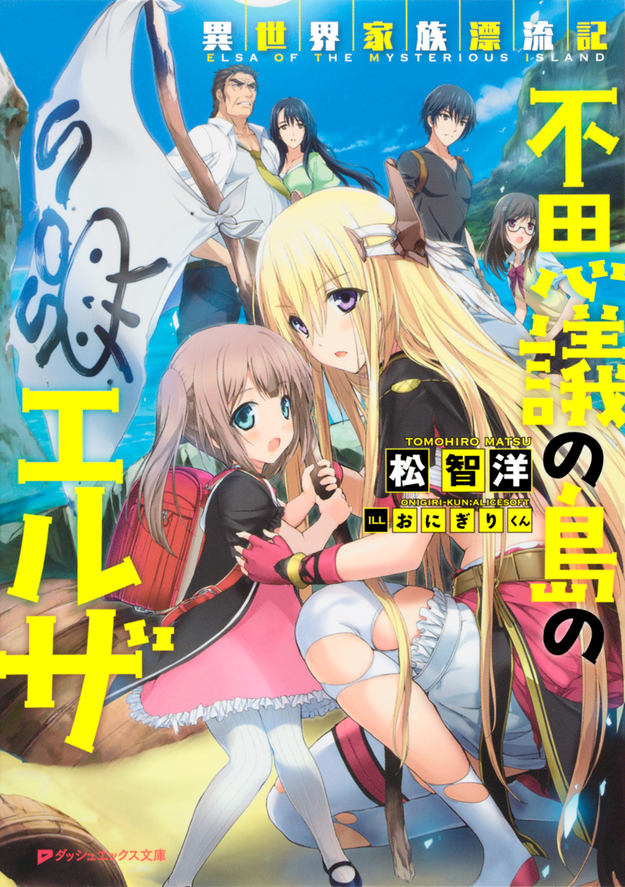
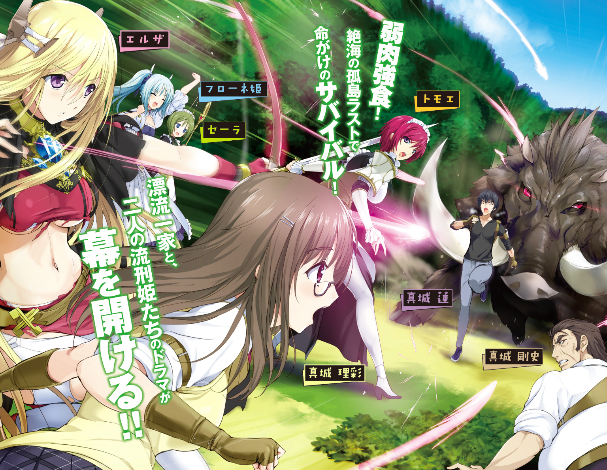
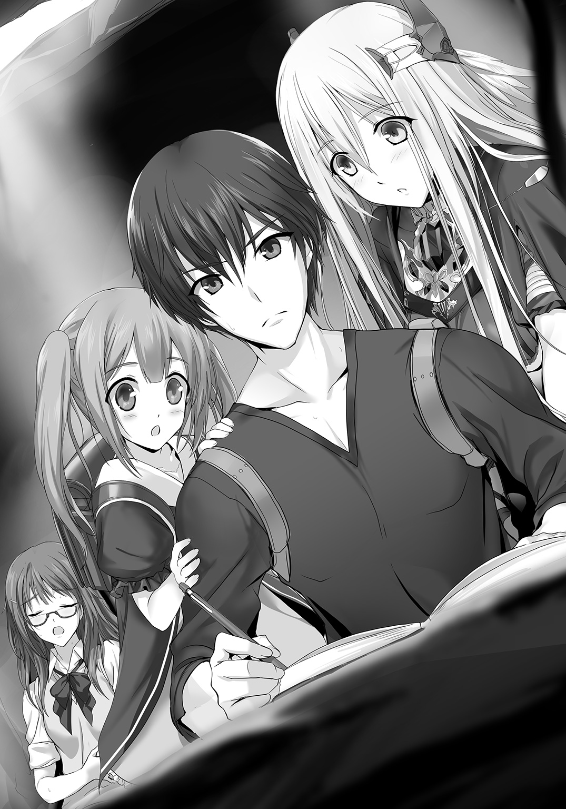
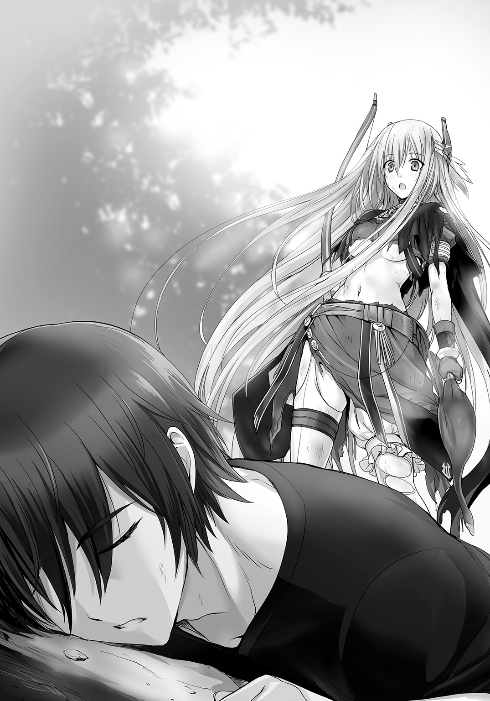
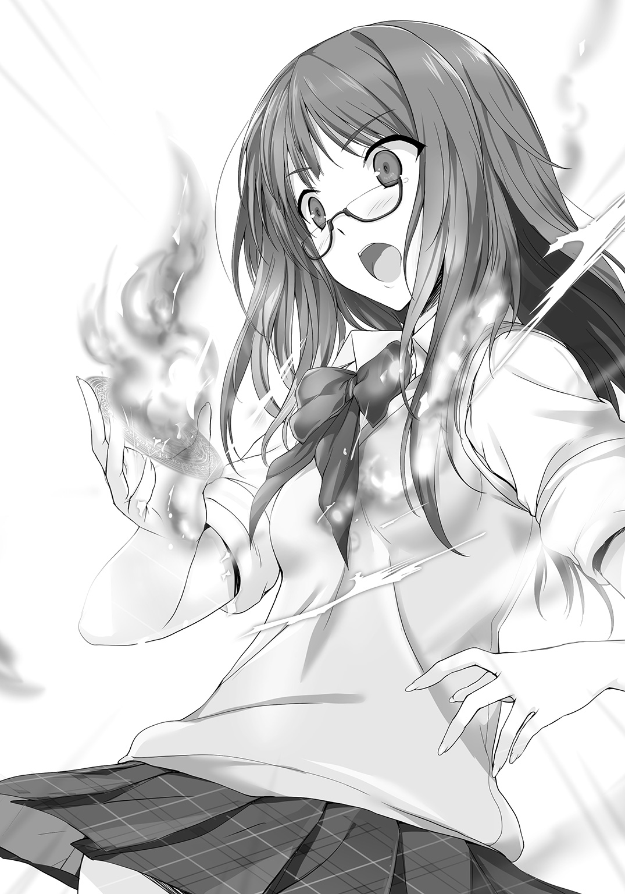
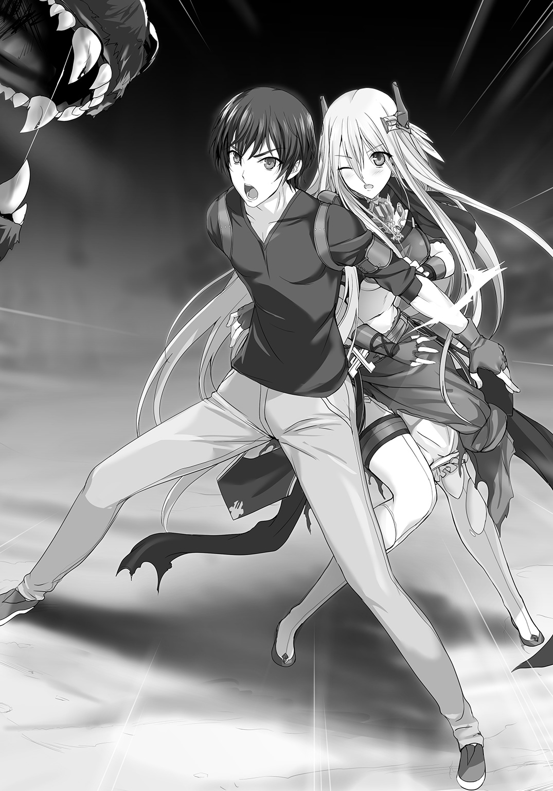
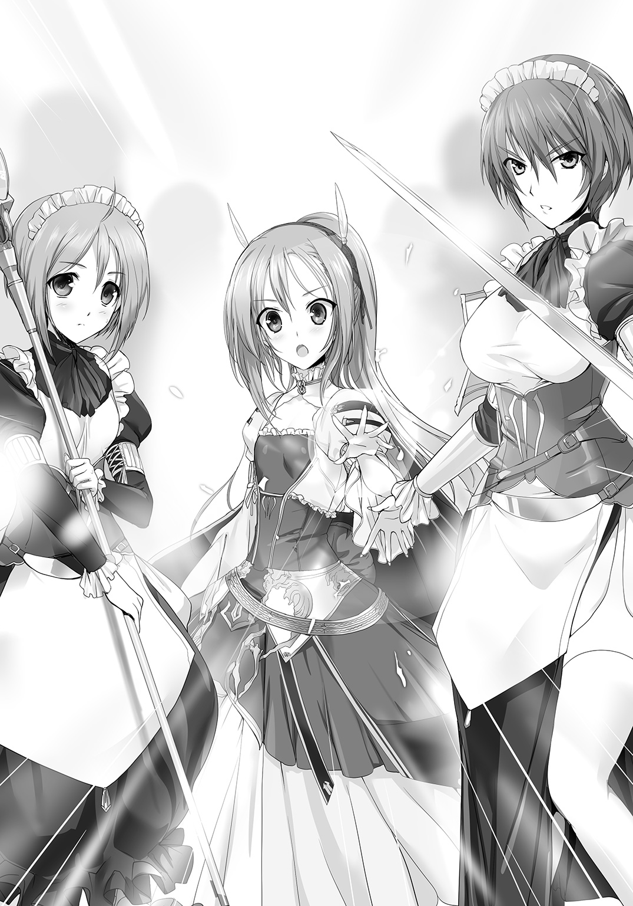
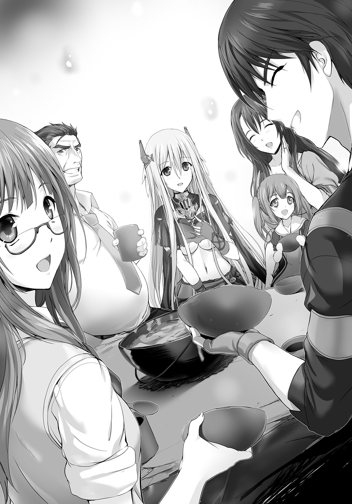
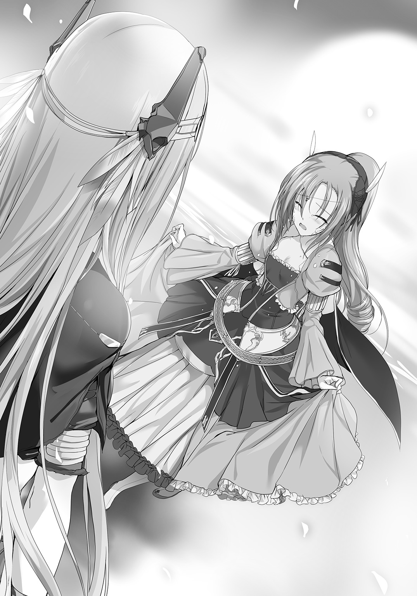
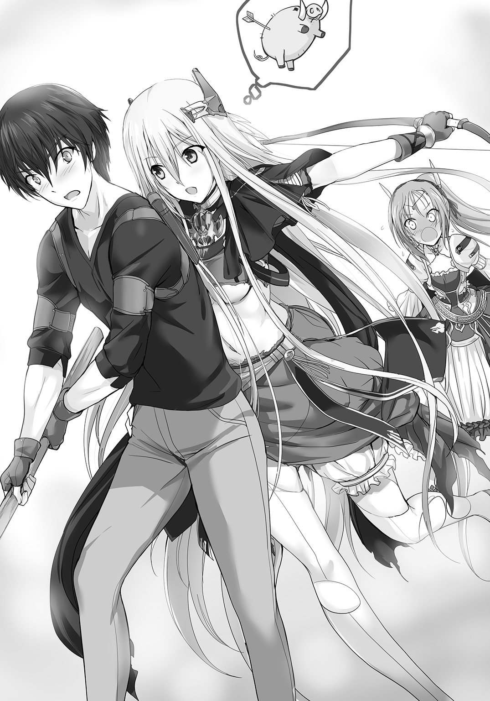

| 異世界家族漂流記 不思議の島のエルザ | |
| 松智洋 | |

この本は縦書きでレイアウトされています。
また、ご覧になる機種により、表示の差が認められることがあります。

 ダッシュエックス文庫DIGITAL
ダッシュエックス文庫DIGITAL
異世界家族漂流記
不思議の島のエルザ
松 智洋
僕の将来
清流大学附属高校一年 真城
もし、必ず「幸福」になれる方法があるとしたら、誰でもそれを求めると思う。
「幸福」というのはいつでも蜃気楼みたいに遠くに見えて、欲しいものを手に入れられれば、憧れる人の心を得られれば、多くの人の賞賛を浴びることができれば、たどり着ける気がする。
だけど思い返してみれば、小学生の時に見た中学生はとても立派に見えて、中学に入ればそれまでと違う新しい自分になれる気がしていたのに、中学一年生になった時に自分の前に見えたのは、またも一番下の学年になって先輩たちを見上げる現実だった。憧れた場所に、「幸福」は落ちていなかったのだ。達観する気もないけれど「幸福」なんてそんなものかもしれない。
でも、そこからの中学時代が楽しくなかったかというと、そうでもない。友達も少しはできたし、三年生になった時には陸上部で県大会にも出られた。
今、受験を終えて高校一年生になって、また一番下の学年からやり直さなければいけない状況になって、僕は少しがっかりすると同時に、ほんの少しやりがいを感じている。
次の目標ははっきりしている、目指す大学に合格して、父のような、他者に必要とされる人間になりたい。その先にあるのが「幸福」かは判らないけれど、二人の妹に恥ずかしくない兄であることができるような、そんな将来を手に入れられたら、自分の「幸福」は達成されるような気がしているから。
プロローグ
〈漂流日誌十六日目〉
人生というのは、何があるか判らないものだ。
世界というのは基本的に理不尽の塊でできていて、自分の思い通りになることなんてほんの一握りだけだ。自分の手足すら、自分の思い通りに動くわけじゃない。小さい頃、お箸をきちんと持てるようになるまで何度も練習した経験がない人はいないと思う。そうやって、なんとかかんとかいろんなことに適応していくのが人生で、一つできたとしてもすぐに別の課題が降ってくる。幸か不幸か、それでも大抵のことには既に経験者がいてくれて、親なり先生なりが、一応の正解を教えてくれる。ところがその通りにしていたらうまくいくかというとそれもまた全然別の問題で、結局は自分なりの答えを出していくしかないけれど、道しるべにはなるはずだ。
そうすると、俺たちの先達はロビンソン・クルーソーあたりということになるのだろうか。
でも、その内容もあまり俺たちの役には立ちそうもない。
俺、真城がこの場所に漂着してから、カレンダー代わりに始めたこの日誌も、もう十六枚目になる。毎回、同じことを書くのにもそろそろ飽きてきた。
すなわち――お腹が空いたなあ、ということだ。ああ、ラーメンが食べたい。
空きっ腹を抱えてサインペンを走らせる俺の視界を、いい匂いのする黒髪が塞いだ。
「ねーねー、にーちゃ、なにかいてるの？」
日課の日誌を書き始めた俺の手元をのぞき込んだのは、俺の妹である真城蕾だ。
蕾は、お気に入りのランドセルを背負ったまま、大きな瞳を俺に向けた。
小首を傾げるような仕草がとても可愛い彼女は、現在六歳。我が真城家の天使としてみんなに可愛がられる彼女の口には、俺が午前中のノルマとして入手してきたほんのり甘みのある蔦が咥えられている。ガムを嚙むようにこの蔦を嚙んでいると多少は空腹が紛れるのだ。
そうたくさん見つかるものでもないので、見つけたら彼女に渡すのが家族のルールだった。
「あれ、にーちゃ、あまちゃん、たべる？」
あまちゃん、というのはこの謎の場所で見つけた数少ない甘い食べ物に、彼女が付けた名だ。
「いらないよ。にーちゃはいっぱい食べたから、蕾が食べな」
「うん！ えへー、それでそれで、にーちゃはなにをかいてるの!? おてがみ？」
「違うよ。これは、日記。この場所に来てからあったこと、書いとかなきゃ判らなくなるだろ？」
「あー、そーかー。つぼみたち、そーなんしたんだもんねー」
今ひとつ緊迫感のない彼女は、うんうん、と頷いてみせる。
「そうそう、そうなんだよ」
「あーっ、だじゃれ！ だじゃれだ！」
まったく冗談を言ったつもりもなかったのだが、蕾は腹を抱えて笑い転げる。
少ない道具を工夫して掃除をした岩屋の中に埃が立って、鋭い声が飛んだ。
「......兄さん、静かにしてよ。動くとお腹空くでしょー」
「ええっ、俺？ 今の、蕾なんだけど......」
情けない声を出す俺に振り返るのは、俺に全然似ていない美少女だ。眼鏡の似合う彼女は、俺のもう一人の妹、真城理彩。成績も運動もそこそこの俺と違って優秀な万能型の妹も、突然の嵐に巻き込まれてこの不思議な場所に流れ着いてからは、成長期の食欲をもてあまして元気な時と元気じゃない時の差が激しい。
今は、日記を書いていた俺の背後で、床に転がってエネルギー消費を抑えていた。漂着した当初は、こんな虫の出るところで寝られないと泣き言を言っていたのに逞しいとも言えるかな。
「ねーちゃ、あまちゃん、たべる？」
「あー、蕾は優しいね。でも、それは蕾のおやつだからねーちゃはいらないよ」
横になったまま理彩は手を伸ばして、蕾の頭を撫でる。
眼鏡の奥の瞳に表れる優しい笑みは、彼女が家族思いである証だ。
「理彩、あとでもう一回、探してくるよ」
「ま、兄さんの分だったらもらうけどね」
「なっ、なんだよその扱いの違い！」
思わず石造りの粗末なテーブルに突っ伏して頭を打ちつけそうになった俺に、理彩と蕾は声をそろえて笑った。二人が笑うようになったのは、ほんの最近だ。なんだかそれが嬉しくて、俺もにやにやしてしまう。
「ふふ、みんな、もう少し待ってね。今日は、が見つけてきたツタとエルザからもらったジャガイモモドキと、ダーリンちゃんが捕まえてくれたお魚があるから、晩ご飯は豪華よ～」
少し間延びした声。石造りの古めかしい台所に立っているのは、俺たちの母、真城美野里だ。年齢不詳と言われる美貌と、三人産んでいるはずなのにまったく衰えないスタイルで、ご近所のアイドルだった母は、お風呂すらないこの場所に来ても相変わらず美人だった。
その足下には、筒状の棒にリズミカルに息を吹き込み、燃えにくい薪で竈に火を熾している大柄な中年男性もいる。母のダーリンちゃんこと、真城剛史だ。遭難する前は大学病院の勤務医として活躍していたのだが、この場所に来てからは力仕事担当を黙々とやってくれている。
もちろん、俺も手伝っているのだが、寡黙な父は黙って母の手伝いをしていることが多い。
「ダーリンちゃん、お味見、してくれる？」
木ぎれを削って作ったスプーンで、煮えたスープをすくい母は父の口元に持っていく。
「どーお？」
「バランスは、悪くない」
真顔で返した答えがこれである。この場所に来てまともな食材も調味料もない中で必死で料理している母に対しても、こういうぶっきらぼうな態度なのだ。蕾はともかく、俺や理彩とはほとんど会話が成立しない頑固親父なのだ。正直、どう対応していいか判らん。
今のバランスがいいっていうのも栄養の話で味の返事じゃないよな......
そんな会話も微妙な年の差夫婦にも拘わらず、母は父にメロメロなので、世の中は判らない。この不思議な場所に漂流してきても、そこは全然変わらないのはすごいと思う。
「やーん。ダーリンちゃんにほめられたー。えへっ」
「うむ」
両親は納得したらしく、料理を続けている。理彩は砂を嚙むような顔をしていますよ？
「あーあ、日本にいたときなら、お腹いっぱい、とかごちそうさま、とか言うんだけどねー。冗談でも言えないわ。はあ......」
ごろり、と寝返りを打って両親を視界から消した理彩は溜め息を再度放出した。
「あ、エルザ！ おかえりなさい！」
狭い岩屋の中で、ぼうっとみんなの様子を見ていた俺は、蕾の声で我に返った。
古びた岩屋の入り口には、一人の少女が立っていた。
その姿は、中世の騎士のようであり、剣と魔法のファンタジー世界から抜け出た一幅の絵のように美しかった。薄い金色の長い髪は、この環境下にも拘わらず痛んだ様子もない。
「―――！」
駆け寄る天使を、優しい笑顔で抱き留めてくれる。彼女は、俺たちにも笑顔を向けた。
「おかえり、エルザ。遅かったね」
剣と弓を携えた美しい少女に、俺も声をかける。エルザの口からも、言葉が漏れた。
だけど、その意味は俺たちには判らない。俺たちの言うことも、エルザには判らない。
エルザが何とか覚えてくれたのは、俺たちが自分をエルザと呼ぶことだけだ。
俺たちのほうも、努力したけれど未だに言葉の壁はまったく乗り越えられないでいる。だから、俺たちの会話は手振り身振りだ。
おかえり、というように手を振ると、エルザも笑顔で振り返してくれる。お互いに、これで少しだけ安心する。エルザは、いい匂いに気づいた、というようにラブラブな両親のほうを向く。
「あら、大家さんのお帰りね。ちょっと待ってね。すぐにご飯できるから～。暗くなると、お料理できないものね～」
基本的に明かりのないこの場所の暮らしでは、夜が来ると本当に真っ暗になってしまう。その前に食事の支度を済ませないと大変なことになるのだ。
と、エルザは腰につけていた籠から、小さな鳥を数羽取りだした。今日の獲物だ、というように母さんに差し出す。
「あらー、いいの？ エルザ」
小鳥を食べるジェスチャーをする母に、エルザは頷いた。
「うーん、思わぬご馳走ね。鍋に入れて、半分は明日の朝ご飯にしましょう。お出汁が出てきっと美味しいわよ」
「羽を毟ろう」
父が、当然のように母の手から小鳥を受け取り、首を落として羽を毟り始める。
初めて見たときは吐きそうだったその作業を見ても、もう蕾すら何も言わなかった。
「エルザ、お疲れ様。休んで休んで。ご飯捕ってきてくれた大家さんにはサービスしないと」
同性の気安さからか、理彩がエルザの手を引いて俺たちのほうに座らせて、木で作ったコップに水を汲んでエルザに渡す。エルザは微笑んで半分だけ飲み、残りを理彩に渡す。
この異世界では水は貴重だ。理彩は、エルザの気持ちを受け取って一口飲み、あとは蕾に飲ませる。エルザと俺のそばに陣取っていた蕾はニコニコしながら少しずつ喉を潤した。
この、神秘的な美少女に出会わなかったら、俺たちはとっくにこの場所で死んでいただろう。
今住んでいる岩屋も、食料の大半も、エルザが俺たちと共有してくれているだけで、もともとはエルザのものなのだ。この謎の世界――少なくとも地球のどの国とも違う場所に来て、俺たちが生き延びられたのは、たった一人、この岩屋で暮らしていた少女に助けられたからなのだ。そのことへの感謝を、俺たちは忘れたことはない。
「......？」
「にーちゃ、エルザ、なにかごよう？ って言ってるよ？」
不思議とエルザの気持ちを読み取って代弁することが得意な蕾の言葉で、俺はまじまじと彼女を見つめていたことに気づいた。慌てて目をそらすと、持っていたメモ帳に手をやる。
エルザは、興味深そうに俺の手元をのぞき込んで、首を傾げた。
どことなく蕾の仕草に似ていて、俺は少し笑ってしまった。
まあ、日本語は読めないよね。俺は、ある思いつきを試すことにしたのだ。
「わー、にーちゃ！ じょうず！」
両親が食事の用意を終える頃、俺の思いつきも一段落していた。
窓から差し込む太陽の光も、だいぶ水平線に近づいている時間だけど、俺はメモ帳から一枚紙を破り取り、エルザに差し出した。
「ほほー、どれだけいっつもエルザちゃんのことを見つめているかよくわかるねぇ」
理彩がからかうように笑う。エルザは、不思議そうにその紙を受け取って......顔を綻ばせた。
「わ......エルザ、笑った！」
理彩と蕾が、歓声をあげる。どこか陰のある金髪の美少女は、なかなか素直な笑顔を見せてくれないのだ。その笑顔を勝ち取ったことが誇らしくて、俺は鼻の下を人差し指でこする。

「ま、そんなに上手くはないけどね。特徴はつかめてるだろ？」
俺が渡したのは、エルザの似顔絵だった。そんなに上手くはないけれど、特徴は捉えていると思う。エルザも、自分が描かれていると判ったようだ。
「.........！」
聞き取れない言葉だけど、ありがとう、という意味だと俺は確信している。
「いいんだ。エルザがしてくれてることを考えたら、こんなのお礼にもならないよ」
俺が手を振ると、エルザも手を振る。そのオウム返しの仕草を見て、蕾が笑った。
「あははっ、つぼみもやるーっ！」
なぜか三人でお礼のジェスチャーを繰り返していると、両親が鍋と手製の水桶を持ってやってくる。夕飯......というか、今日二回目のご飯ができたみたいだ。
「さあ、食べましょう。お腹いっぱいにはならないと思うけれど、寝られるくらいには量はあるわよ。あ、蕾とエルザの分は、たっぷりあるからね」
母の笑顔がまぶしい。そして母は、少しすまなさそうにエルザに水桶を差し出す。
「疲れていると思うけど、お水なくなっちゃったの。お願いできる？」
母の意図をすぐに察して、エルザは立ち上がると両手を前に出して、何かを呟く。
瞬間、彼女の手には神秘的な光が生まれ、みるみるうちに水の塊へと変化していく。
その様子を見て、俺は、改めて溜め息をつく。本当に、地球じゃない場所に来てしまったのだ、と。エルザの使う魔法、見たことも聞いたこともない動植物。
ここが、異世界だと気づくのに、それほどの時間はいらなかった。ばしゃり、と水の落ちる音がする。今のところ、これが唯一の真水の調達法なのだ。
何度見ても、不思議で仕方ない。俺たちは、その不思議な力に魅入られたように彼女の手から生まれた水が桶を満たすのを見つめていた。
「キ、キャアアアアアア！」
ところが、である、珍しいことに、エルザが悲鳴をあげた。
「エルザ!? どうしたの？」
俺は慌ててエルザに駆け寄った。わなわなと手を震わせるエルザ。
彼女の手元には、跳ね返った水に濡れてビショビショになってしまった、彼女のイラストがあったのだ。
先ほどの笑顔が噓のようにうなだれる彼女に、俺は笑顔を向ける。
「大丈夫、また描くよ」
俺の動作は伝わったみたいで、エルザは一瞬だけ顔を輝かせ、それから、首を横に振った。
そして、ぎゅっ、と手の中のメモ紙を胸元に当てる。
泣きそうな顔で見つめられて、俺はどうしていいか判らなかった。
「エルザねー、このえがいいんだって！」
蕾の解説を受けて、俺も、理彩も、母さんも笑顔になる。父さんはいつものままだけど。
そんなエルザに、理彩がそっと手を伸ばした。
「えーとね。だったらこうしてたら乾くと思うよ」
エルザの手から受け取った似顔絵を、理彩は壁に貼る。
心配そうな顔をして、エルザは理彩の手元を見ている。
俺は、大丈夫、というようにエルザの隣に立ち、肩を叩こうとして......やめておいた。
エルザは、男性に触れられるのを嫌うようなところがあるのだ。
「......ね？」
油性のサインペンで書かれたイラストは、濡れてもそれほど滲んではいなかった。
殺風景な岩屋に、エルザの似顔絵がちょっとした彩りを与えてくれる気がする。
「素敵。このままここに飾っておくのもいいわね」
「うむ」
母さんと父さんが頷くと、エルザは、ほっとしたようにかすかな笑顔を見せてくれた。それは、小さな野花が綻ぶような小さいけど、優しい笑顔だった。
俺たちの家族の異世界漂流の日々は、空腹と不安と、不思議に満ちている。そして、俺たちとエルザの不思議な日々は、まだ、最初の一ページ目にすら達していないのだった。
第一章 嵐の朝は
人間は、生まれつき平等だ、などと最初に言った噓つきは誰なんだろう。
そんな噓を広めた人間を、目の前において問い詰めたい。小一時間では利かない。三日三晩くらい問い詰めたい。そんなわけないだろう、と。
例えばサッカー選手になりたい小学生がいたとしよう。その子に、憧れの現役サッカー選手が子どもの頃からやっていた練習の詳細を伝えて「この通りにしたらサッカー選手になれるよ」と教えたら、その子はサッカー選手になれるだろうか。
ごく一部の例外を除いて、大半の場合、そんなことにはならないはずだ。
体格、性格、能力、家族構成や周囲の状況が違う以上、結果も相応に変わる。
それらが全部同じでなければ平等とは言えないんじゃないか。
十分に環境が整っていて、本人も努力しても、上手くいかないことなんていくらでもある。
努力すれば必ず夢が叶うというなら、今頃、俺は......
俺、真城は、自分の惨めさを痛感しながら朝を迎えたのだ。
夜も明けやらぬ午前四時だというのに、ホテルのレストランは盛況だった。
「、急げ」
「わかってるよ......でも眠いんだってば」
気乗りしないまま早起きをした俺は、眠い目をこすりながらぺたぺたと歩く。
周囲は結構賑やかで、日本語はほとんど聞こえてこない。外国にいるんだなあって気がする。
「あ、にーちゃ！ パパ！ こっちだよ！」
入り口から見える中程のテーブルに、椅子に立ち上がって両手を振る少女がいた。
年齢より少し小柄な大きな瞳が印象的な美少女で、長い黒髪をツインテールにまとめている。
顔いっぱいに笑顔を作ると、周囲がぱあっと、温かくなるようだ。
テーブルに歩み寄ると何事にも動じない父の頰がかすかに緩み、俺も表情を改める。
「おはよう、蕾。遅れてごめんね」
何とか笑顔を作って、来月から小学校一年生になる予定の妹に返事をした。
「おはよう！ にーちゃ、ここ、すっごいんだよ！ デザートのおかしがね、えっと、にじゅっこもあったの！ つぼみ、ぜんぶたべられるかな！」
「ふふっ、二十個じゃなくて二十種類ね。全部はやめたほうがいいわよ、蕾。太っちゃうよ？」
「えーっ、ふとるのやだーっ！」
「だよねー女の子だもんねー。わかるわかる。きちんと選んで食べようね」
我が家の天使がフォークを振り回すのを止めたのは、落ち着いた眼鏡の美少女だった。理知的な雰囲気とキビキビした動作、才色兼備な彼女もまた俺の妹で、真城理彩という。高校一年生で、ダンス部のエースらしい。ついでに彼女が通っているのは、俺が高校受験で通らなかった学校だ。必死で勉強しても落ちた俺と違って、彼女は特に苦労した様子もなく合格していた。その姿に尊敬と諦めに似た賞賛を捧げたのは、まだ去年のことだ。にも拘わらず、俺という兄は......本当に、情けない限りですよ。
「兄さん、父さん、おはよ。早く食べないと、朝日に間に合わないよ？」
「わざわざ外国まで来て朝日なんて見なくてもいいだろ......」
「あー、兄さん判ってない。外国に来たら、特別な景色と特別な料理を楽しまないと。それに、昨日、ホテルの人にすっごくいい場所も教えてもらったしね。絶対、行かないと」
その特別な理由というのが引っかかっているんだよなあ、と思うが口には出さない。
「理彩、それより」
重々しい動作で周囲を見回していた父が理彩に何かを尋ねようとしたとき。
「んー、おはよう、ダーリンちゃん、今日も格好いい！ ダーリンちゃんの大好きなもの、いっぱい取ってきたからね！」
肉や野菜が満載のお皿を両手に持って、そのこんもりした食料の山に負けない巨乳を突き出しているのは、俺の母親だった。まあ、周囲の誰に聞いても信じてもらえないと思う。
かなりの年齢差で父と結婚した母は、今でも二十代の美女にしか見えない。三人も子どもを産んでいるにも拘わらず、全く崩れない体形に、衆に優れた美貌。道を歩けば十中八九ナンパされ、今回訪れている南国の島でも、既に両手に余る男に声をかけられていた。
「美野里、おはよう」
母の顔を見ると父は頷いて、二人は当然のように並んで席を占める。
「はい、ダーリンちゃん、いっぱい食べてね」
「うむ」
母は父の口までフォークで運びたそうな空気を醸し出すが、父は軽く首を振って小さな愛娘に視線を送る。母はアイコンタクトで微笑むと、隣に座る蕾の面倒を見始めた。父は黙々と母の用意した料理を口に運ぶ。俺と理彩としてはいつもの光景だが、周囲から母を見つめていた男たちの溜め息が聞こえて、ちょっと同情するような気分になった。
もう十八歳になる息子――俺のことだが――がいるとは思えない、新婚夫婦のような仲の良さが売りの二人にかかると、ナンパに来る男たちはスパイスにもならない。今日は負け犬の気分に同調しやすい俺は、食欲を感じられなくて溜め息をつく。そんな俺の前に、イングリッシュブレックファーストに見立てたプレートが差し出された。俺の好きそうな焼きたてのクロワッサンに、珈琲は冷めないようにポットで用意してくれている。
「はい。兄さんが遅いから見繕ってきたよ。足りなかったら自分で取ってきてね」
「......やっぱ、こういうところから違うのかね。ありがとな、理彩」
理彩は、別に得意そうでもなく微笑んで、自分のおかゆ中心の朝食をぱくつく。
俺の好みをばっちり把握したソーセージやベーコンの並んだプレートの朝食を半分も食べられなかった。以降、俺はこの日の朝食を食べ残したことを、ずっと後悔することになる。
ホテルから車で向かったのは、名前も覚えられない島の突端にある観光スポットだ。
もともと今回訪れているこの島は、学校では習わないレベルの小さな島国で、観光地というにも全然有名じゃないけれど、世界のツーリストにとっては知る人ぞ知る場所らしく、旅行や調べ物が大好きな母と理彩が見つけたお勧めのところだ。実際、気候も温順で食べ物はとても美味しい。島の人たちも親切で、父が英語を話せることもあり、何一つ困ることはなかった。でも、俺たち兄妹にとっては初めての海外旅行なんだから、ハワイやグアムといった定番や、ヨーロッパなんかに行ってみたかった気もするんだけどね。
いやまあ、実際、先に聞いていたら最初に反対したのは俺だったと思う。この旅行自体が母と理彩が父の了解のもとに、秘密裏に計画したものだったのだ。
何故なら、この旅行は――
俺の大学合格と、蕾の小学校入学を祝う、サプライズお祝い旅行だったのだから。
――俺が志望校から不合格通知をもらったせいで全部台無しだけどな！
背水の陣で臨んだこともあり即座に浪人が確定した俺は旅行自体を辞退しようとした。
が、うちの家族は残念なことに――家族思いなのだ。
俺が行かないならみんな行かない、と宣言する母と妹たちに根負けし人生初の海外旅行に来て、今日で三日目。本日は、昨日ホテルの人たちから教えてもらった秘密のスポットに行くことになっているのだ。
島に来てからは美味しいものを食べてプールに入って、珍しい景色や動物を見るツアーに参加したりしてのんびりしていたのだが、つたない英語でホテルの女性従業員と話していた理彩と母が、その情報を教えてもらって小躍りして俺たちに報告に来てくれたのだ。
「この島の伝説で、ある岬で朝日に祈ると、願いが叶うんですって」
「島の古い言い伝えだから、もう知ってる人が少なくてほとんど誰も行かないから、大きな願いでも叶うかも、って言ってたの！ ダーリンちゃん！ これ、行かないわけにいかないわ！」
「うむ」
......父さん、あなた、母さんから言われたら全部頷くのはやめたほうがいいのでは......
「おねがいすると、いいことあるの!?」
目をきらきらさせて、我が家の天使が姉たちの顔をのぞき込む。
「そうなんだって!! 蕾、どんなお願いする！」
「んー、んー、んーとっ、にーちゃがごうかくしますようにって！」
「うむ」
父が、強く頷きながら蕾を抱きしめた。理彩は呆れたように腰に手をやる。
「蕾は、今度は一年生になるんだから自分のお願いしていいんだよ。兄さんの分は、わたしが祈るから大丈夫」
「そうそう。母さんも祈るわ。父さんも、でしょ？」
「うむ」
重々しく頷く父。蕾はその腕の中できゃっきゃっ、と笑う。
優しい空気の中、俺は、何とか笑顔を浮かべるだけで精一杯だった。
（どこかに消えてしまえるなら、今すぐ消えてしまいたい......）
妹たちに尊敬される兄に、両親に誇られる息子になりたくて、俺は結構努力してきたつもりだ。塾にも真面目に通ったし、部活では中高と陸上部に入り、800ｍ走で県大会にも出た。
だけど......全部、そこで終わりだ。頑張っても、結果は自分を裏切る。
岬に向かうタクシーの中で、俺は昨日の気持ちを思い出して吐息をかみ殺す。
どうして、俺はこんなにダメなんだろう。そんな気持ちが自分を締めつける。
暗い俺の気分を示すように、タクシーのフロントガラスに、ぽつりぽつりと雨の気配がした。
――いっそ、このまま雨になって朝日が見られなければ......そう思って苦笑する。自分の持っている不運が、こんなところにも影響している気がしたから。
岬に着くと、俺たちはタクシーを降りた。他の観光客はおらず、周囲に民家も見えない。確かに秘密のスポットという感じだ。岬と言うけど、それほど大きくはなく、入り江のような海岸に降りるのも簡単だった。みんな最低限の物が入ったバッグと傘だけを携行した身軽な格好だ。
一時間後に迎えに来ると約束して、タクシーは帰って行った。
万一なかなか来なくても、携帯電話もあれば携帯食もあるので、それほど心配はない。
むしろ、ぽつぽつと降っている雨が強くならないかが不安だった。
水平線のほうは晴れているので、通り雨なのだろう。朝日は拝めそうに思われた。
「あれ？ 蕾、またランドセルで来たの？」
「えへへっ、だって、うれしいんだもん！」
買ってもらったばかりの自慢のランドセルを背負い直して、我が家の天使は満面笑顔になる。長年憧れていたランドセルを買ってもらい、彼女は今回の海外旅行はランドセルで行くと譲らなかったのだ。彼女に甘い両親の「最近はハリウッドセレブもランドセルをオシャレに使ってるって雑誌で読んだことあるわ」という一言を引き出し、彼女のおねだりは成功した。
まあ、あの調子だと帰る頃にはぼろぼろになって、もう一つ買うことになりそうな気がする。
「雨宿りしながら待ちましょう？ あの岬の下がいいんじゃない？」
お祈りする予定の岬に向かって、理彩が率先して歩いて行く。
慌てて父が後を追い、母がそれに続く。俺は、蕾の手を引いてゆっくりと砂浜を歩いた。
――お祈りって言っても......なあ。落ちたばかりで神頼みも情けないよ......
いまいちネガティブに俯いていた俺の視界の端に、何かがキラリと光った。まだ白み始めたばかりの空からこぼれるわずかな明かりの中、妙に気持ちをざわつかせる輝きだ。
「あれ......にーちゃ、どうしたの？」
「......い、いや。何か光ったんだよ......よっと」
俺は、光った場所を探る。すぐにガラス片のようなものが見つかった。少しがっかりしながら手を伸ばし、砂から取り出す。出てきたのは、銀色に輝く丸い水晶のようなものだった。ビー玉のものすごく綺麗なバージョン、といえばいいのだろうか。俺は、目を引きつけられる。
「わー、きれいだねーっ！」
「そ、そうだな。じゃあ、蕾にあげるよ。ランドセルに入れとくよ」
俺は、蕾のランドセルのふたを開けて銀色の球を入れ、しっかりとふたを閉め直す。コロコロと転がる音がして、蕾は嬉しそうに跳ね回った。
「にーちゃ、ありがとう！」
「はは、拾ったもので喜ばれてもなあ」
そう言いながら、俺は同じようなものがないか、ときょろきょろと周囲を見回す。
それを待っていたように、俺の視界にもう一つの、先ほどより大きな光が映った。
まぶしくて、手のひらを目の前に翳す。
「うっ......あ、そうか、朝日が......」
岬のほうから、理彩が大声で俺たちを呼んでいる。
「もうすぐだよーっ！ みんなで願おうよ！」
「うん！ ねーちゃ！ すぐいくから！」
蕾は、振り返りもせずに駆け出してすぐに姉たちに合流した。
俺は、まだ動けないでいた。
みんなが心配してくれるのは嬉しい。応援してくれるのは嬉しい。
だけど、俺は、応援されたいんじゃなくて、応援して、支えられる兄になりたかったのに。
昇る朝日に視線を送る。ところが、朝日以外の輝きが、俺の足下から立ち上っていた。
「これ......さっきのと同じ水晶玉......？」
先ほどと同じような、銀色の水晶みたいなものが、俺の足下で朝日に輝いていた。
つるつるの表面が、足下に浮き出して見える。これ......すごく大きい？
両足をどけると、俺の足跡でえぐれた分がさらに朝日を弾く。
まぶしさに目を細めながら、俺は、引き込まれるようにその銀色の何かに手を伸ばした。
――その瞬間。
水平線から伸びた朝日の輝きが、俺と、家族のいる岬に降り注いだ。
目をつむって、何かを......きっと、俺の合格を祈っている家族は気づいていない。
俺も、思わず目をつむる。
俺が願ったのは――
心の中で言葉が形になる前に、横殴りの暴風雨が俺たちを襲った。
先ほどまで俺たちの上を微かに覆っていただけだった雲が、視界一面に広がっていた。
昇ったはずの朝日をあざ笑うように、周囲は真っ暗となる。
「きゃああああ！」
「パパ！ ママ！」
「蕾、理彩、美野里、俺に摑まれ！ ！ 走れ！ 真っ直ぐ走れば俺たちがいる！」
久しぶりに聞く、父の大きな声。俺は、それを目指して迷わず走った。
この日のために陸上をやっていたと思えるくらいの速度で、走ったつもりだ。
なのに、身体が前に進まない。足下を見ると、先ほど触った銀色の水晶玉が見える。
砂に隠れていたはずのそれは、暴風を浴びてその姿を露にしている。
「これって......」
俺は絶句し、足を取られて銀色の水晶の上に転んだ。痛みに身構えた瞬間、光が弾けた。
「なっ......!?」
「にーちゃああああああっ！」
父に抱かれた妹の手が、俺に届きそうな、わずかな距離。俺は、必死に手を伸ばす。
なのに、暴風雨が俺と、家族の身体を海に向かって吹き飛ばす。いつの間にか、足下の水晶は消えてぽっかりと穴が空き、家族のいた岬は崩れてなくなっている。
「みんなーっ！ 蕾！ 理彩！ 母さん！ ......父さん―――っ！」
声も嗄れよと、俺は叫ぶ。願うのはただ一つ、家族の無事と、再会のみ。
――それが、俺の、この朝の最後の記憶だった。
〇
――気がついたのは、見知らぬ浜辺だった。
「助かった......のか？」
呟きながら身を起こす。全身が怠くて痛い。
自分が嵐に巻き込まれてから、どのくらいの時間が経ってるんだろう。
「ここ、どこだ？ 蕾たちは......」
俺は、周りを見回した。
見える範囲にあるのは、海、砂浜、その奥に森というかジャングルみたいなものがある。
砂浜の両端には、大きな岩場が見えている。入り江みたいになっているようだ。
つまり......俺たちが嵐に巻き込まれた場所とは地形からして全く違う。
思わず、砂浜に座り込む。家族は無事だろうか。何より、それが心配だった。
「......参ったな」
最初に思いついたのは、カバンから携帯電話を取り出すことだった。
――圏外だった。
一応、海外でも使えるようにローミングしてあったはずだけど、電波自体が来ていないようではどうにもならない。次に思いついたのは、大声を出すことだ。
「おーい、誰かいませんかーっ！」
砂浜は意外に広いのだが、人影は全く見えない。たぶん、ジャングルみたいな場所にはほんの十分も歩けば着くと思う。至る所に大きな隆起や奇岩があって、視界は決してよくない。
「蕾ーっ！ 理彩ー！ 母さん！ 父さん！」
たとえ言葉が通じなくても、叫んでいれば周囲の人が気づいてくれるかもしれない。
なんとかして日本大使館まで連絡がつけば、どうにかなるはずだ。
家族が心配でばくばくする心臓を押さえつつ、何度も叫ぶ。
俺が無事なくらいなんだから、あの両親と理彩が無事でないはずはない。
三人がいれば、蕾のことも絶対に守るはずだ。
あの嵐で海に投げ出されて、近くの島か、別の海岸に流されただけだと思う。
嵐自体も、そんなに長時間じゃなかったはずだ。絶対に大丈夫。
そう自分に言い聞かせながら、応答を待った。残念ながら、まったくの徒労だった。
「誰もいない......って、無人島でもあるまいし」
現代社会において、こんな緑も砂浜もあるような場所が無人で放置されているとは思えない。俺たちが旅行に来た時に受けた説明でも、大きい島はほとんど人が住んでいて、環境破壊が問題になっている、と言っていた。すなわち、単にまだ開発されていない浜辺に流されたんだな。
「......仕方ない。まずは、少しでも見晴らしのいい場所を探そう」
俺は、身体についた砂を払うと歩き出した。
南国の熱波が、すぐに濡れていた俺の身体を乾かしてくれる。
しかし、これが地獄の始まりだと、俺は全然気づいていなかったのだ。
「......喉、渇いたな」
声がかすれる。だったら聞いている人もいないのにしゃべらなければいいのだが、独り言は止められない。俺がこの場所に漂着して、もう半日は経っているはずだ。
入り江のようになっている海岸を歩いて、大きな岩にも見える岬の上に行き、そこから周りを見渡そうと思ったのだが、これが甘かったらしい。
海岸を歩くの自体は平気でも、襲ってくる熱波は容赦なく体力と水分を奪う。
そして、近くに見えた岬は、歩くとなると思った以上の距離があった。
「うおー、思ったより遠い......でもあの向こうには人里があるかもしれないしな......」
もう一つの期待としては、船が通りかかる、という可能性もある。
シュノーケリングは俺も昨日楽しんだし、他の観光客と合流できればどうにかなるだろう。
「父さんたち、もうホテルに戻ってるかな......そうだといいけど」
あー、今朝、早起きし過ぎたからあんまり食べなかった理彩のモーニングプレート、全部食べとけばよかった......当然だけど、砂浜で目を覚ましてから、今までのところ飲まず食わずだ。
パスポートや最低限の着替えなんかを入れたバッグをなくしてなかったのは幸運だったけど、残念ながら俺のバッグには携帯食なんかは入っていなかった。
母さんは、いつも食べ物をバッグに入れてたけどな......
あと少しでどうにかなる、そう自分に言い聞かせながら歩く。
だいたい、こういう時に俺は根性が足りないんじゃないだろうか。あと一歩頑張っておけばなんとかなったはずというか。受験のことだけじゃなくて、陸上でも恋愛でも......あ、イヤなこと思い出しちゃった。高校の時に一度だけ勇気を振り絞って告白即玉砕したっけ。あれもなー、向こうから仲良くしてくるから上手くいってる気がしてたんだけど、そろそろつきあおうか、と言った途端、「いい人だけど、そういう対象じゃない」で粉砕されたよな。
あの子だって、もっと自分からアプローチしてれば違った気もするし......って、これも妄想では。単にモテない俺が優しくされて舞い上がっただけとか......いかん、思考がどうでもいい方向に流れている。暑さと渇きで、こんなことでも考えてないと歩けないのだ。
「う......」
何とか岬の上に上がった俺は、絶句した。
――終わりの見えないジャングル
――ごつごつした岩場に囲まれた海岸線
――水平線を覆う、真っ黒い雷雲
――ジャングルの奥に見える不気味な火山
周囲からひときわ高い場所に立った俺の視界に映るのは......そんな世界だった。
「う......そ......だろ？」
まったく人の気配がしない。
しかも見える範囲では島なのか大陸なのかも判らない。
この広い砂浜を越えて移動しようとしたら、断崖絶壁を含む岩場か、ジャングルを越えるしかない。それも、どこにいけば人里があるのか、全然判らないのだ。
「これって......どうしたらいいんだよ」
俺は、乾ききった唇を嘗めてつばを飲む。
――いや、蕾たちが倒れてるのを見つけたりするよりマシだろ。
ここに流されたのは、たぶん俺だけだってことだ。みんなは、きっと無事だ。
無理矢理自分を納得させて、俺は砂浜に戻ることにした。
「このままじゃ、倒れちゃうな。あの森に行って、水を探さないと......」
あれだけ大きな森だ。水源は豊富にあるはず。木の実くらいは見つかるかもしれない。
助けが来るまで、どれだけかかるか判らない。
俺は、体力があるうちに行動を起こすことにした。
岬から砂浜に戻ったところで、俺は天を仰いだ。
「......暗くなり始めてる」
方向も怪しい中で歩き回った結果、いつの間にか日が傾いていた。
太陽はジャングルの方向に沈んでいる。つまりあちらが西ということか。
......ほとんど無用な情報だけどね。
「急ごう」
早足で歩き出す。このままだと、ジャングルに着いた時には真っ暗になっているかもしれない。それじゃあ、水場を探したり果物を探すのは不可能だ。
助けを求める前に、食料を探したほうがよかったんだろうか。でも、まさか周囲に誰もいないなんてことがあるとは思わなかった......
錯綜する気持ちを抱えて足を急がせる。
だけど、たぶん、俺は焦りすぎていたんだと思う。
おぼつかぬ足取りで、俺は砂浜を歩く。
「うわっ！」
俺は、足下の岩に気づかず砂浜に倒れる。
「い、いて......」
情けないな、一日飲まず食わずで動いたくらいで、こんなにふらふらになるなんて。
そんな風に思って、俺は起き上がろうとする。
「......あ、あれ？」
身体が、言うことを利かない。
頭がガンガンした。夕暮れ時、少しだけ気温が下がったのがせめてもの救いだった。
「くそっ......なんで......」
先ほどまで、何とかしようと必死で動いていた反動なのか......悔しがる暇もなく俺はそのまま気を失った。
ざわり。
ふいに、ジャングルから影が躍り出た。
素早く確かな足取り。だが、その姿は細く優美だった。
金色の長い髪が、風をはらんで美しく舞う。
女性だった。
手足は子どものように細いが、上背はそれなりにあり、女性らしい曲線を描いている。
破れたままの服の上に、修復した跡のある鎧をまとっていた。
元は名品だと判る流麗な装飾を施された弓を持ち、一直線に走る。
「シッ！」
押し殺したような息を吐き、身を翻す。そこには、凶猛な顔の猛鳥が彼女を追っていた。
「キェエエエエエ！」
猛鳥は、フクロウを何倍にも大きくし、耳まで裂けた口にノコギリのような牙を生やしている。嚙まれれば、人間の手足くらい簡単に引きちぎれるに違いない。
「秘儀に従い、霊弓に赤の主神に魔力を捧げる。我が明日の命を賜らん！」
世界中のどこにもない言葉で紡がれた、力ある契約が彼女の持つ弓に光を与える。弓に魔力の弦と矢が生まれる。少女の顔が微かに歪む。魔力を使うことに苦痛が伴うかのように。
「狩りの矢！」
放たれた光の矢は、狙い通りに猛鳥に吸い込まれていく。
彼女が一回転して地上に立つと同時に、猛鳥もまた、大地にその身を落としていた。
長い金髪の少女は、得た獲物を無造作に摑みあげ、血抜きを施す。
獲物を腰にくくりつけて、足早にその場を立ち去ろうと動き出す。血の匂いを嗅ぎつけて、さらなる猛獣、最悪の場合、魔獣が出てきたら命の危険があるのだ。
「......!?」
その時、運命が交錯した。
「......これって、まさか......人間？ この島に？」
美しい金髪の少女の視線の先には、一人の少年が倒れていた。
陸上をしていただけあって、それなりに細身であり、顔も本人が思うよりは十分に美しい母の恩恵を受けている。努力家だけど、あまり結果は出せない少年。
真城が、少女の前に倒れていた。
少女は、立ち尽くす。どうするのが一番いいか、彼女には判らない。
無意識に今は亡き両親から託された首飾りを握りしめ、彼女は少年を見つめる。
――寂しそう。
なぜか、そう思った。
寂しい、それは、少女にとって一番なじみのある感情だからかもしれない。
「......今日使える魔法は、あと、ひとつ。お水は、明日作るしかないか」

少女はそう呟くと、少年に向かって両手をさしのべた。
「秘儀に曰く、緑の獣神に我が魔力を捧げる。獲物を運ぶ力を与えよ。強力の繭！」
その手から生まれた光に包まれた少年を、少女は軽々と片手で運び出す。
「......他にも、気配がする。今朝の季節外れの嵐......あれは......」
美しい少女は、初めて見る少年の顔をしげしげと見つめる。
年齢の近い人間を見るのは、初めてだったから。
いつの間にか空を支配した月明かりだけが、二人の出会いを見守っていた。
――送られてくる優しい風に、俺はうっすらと目を開けた。
（あれ......俺は......）
ぼんやりしていた頭がずきりと痛み、その刺激が自分が倒れたことを思い出させた。
思わず呻いた瞬間、頼もしい声がする。
「気がついたか。軽い脱水症状だ。心配ない」
いつでも冷静なこの声を間違うはずがない。
「父さんっ！」
俺、助かったのか！
よかった！ 誰もいない岬からの風景を見たときには、もう絶望しかなかったよ。
映画やＴＶの企画で無人島サバイバルみたいなものを何度も見たけど、自分で体験してみると、やっぱりあれは作り事の世界だ。一日歩いて、水一滴手に入らなかったんだから。
「はい、お水。飲める？」
優しい声と共に、木で作られた不格好なコップが差し出された。
母さんは、目元の涙を拭っている。
「母さん......」
俺は、母の膝枕で眠っていたらしい。視界いっぱいに母の顔が広がっている。手に大きな葉っぱみたいなものを持っているのは、ずっと俺を扇いでくれていたからだとすぐに判った。
「よかった。も無事でいてくれて」
ほっとした気持ちを全身で表してくれる母に笑顔を返して、コップの水を口に運ぶ。常温で、少しコップの底にじゃりじゃりするような砂も感じられたけど、今の俺にはどんな贅沢なジュースよりも旨かった。
少し気分もよくなり、俺は身を起こした。
俺の目に飛び込んできたのは、病院ではなく、殺風景な石造りの壁だった。
小さな竈と煙突に、空気を通すための穴としか思えない窓。
ぞんざいな造りの石のテーブルの周りには、これまた切り出したままといった風情の切り株が椅子代わりに並んでいる。土色に汚れたカーペットが敷いてあるのが、最低限、人の住む環境であることを示していた。
天井を見ても電灯はなく、ランプに類するものもない。
俺たちは、窓から差し込む月明かりでお互いの顔を確認するしかなかった。
でも、ここは俺たちが観光に来ていた島じゃない。日本みたいに何でも揃っていたりはしなかったけれど、電気も水道もあったのだ。こんな原始時代みたいな環境じゃなかった。
「......ここは、どこ？ 理彩と蕾は？」
「二人は寝てるわ。ここまで歩いてくるだけで、疲れ切ってしまったみたいで」
母の視線を追うと、入り口から一番離れた位置にある、大きさだけは十分なベッドが目に入った。ボロ布を集めたとしか思えないシーツにくるまれて、妹たちは寝息を立てていた。
ほっとすると同時に、二人のたくましさに笑いがこみ上げてくる。
なかなか大物だよな。
「歩いてきたって......俺のことも見つけて、運んでくれたの？」
「違う」
口数の少ない父が、無愛想に否定した。
「私たちも、ここがどこだか判らないの。だって、私たちは、あの子の案内で、ここに来ただけだから。このお家の中にがいるのを見つけたときには、心底びっくりしたわ」
母の言うことは、俺にはよくわからない。
「あの子って......」
「会ってないの？ 今、一人で外に出て行ったけど......」
母は、不思議そうに俺の顔を見た。
「貴方が先にあの子に会って、私たちを捜してくれたのかと思ってた」
「ごめん。俺、一日海岸や岬を捜し歩いて、そのまま疲れて砂浜で倒れちゃったんだと思う。倒れてる俺を、その人が運んでくれたんじゃないかな」
俺の回答に、両親は不審そうな顔をした。
「......それは難しいわよね、ダーリンちゃん」
「考えにくいな」
二人は同じ意見らしい。話が全然判らない......
その時、俺のお腹がぐるる、と情けない音を立てた。
「あ......」
「そっか。は携帯食を持ってなかったんだよね。それじゃあ倒れちゃうよね......でも、そのまま食べられるものは昼間、蕾たちにあげちゃったから少ししかないけど......」
母は、申し訳なさそうに目を伏せ、自分のバッグを探り始める。
「大丈夫だ。ここにある」
父は、ポケットからシリアルバーと飴玉、それからチョコレートを取り出した。おやつ程度のものだけど、母が「都会以外への旅行では、突然列車や車が止まったりして、ご飯が食べられないことなんて珍しくないの。二食分くらいは持ってたほうがいいのよ」とバッグに詰めていたものだ。こんな時、ウチの家族は母の機転にいつも助けられている。
「......これ、ダーリンちゃんの分じゃない。食べなかったの？」
「倒れない程度は食べた。水分のほうが問題だな」
父は、医師の顔で言う。まあ、噓だな。明日食事が手に入るかどうかも判らないんだから、節約しようとしたに違いない。
「やっぱりダーリンちゃん、格好いい......、ありがたく頂きなさい」
「......うん」
やせ我慢して遠慮しようかと思ったけど、倒れた身でそんなことを言っても説得力がない。
素直にシリアルバーを受け取って包み紙を破り、小さくかじると、甘みと歯ごたえが全身に染み渡る。本当にお腹が空いていたんだなあ、と痛感する。
ああ、今朝の朝食バイキング、もっといっぱい食べておけばよかった......
薄暗い部屋の中に、俺の咀嚼音が大きく響く。
「うむ」
俺の様子をずっと観察していた父が、安心したように頷いた。
もう大丈夫だ、ということだと思う。確かに、生きてるって気がしてきた。
「母さん、飴やチョコは取っておいてよ。少なくとも、すぐにここから出て行けるかどうか判らないんだろ？ こんな何もないところで、蕾の好きなお菓子が手に入るとは思えないし」
「......そうね。は賢いわ」
母は、俺の言葉に頷いて手早くチョコなんかをバッグにしまう。
「それで......母さんたちは、あの嵐の後はどうしてたの？」
「それがね、よくわからないの。海に投げ出されたような、穴に落ちたような......不思議な感じで、気がつくと、この場所にいたわ」
「じゃあ、漂着したんじゃないの？」
「それも全然判らないのよ。海が遠くに見えて、私たちはジャングルの中に立ってた。がいなくて泣き出しちゃった蕾をなだめて、周りを少しだけ捜したんだけど、見たこともない動物や植物ばかりでね、ダーリンちゃんが危ないから、救助が来るまで動かないほうがいいって」
「火を起こすものを持っていなかったのが痛恨だった」
父は、自らのミスを後悔するように珍しく長い言葉を吐く。飛行機で来たのだから、ライターの類を持っていないのは仕方ないと思う。誰もたばこは吸わないんだし。
「座れそうな大きめの岩を見つけて、私と理彩と蕾は、海のほうに何か来ないか見張ってた。その間に、ダーリンちゃんはを捜しながら真水の汲める場所を探しに行ったりね」
「徒労だったがな」
父のことだから、あれこれ考え、いろいろなことを試したのだろう。どうやら、みんなが流された場所の近くにも水場はなかったらしい。
「蕾のランドセルに入ってた水筒のお水のおかげで、何とか一日凌いだ感じね。夜が来て、気温も下がって、どうしようって話してた時に......あの女の子が、来てくれたのよ」
母が、頰を上気させて両手を組んだ。
「月の女神さまが現れたのかと思ったわ。野性味あふれる姿に金色の長い髪。憂いを帯びた表情で私たちを見つめるその顔は......見たこともないくらい、美人さんだったの」
誰が見ても厳つい父に一目惚れして押しかけ女房になった母がこれほど力説する美人か......
あまり期待しない方向で想像しておこう。
「人に会えてほっとして嬉しくて、私たちは必死で話しかけたんだけど......通じなくて」
「英語、ドイツ語はダメだった」
「私もいろんな言葉で挨拶したんだけど、無理だった。その子も、何度かはしゃべろうとしてくれたけど、彼女の言葉も聞き取れないのよ。ほら、余所の国の人がおしゃべりしてても、なんとなく何のことか判るって言うか、自分を指して名前を言う、とか共通の動作があるでしょ？ そういうのも一切、通じないの。私、困っちゃって......」
理彩も蕾も、手振り身振りで助けを求めたらしいが、その女の子は困ったような顔をしただけだった。そして彼女は、いきなり後ろも見ずに歩き出したらしい。
「アレは慌てたな」
「置いて行かれるかと思って、私たちは蕾を抱えて必死で追いかけたわよ。まあ、それは心配しすぎで、ついてきてるかどうか確認しながら歩いてくれたんだけど」
疲れ果てた身体に鞭打ってたどり着いたのが、この岩屋だったそうだ。
「お家の中にがいたときには、嬉しくて絶叫しちゃった。蕾も理彩も泣いちゃってね」
「命に別状がないのはすぐに判った」
その後、さっき俺ももらった生ぬるい水と、味の濃い塩の塊みたいな干し肉をもらって食べた途端、理彩と蕾は疲れが出たのか眠ってしまったらしい。それを見届けて、この女の子は岩屋を出て行ってしまったそうだ。
「へえ......そっちも大変だったんだね」
まあ、一人で当てもなくさまよった俺よりは正しいサバイバルをしている感じがする。
慌てて歩き回っても、危険なだけだよなあ......反省。
でも、結局は助けてもらえたわけだから、結果よければ全てよし、ということにしておこう。
俺は、もう一度両親に固く抱きしめられた。
「無事でよかった......」
心からの、言葉と共に。
その時だった。
かさり、と微かな音がして、俺は入り口に視線を送る。
そこには――確かに、女神がいたのだ。
金髪の、ボロをまとった戦乙女が、不思議なものを見るような目で、俺たちを見つめていた。
翌朝、俺たちが目を覚ましても、岩屋は岩屋のままだった。
「......夢じゃないのか」
昨日の出来事が現実だったことを確認して、俺は溜め息をつく。
身体を起こすと、もう室内には誰もいなかった。
昨日倒れたから、大事を取って寝かしておいてくれたんだろう。
「――」
「ちーがーうよ、あたし、つぼみだよっ！」
戸口の先から、元気な声がする。
俺は、慌てて日の光の中に駆け出した。
「あーっ、兄さん、起きて大丈夫なの？」
心配そうな顔で真っ先に駆け寄ってきたのは、理彩だ。
「ああ、心配かけたな」
「ほんとーだよ。つぼみ、しんぞーおくちからとびだすかとおもったよ！」
理彩に返事をした途端、我が家の天使も俺の腕に飛び込んでくる。
正直、昨日脱水で倒れて身体に力が入らないんだけど、気力だけで踏ん張った。
「ごめんな。蕾」
「いーよ。にーちゃ、こんかいはゆるしてあげる！」
次はないぞ、と釘を刺されてしまった。怖い怖い。
そんな俺たちを見つめている、金髪の美少女。
昨夜は月明かりしかなかったし、ほとんど挨拶もしないまま俺が気を失うように眠ってしまったので、はっきり見るのはこれが初めてだ。
でも、妙な違和感がある。現実感がない、というべきかもしれない。
母の審美眼は正確で、家族で美人に慣れている俺から見ても、初めて見るほどの美人だった。
南国で暮らしているはずなのに、肌は抜けるほど白く、髪も艶を保って足下まで流れている。
着ている服はボロボロでところどころ肌が覗いて、視線のやり場に困った。
それだけではなく......その上に、鎧としか言いようのないものを着ているのだ。
西洋の騎士が――いや、そういうインチキくさい言い方はやめよう。
俺が日頃遊んでいるスマホゲームやブラウザゲームに出てきそうな鎧を着ているのだ。
一応、ビキニっぽいものではなく急所を守るようにはできているが、それでも華奢だ。
この赤道直下の暑さで着るには不釣り合いだし、そもそも、コスプレ以外でこれを着る理由がある人がいるとは思えない。ただ、似合っている。とてつもなく似合っている。
ネットの掲示板に実在の姫騎士と注釈を付けてアップしたら、その日のうちに世界的な有名人になるに違いないハイレベルな美少女なのだ。
思わず見とれてしまった俺のほうを見て、少女は不思議そうに首を傾げた。
「あっ、ごめん。そうだ。助けてくれてありがとう」
我に返った俺は、蕾を抱いたまま深々と一礼する。
美少女は、不思議そうに俺のほうを見つめていた。
「んー、お辞儀は判らない文化圏みたいね。ダーリンちゃん」
「ここまで単語をすり合わせられないとは......」
俺たちのちぐはぐなやりとりを見ていた両親が、少しだけ肩を竦めた。
「会話、できないの？」
「ああ」
「身振り手振りはある程度通じるんだけど......やっぱり、言葉は全然ダメみたい」
「―――」
その時、美少女が声を発した。それは、鈴が鳴り歌を刻むような、そんな声だ。
俺たちの耳には、まったく切れ目のないハミングのように聞こえた。
ずっと聞いていたいくらい耳に心地よいけれど、言葉だと言われたら脳がついていかない。
「少なくとも、短期での習得は難しいな」
「とにかく、人がたくさんいる集落に案内してほしいんだけど......彼女以外、誰もここに来る気配もないのよね」
困ったわ、とあごに指を当てる母に、理彩が補足してくれる。
「早めに起きてわたし、あの子を見てたの。彼女、森に入って獲物を探してたみたい。それとも、仕掛けておいた罠を見回ってたのかな。飛ぶように走って、すぐに次の場所に移動するの。追いつけなくて帰ってきたけど、あの子、繊細な美人だと思ったらすっごい野生児だよ」
「......全然、そんな風には見えないな」
両親のジェスチャーに相変わらず首を傾げている金髪の美少女からは、とても想像できない。
「うーん。昨日、岩屋の中にある水はすべて使わせてもらってしまったから、何とかして水を汲む場所を教えてもらいたいんだけど......」
「難しいな」
水を飲む動作や、川を表そうと両手を泳がせたり、両親は真顔で面白い人たちになっている。
理彩は、ふう、と溜め息をつく。どうやら、すべて実験済みらしい。
「あー、つぼみもやるー！」
抱かれているのに飽きたのか、蕾は俺の手から飛び降りると美少女のもとに走った。
「えーとねー、あのねー、つぼみねー」
蕾は、うーん、と考える。
ぽん、と何かを思いついたように、家に駆け込むと昨日使っていた不格好なコップを持ち出してきた。
「ねー、いい？」
子どもらしい機転で、蕾はコップで水を汲む仕草をしてみせる。そして、飲む動作。
ところがコップには水がない。驚いた顔をして、コップを振る。
悲しそうな顔になり、喉を押さえる。
「みず......みずを......ください......」
待て。そんなことどこで覚えた蕾。
小学一年生にしてアカデミー主演女優賞でも狙うつもりか？
目を丸くする俺たちの前で蕾の名演技が終わると、初めて、金髪の美少女騎士？ は納得したように歩き出した。昨日使っていたものよりも、大きめの木桶を持ってきてくれる。
「すごい！ 蕾、お手柄よ」
母が嬉しそうに蕾を抱きしめる。父もうんうん、と頷いていた。
まあ、大人二人がかりで六歳児に負けたので、気持ちはわかります。
俺が参加する前に蕾が動いてくれてよかった......
とはいえ、力仕事くらいは手伝いたい。俺は、彼女が持つ大きな木桶を支えた。
「俺が持つよ。水場までは遠いんじゃない？」
海岸線の近くには、一つの水場も見つけられなかった以上、おそらく水場はジャングルの奥だと思う。そんなところまで女の子に水を汲みに行かせるわけにはいかない。
美少女騎士は、不思議そうに俺のほうを見たけど、別に文句も言わずに木桶を託してくれた。
「父さん、母さん、じゃあ、俺、この子と一緒に水を汲んでくるよ」
「大丈夫か？ 私が......」
代わろうとする父を押さえて、俺は美少女の後ろにつく。
「父さんはみんなを守っててよ。俺なら大丈夫だからさ」
昨日の絶望感は、今日はほんの少しの高揚感に変わっていた。
人に会えて、家族に会えて安心した。
それだけじゃなくて......情けないけど、浪人して、家族の中で居場所がなくなったような気がしていたけど、今は、俺がみんなの役に立てるかもしれない。
なんと言っても、一番若くて元気な男手なんだから。ここは、頑張りたい。
妹たちに尊敬される兄、復活作戦である。
妹たちから心配される兄から、頼られる兄への回帰を成功させたい。
ケツの穴が小さいと言われようが、受験失敗の傷が癒えていない俺は、この不思議な場所から救出されるまでに自分の存在価値を確認したかったのだ。
「じゃあ、行こうか......えっと......」
名前を知らないから、呼びかけられない。
その時、母がふと呟いた。
「野生の美少女......じゃあ、彼女のことは、本当の名前がわかるまではエルザって呼びましょ？」
「母さん......人の名前、勝手に付けちゃまずいんじゃないの？」
「いいのよ。これはあだ名みたいなもの。言葉を覚えたらきちんと直すから！」
「うむ」
母の独断から父の追認を経ると、我が家の家族会議は終了だ。
昔から、突拍子もないところがあるからな、この人は......
「エルザ......エルザね。覚えやすくていいかも」
「つぼみもさんせー！ エルザ！ なんかかっこいいね！」
理彩と蕾も気に入ったようだ。
「じゃあ決まり。エルザ、うちのをよろしくね」
笑顔で話しかけられて、エルザは不思議そうな顔で歌うような声を漏らす。
「うん、わたしたち、貴女のことエルザって呼ぶことにしたから。よろしくね」
「――」
返事はやはり、鈴の音のような歌声だった。
ところが、エルザ――そう呼ばれることになった金髪の美少女騎士――は、全然動こうとしない。むしろ、何かを探る顔で俺のほうを見ている。
「えっと......エルザ、さん、名前が不満なのかな？」
「んー、ちがうとおもう！ エルザ、にーちゃにこまってる！」
待て六歳児。俺がこの子を困らせてるって......何で？
水汲みに行く木桶を持ってるだけなんですけど......
俺は、仕方なくいったん大きな桶を地面に置いた。
「えっと、何か他にも準備するものがあるのかな......」
どうジェスチャーで伝えたものか、と俺が悩んだ、その時だった。
ふわり、とエルザの周りの空気が変わった。
足下から、すがすがしい匂いを持った薫風が巻き上がる。
エルザは、両手を桶の上に掲げ、銀の鈴が鳴るような歌声を放つ。
微かな苦痛の表情と共に、エルザの手のひらの上に、不思議な文様が生じていた。
ホログラムのように空中に書き出された文様は、邪魔する何かを押しのけるようにビリビリと震えている。次の瞬間、ととと、と何かのこぼれる音がした。
その音に、最初に我に返ったのは理彩だった。
「こ、これって......まさか......魔法？」
口に出されて、初めて見たものと頭の中にある概念が一致する。
そうだ。これは魔法だ。
ゲームやアニメ、映画なんかでは何度も見たことがある、魔法にしか見えない。
「すごい......」
蕾の呟きをきっかけに、水量は一気に上がった。彼女の手のひらの前に集まり球となった水が、木桶いっぱいになるまで注がれていく。
「まあ......水汲み......いらなかったのね」
「うむ。どうかな」
目を丸くした母に、父は難しい顔でエルザの青ざめた顔を見ていた。
言われてみれば、魔法を使っている間、彼女、少し辛そうだったけど......
だけど、エルザはそんなことを気にした風もなく、自らが生み出した水を、木作りのコップで汲み、微かな笑顔と共に蕾に差し出した。
「エルザ、ありがとう！」
顔を綻ばせる蕾は、何の警戒もせず魔法で生まれた水を受け取る。一瞬、父が止めたそうな顔をしたが、何も言わずに歯を食いしばる。
まず自分が毒味をしたいと思ったのかもしれないな。
でも、エルザの厚意を受けられなくなったら、その瞬間にこのサバイバルは前提から変わってしまう。なにより......今、目の前であり得ない現象を見てしまったばかりなのだから。
蕾は、一気にコップの水をあおった。
「すっごくおいしい！ エルザ、ありがとう！」
言葉は通じなくても、感謝の思いは伝わったのか、エルザは、小さな笑顔を蕾に返す。
その交流を俺たち大人組は、言葉もなく見守るしかなかった。
地球では、あり得ないはずの魔法。
まったく発声法から違う言葉。
コスプレにしか見えない鎧。
「......私が知っている植物が一つもないから、おかしいとは思っていたのだ」
父の、自分を納得させるような呟き。
「ここは......地球ではないのか」
その言葉に、母は父の手を握る。
俺と理彩も、顔を見合わせた。
目の前で見たことが、まだ心の中に入ってきていないように感じられた。
エルザが魔法の火で調理してくれた乾燥肉と野菜くずのようなものを煮込んだだけの、塩味しかしない朝食を食べた後も、俺たちは、口数少なく、自分たちの置かれた状況を理解するよう努めるだけで精一杯だった。
「よかったのかな......ご馳走になっちゃって」
エルザが飛び出していった岩屋の中で、理彩がぽつりと呟いた。
味としては、空腹という調味料なしでは喉を通るものじゃなかった。
水で量を増やしてはいたけれど、とてもお腹いっぱいになるほどの具はなかった。
だけど、みんな文句も言わずに、塩味のスープをすすった。
見るからにそれはエルザの貯めていた保存食だったのだ。自分の食べ物を、惜しみなく分け与えようとしてくれているエルザの気持ちは、蕾だって言われなくてもわかったはずだ。
「もしかして......エルザって、本当に、ここで、たった一人で暮らしているのかしら」
「ありうる」
父は、視線だけで日陰になっている、保存食が置かれた一角を指す。
そこには、乱雑に樽や壺に収められた少量の食材と、大量の塩を塗された動物の肉が干されている。量は、決して多くない。しかも、わずか二食、俺たちに振る舞っただけでずいぶん減っていた。その奥には、封がされているように見える保管庫もあるが、勝手に触るわけにはいかない。いない間に、俺たちが貴重な食料を奪うなんて、考えもしないんだろうな。
初めて会った俺たちを助けてくれたエルザに感謝しつつも、言葉が通じないもどかしさもある。ここがどこで......助けが来る可能性があるか、俺たちは、切実に情報を欲していた。
「エルザは、まほーつかいなんだから、ひとりでもくらせるのかな!?」
我が家の天使は、目をきらきらさせて自説を披露した。
「......まあ、魔法なしだったら、水すら手に入らないんだもんね。ここで暮らすのなら、魔法は必要なのかも」
理彩は、むん、と両手を突き出してエルザを真似る。しばらく悩んで、こちらを向いた。
「エルザって、どんな風に歌ってた？」
「それが聞き取れるなら、まずはエルザの本当の名前を聞きたいよ」
「まあ、それもそうか。魔法って、誰でも使えるものか判らないしね」
「でも考えてみて。彼女の着てる鎧は、結構立派よ。エルザの暮らしから考えて、ここで作ったとは思えないわ。ベッドに使われてる布も、彼女が着てた鎧下の服なんかを破いたものね。少なくとも、服を作れる人がいるはずよね？」
「我々同様、遭難したのかもしれない」
遭難、漂着、まあ表現はどうでもいいけど、意に反してこの海岸に流れ着いた可能性はあると思う。その時に偶然手に入れた資材と魔法の力で、一人で生き抜いてきたのかもしれない。
「じ、じゃあ、むしろエルザがわたしたちを救助に来てくれた人だって思ってるってこと？」
「いや......それはないだろ。言葉は通じないし、俺はぶっ倒れてたし」
「そっか......まあ、そうだよね。ぬか喜びさせちゃったんだったら悪いなって」
てへ、と可愛く舌を出す理彩。お前、ほんと余裕あるな。
「とりあえず、提案があるわ」
議論が漂流を始めた時、母がぱん、と手を叩いた。
「まずは、自分たちが持っているものを確かめない？ 何か便利なものがあるかもしれないでしょ？」
鶴の一声で、俺たちはそれぞれのバッグとランドセルを取りだした。
どれも、背負ったり肩からかけたりと旅行の邪魔にならないものばかりだ。
まず、全員が持っているのがパスポートだ。蕾の分は母が持っている。
それから財布。中身の額に違いはあれど、みんなそれなりの金額を入れている。バッグの中とポケットに一つずつ。父さんの革財布はひときわ分厚くて、存在感があった。
ハンカチやティッシュといった消耗品も、出るときに母に渡されたから人数分あった。
俺のデイパックから出てきたのは、スマートフォンに充電器、数冊のノートとポケット辞書。すみません。悪あがきです。だって浪人したばっかりだったんだもん。夜は一人で勉強するつもりだったのです。無理だったけど。あとはそれに併せての筆記用具一式。
携帯ゲーム機も入っていたけど、電源は入らないみたいだ。濡れたからかもしれない。
シャツとパンツとタオルに、水着も入っていた。なかなか優秀だと思う。
「はこれだけね。じゃあ理彩は......」
「に、兄さんの前で並べないでよっ！ 下着だって入ってるんだから！」
別に俺だって妹の下着なんて見たくないよ。黙って後ろを向く。
「んー、デジカメにスマホに、化粧品と着替え......ね。妥当なところかしら。日持ちしそうなお菓子が幾つかあるところはポイント高いわ」
「女子高生の必須アイテムだからね」
それはお菓子が、ということなんだろうか。
当面補給できないと思うけどな......ま、その間は高校もお休みだからいいのか。
「ダーリンちゃんは？」
「うむ」
みんなの中で一番大きなバッグを持つ父のもとに視線が集まる。
父は、まずはバサリ、とバッグから白衣を取りだした。
――そんなもの、持ってきてたんだね。海外でも勤務先に呼び出されたら駆けつけるつもりだったんだろうか。子どもの頃から、携帯で病院から呼び出された父さんの早着替え、何度も見たな......続いて薬の類が取り出されていく。医師とはいえ薬は処方箋がなければ手に入らない。だから大半は市販薬だけど、風邪薬や傷薬、痛み止めが網羅されているのは嬉しい。
「さっすがダーリンちゃん！ いつも頼りになるぅ～」
「うむ」
状況をすべて無視してくっつくのはやめましょう。子どもが見ていますよ？
外科的な手術も一応行える救急キットも入っていた。まあ、水が少ないから難しいと思うけどね。こんな重そうなものをずっと持ち歩いていたのか。
でも、父のバッグから出てきた着替えが白衣だけだということに気づいていますか？
この人、洗濯するときには裸で白衣になるしかありませんよ！
ま、母は気にしないか......むしろ喜ぶかもしれない。
なんだか馬鹿馬鹿しくなってきて、俺は膝を折って蕾に視線を合わせた。
「蕾のランドセルには、何が入ってるんだ？」
「えっ、えっと......」
何故か、蕾は言いにくそうな顔で俺のほうを見る。
「おきがえ、と......すいとう。ママにもらったおかしと......あと、おりがみと、おみやげのにんぎょうと......」
「きちんと持ってるじゃないか」
笑顔を作る俺に、蕾は目を伏せる。
「......ないの」
「え？ 何が？」
「にーちゃがくれた、きらきらのたま......」
「きらきらの球？」
言われても、とっさに思い出せない。少し悩んで、俺はやっと気づいた。
「海岸で拾った、銀色に透き通った球のこと？」
「そう......にーちゃ、ランドセルにいれてくれたのに......ないの？」
「うーん、そっか。大事だったの？」
「だって、にーちゃがくれたのに......」
落ち込む六歳児の頭に、俺は優しく手を置く。
「まあ、あんな嵐に巻き込まれて、なくなったのが銀の球ひとつだっていうなら、ラッキーなんじゃないかな。家族は、みんな無事だったんだから」
「......そうだね！」
ぱあっ、と顔を輝かせて、蕾は元気を取り戻す。
立ち直りの早さと適応力は、確実に母親譲りだと思う。
美貌も姉や母に準じるだろうから、どんどん俺からは離れていくんだろうなあ......はは。
「じゃあ、母さんの荷物を見せるわねー」
母は、自信満々の顔で石造りのテーブルにバッグを置いた。
大きめのオシャレなナップサックが開くと、そこは宝の山だった。
まず、両親と俺たちの着替えが一日分詰まっていた。
さらには太陽電池で発電できる携帯充電器も入っている。
何より驚いたのは、小袋に入った味噌や醬油。お茶漬けの素があったことだ。
「海外旅行に行くときにはね、こういうのを持ってると日本食が恋しくなったときに便利なんだよー。昔の経験が役に立ったね」
ニコニコしている母を見る子どもたちの目は、もはや神を見る目である。
空いている隙間にはお菓子なんかもたくさん入れていたらしいけど、それはもう残り少なくなっている。昨日の蕾たちの空腹を支えてくれたのだ。これは仕方ない。
「これで全部かしら～。じゃあ、みんなもう一度バッグに入れましょう」
「待って待って。母さんのバッグに入ってた服は自分で持つよ」
「ああ、それもそうね。んー、じゃあ、蕾、これは蕾にあげる。なくなったら代わりはないから、大事に食べてね」
そう言うと、母は蕾にチョコレートを渡した。昨日俺が食べなかったやつだ。
たぶん、熱帯の気温でもう溶けかかっていると思う。
「えーっ、いいのーっ!?」
嬉しそうな蕾は、少し考えて、ランドセルにチョコレートを入れた。
「ランドセルの中でどろどろになっちゃったら、食べられなくなるよ？」
そう言いながら、理彩も自分のバッグに入っていた飴を、みんなに分配している。
うう、俺だけみんなに配れるものがない。兄の威厳、いきなり失墜である。
「、ノートとペンを一つずつくれないか」
「父さん......いいけど、なんで？」
「うむ。すぐに判る」
説明する気はないのか、父は差し出されたノートとペンを大事そうにバッグにしまった。
「だけど、これだけの装備しかないと......最初の街から旅立つのも不可能よね。せめて、ひのきの棒くらいは探さないと」
理彩、ゲームと間違ってるぞ。まあ、魔法はあるみたいだけどな。
「そうねえ。これじゃあ、エルザちゃんに、今夜も迷惑かけちゃうわ。自分たちの食料くらい、何とかしないとね」
「うむ」
両親は頷きあうと、当然のように立ち上がった。
「母さんたちは、食べ物を探してくるわ。と理彩は、蕾の面倒を見ててね。たぶん、お昼ご飯は食べられないと思うから......蕾、我慢してね。チョコレートは、食べていいからね」
「......うんわかった。そーなんしてるんだから、しかたないよねっ！」
しっかりした顔で、蕾はけなげな答えを返す。
「みんな、いい子に育ってるわ」
両親は娘二人にハグをする。もちろん、長男は身をかわしました。
悔しそうにしている母に多少バツの悪い視線を送りながら、俺は宣言した。
「俺も、食べ物を探しに行くよ。理彩、大丈夫だろ？」
「んー、この家から出なければ大丈夫だと思う」
「つぼみはおるすばんしてるよー」
妹たちの同意を得て、俺は両親のほうに向き直る。
「、危ないよ？」
「そんなの母さんたちだって同じだろ。俺だって、エルザの世話にばかりなるわけにもいかないしね」
「......うむ」
心配そうな母を押さえて、父は俺に頷いた。
「私は、昨日同様ジャングルに入る」
「じゃあ、俺は海のほうに行ってみるよ。打ち上げられてるものとかあるかもしれないし、もしかしたら魚も捕れるかも」
簡単じゃないのは判ってる。それでも、少しでも食料を手に入れなければ待っているのは餓死だ。エルザに見捨てられたり、人里が見つからなければ、結局はそうなるだろう。
俺たちは、決意を持って岩屋を出たのだった。
――まあ、気合いだけで獲物が見つかるほど、世の中は甘くないよね。
海のほうは完全に空振りだった。磯の狭間に貝や小魚くらいいないかと思ったけど、ほとんど見つからなかったし、見つかっても、捕まえようとしたらあっと言う間に逃げられた。
さらに、俺が波打ち際でバシャバシャしていたからか、沖合から黒い影が何匹も寄ってくるのだ。ええ、怖くなって逃げました。だって銛も釣り竿もないんだよ？
本日の収穫は、木ぎれを使って銛を作ってからリベンジしよう、という覚悟だけだ。
両親のほうもほとんど変わらず、食べられそうな木の芽を探したり、土を掘って真水を得ようと頑張ってみたりしたらしいけど、やはり食材的には手ぶらと言っていい状況だった。
「......やはり、ここは地球ではない。異世界のようだな」
父の収穫は、その言葉だった。
証明するように、俺が渡したノートの数ページにわたって観察記録が取られている。
「ほんの数時間調べただけだが、まず、ここの木々はあまり水分を含んでいないようだ。傷つけても樹液が出るものは少ない。それどころか、攻撃してくるものも多い」
「こ、攻撃って......」
「いきなり針が出てきたり、枝が襲ってきたり、だな。まるで動物のようだ」
興奮しているのか、珍しく饒舌になっている。
「何とか枝を折り取ってみたが、毒こそなさそうだが食用にはならないな」
大きな枝を二つ持ってきて、父は溜め息をついた。
「でも、乾かせば薪になるでしょ？ ここ、湿気が多いからなかなか乾かないだろうけど」
母が慰めるように言う。
うーん、結局のところ収穫なしか。もし許してくれるなら、この枝の片方をもらって銛を作っちゃダメかな。見るからに頑丈そうだし......
時は夕刻。朝の食事以来何も食べていない俺たちは、ぐったりと収穫のなさを嘆いていた。
ふわりと、戸口に気配がして、本来の家主が岩屋に戻ってきた。
「――」
歌うような声。俺たちも立ち上がって彼女を迎える。
「エルザ、おかえり！」
遠慮なく抱きつく蕾に、エルザは戸惑ったような顔をした。
抱き返す、という発想がないみたいだ。
俺は、くすくす笑いながら蕾を引きはがした。
エルザは、蕾の抱きついた場所を不思議そうに見つめている。
「......エルザ、どうしたんだろ？」
蕾の疑問は、俺に答えられるものじゃない。でも、びっくりしたみたいだな。
ずっと一人でいたから、他人の感触が珍しいのかもしれない。
「あっ、そうだ！ ずっとかんがえてたんだ！ エルザ、これはんぶんあげる！」
蕾は、自分のランドセルに駆け寄ると昼間渡されたチョコレートを取りだした。
「あのね、もうこれだけしかないんだけど、エルザ、つぼみたちをたすけてくれたから、おれい！ はんぶんこしよ！」
そう言うと、蕾は小さなチョコレートを二つに割り、一つをエルザに渡した。
蕾は、エルザの目の前でそれを口に放り込む。
「んー、おいしい！」
幸せそうな顔になる蕾。エルザは、戸惑ったままだ。
理彩が、優しく笑いながらエルザに、口に入れるようにジェスチャーする。
しばらく迷った末に、エルザは茶色の塊を口に入れた。
その瞬間のエルザの顔は、どう表現すればいいんだろう。
人間、こんなにびっくりした顔と嬉しい顔が同時にできるのかと思うくらい、彼女は劇的に反応してくれた。蕾も、満面の笑みを浮かべて手足をじたばたさせる。
「ねっ、おいしいでしょー！ おいしいよねーっ！」
「―――！」
何故かエルザまで蕾の真似をして手足をじたばたさせて、俺たちの笑いを誘った。
そしてその夜は、エルザが捕ってきてくれた鳥をスープにしてみんなで分けて食べ、まだ少し空腹を抱えながら床についた。
広いベッドの端にエルザが寝て、蕾と理彩が彼女から幾分離れて横になっている。俺と両親は床だ。
何となく寝つけず、俺は起き出すと、エルザが夕方、鳥を絞めるのに使っていたナイフを借りた。そして、父の取ってきた枝を削り始める。
明日こそは、俺も食べ物を手に入れてみんなの役に立つんだ。そう願いながら。
翌日の朝食は、昨日と同じメニューだった。
それに文句は全くない。
お腹に食べ物を入れられるだけで奇跡みたいなものだってわかっている。
ただ、俺と両親、そして理彩は気づいていた。
昨日の持ち物確認の時に見た保存食が、またごっそり減っているということに。
「......やっぱり、彼女がずっと貯めていたものを使わせちゃっているのね」
「うむ。これは、猶予はないな」
父の顔も、一段と険しさを増していた。
エルザは、見ず知らずの俺たちを助けてくれた恩人だ。
その恩人は、昨日も一日出かけて獲物を捕ってきてくれた。たった一人で。
この事実は、すぐに連絡できる場所に人里がないことを示している。
父はそう断言した。もし近くに人がいるなら、彼女自身も連絡を取ろうとするだろう、と。
確かに、突然一人暮らしの学生宅に一家族が転がり込むようなものだ。買い物もできないなら、あっと言う間に備蓄は尽きるだろう。
「ふむ......現金やカードならあるのだが......」
父は、しみじみと分厚い財布を眺める。
まあ、お金があっても使う場所がないとね。父が苦労して手に入れた某高級カード会社のエクスカリバーカードよりも、ここではなまくらなナイフひとつのほうが役に立ちそうだ。
「仕方ないわ。今日は、エルザちゃんについて行きましょうよ。この周りのことが少しは判るかもしれないし、狩りのお手伝いができるかもしれないわ」
「むしろ、邪魔になったりしない？」
「んー、その可能性はあるわね。理彩と蕾は、お留守番頼んでいい？」
「わかった！」
いい返事をしたのは蕾だけで、理彩は口を尖らせる。
「またわたしが留守番？ 今日は兄さんがやってよ。わたしだって、この世界のこと知りたい！」
「いや......今日は俺に行かせてくれ。今日の俺は、ちょっと違うからな」
我が手には、夜中にこっそり作った手製の槍があるのだ。
昨日までの無力な俺とは格段に違う。
「今日こそ獲物を捕ってくるからさ。俺を信じてくれ」
「むー、しょうがないなあ。明日は代わってよ？」
眼鏡の美少女は、諦めて引き下がってくれた。
「じゃあ、は今日も海に行くの？」
「いや、今日は森につきあうよ。エルザが捕ってくるの鳥が多いから、ジャングルのほうが獲物は多いんじゃないかな」
エルザは、そんな俺たちを不思議そうに見ていたが、やおら立ち上がる。
俺たちも慌てて続いた。
戸口を出るエルザについて、家を出る。
ついてくるの？ というようにエルザが首を傾げる。
俺たちは、肯定の意思を込めて頷いた。
伝わったのかどうか判らないが、細い身体を鎧に隠した美少女は、俺たちの前に立って歩き出した。思った以上の健脚で、岩屋のある平地から、すぐにジャングルまでを踏破した。
「はあ......はあ、え、エルザちゃん、足、速いね」
「......うむ」
両親はちょっと疲れているが、俺は今のところ全然平気だ。
体力だけは、父を追い越しているみたいでちょっと嬉しい。
「父さんたちはこの辺で食材探してみたら？ 俺は、エルザについて行くから」
「......そうしたほうがいいかもね、ダーリンちゃん」
「うむ」
いつも通りの流れで決着したところで、俺はエルザの背中を追う。
気にしてくれているのか、ついてきているか何度も振り返って立ち止まってくれるけど、足下の悪いジャングルの中でエルザの健脚に追いついていくのは大変だった。
それにしても、初めてこんな奥まで入ったけど、見たこともない木ばかりだ。
もともと熱帯の植物に詳しいわけじゃないとはいえ、真っ青な葉を蓄えた大木や、俺の顔ほどもある重そうな実を付けた蔓植物なんか、とても地球では想像できない。
もう一つ気になるのは、地面に枯れ葉や腐葉土の感触がしないことだ。粘土めいた固いでこぼこの土に覆われていて、露出した木の根が奇妙な形を作っているけれどジメジメした感じはしなかった。父が水溜まりも見つけられなかったって言ってたのはこのせいなんだろう。
井戸を掘ったりすれば水は出るのかなあ。樹がこれだけ茂ってるってことは、地下には真水の水脈があるんだろうし......
「――」
俺の前を走っていたエルザが、歌うような声をあげる。
その響きに警戒するような気配を感じて、俺は慌てて立ち止まった。
金髪の美少女騎士は、そんな俺のほうを確認もせず、片手に持っていた弓を構えた。
エルザの弓は、精緻な模様が描かれた独特のものだ。
糸も張られていないし、矢の用意もしていない。
もしかしたら、俺が勝手に弓だと思っていただけで全然違う魔法武器なのかもしれない。
この世界には魔法が実在するわけだし......
「―――」
声を抑えるようにして銀の鈴が鳴るような声が響き、エルザが微かに表情を歪める。
次の瞬間、俺は自分の想像が両方とも当たりだったことを知った。
エルザの持つ弓は、魔法の光で白く輝いている。
先ほどまで張られてもいなかった弦は発光しながら限界まで引き絞られ、赤く鋭い輝きを放つ矢が、エルザの視線の先に向けられていた。
「あそこに......何かいるのか？」
樹木の間に目をこらす。なかなか判別できない。やっと見つけることができたのは、その獣がぼとり、と食べていたものを地上に落としたからだ。見たこともない獣だった。
俺の見たことのある動物で言えば、狸に近い気がする。ただし、手足が合計八本ある狸がいればだ。まだこちらに気づいていないそいつは、木の上で、不気味な色の木の実をかじっている。
あの木の実は食べられるってことかな......まあ、とても手は届かないけど。
エルザは、きりり、と弓を引き――集中していく。
緊張する瞬間。
ところが、その時だった。
俺の足下に、ざわざわと這い寄る感触。
「うわああっ！」
俺は思わず悲鳴をあげた。
エルザも思わず、といった感じで身構える。
――俺の足下にいたのは、ゼリー状の小さな粘っこい生物だった。
「な、なんだこいつ！」
拳大のそれを見て、エルザは興味を失ったように正面に視線を戻す。
え？ 助けてくれないの？
というか、これ、俺の靴に張り付いているんだけど。
これは......もしかしてあれか。勇者が最初に遭遇するモンスターの定番、スライムって奴か？
「くっ、ならっ！」
俺は、昨夜用意した手製の槍を構えた。俺も、モンスターを倒してレベルアップするんだ！
謎の覚悟と共に、俺の槍が粘液状の生き物を貫く。
粘液は、あっさりと弾けた。
残念ながら、レベルアップのファンファーレが聞こえたりはしなかった。
「え、えっと......」
これは、俺の初の獲物ということでいいのだろうか。食べられるのかな......
ところが、潰したスライムは、一瞬にして目の前から消えた。
すぐ側にあった樹から伸びた針のようなものが、ストローで吸うようにしてスライムを飲み込んでしまったのだ。あまりの展開に呆然としている俺に向かって、エルザの鈴の音のような歌声が鋭く響く。
「――」
「え？ なに？」
顔を上げると、目の前に先ほどの八本足がいた。
凶暴な顔。鋭い牙を持つ口に狙われて、俺は、槍を構えるヒマもなかった。
その時。金髪の美少女騎士が、優雅な仕草で俺の前に立った。
危ない！
そう叫ぼうとした。なのに、エルザはとても落ち着いていた。
魔法の矢が、放たれる。
地球の弓のように放物線を描くことなく、魔力の矢は一直線にその動物を見事に貫く。
「――！」
エルザは、嬉しそうに駆け出した。俺も後に続く。
近づいてみると、結構大きい。
エルザは、重そうに獣を持ち上げると、持っていたロープで後ろ足を木の枝に縛った。
そして、腰に差していた剣を抜くと、手際よく喉を裂く。
血があふれ出して、すごい臭いがあたりに漂う。
胃の中の貴重な栄養源がリバースするのを何とか防ぐのが精一杯だった。
それほど時間をかけずに一連の作業を終え、エルザは八本足を背中に背負おうとする。
俺は、慌ててエルザが持っていたロープを引いた。
「せめて、荷物持ちくらいはさせてよ。さっきは......邪魔してごめん」
たぶん、エルザの反応から見てもあのスライムみたいなのは危険じゃない生物なんだろう。
単に驚いた俺が叫んだせいで、エルザの狩りを失敗させるところだった。
手伝おうと思ってたのに邪魔するなんて、情けなさ過ぎるよ......
せめてこのくらいは、と泣き言を言わずに獣を背負って、俺は帰宅の途についたのだった。
「......異世界は、難しい」
「ダーリンちゃん、ファイトよ」
両親は、俺たちが戻るより先に家に帰っていた。
疲れ果てた様子から、やはり俺と同じように収穫はなかったみたいだ。
ノートにいろいろ書いてるみたいだから、発見はあったんだろうけど。
「幾つかキノコを見つけたけど......食べられるかどうか、判らないのよね」
母は、それなりの量のキノコを取り出す。まあ、見た目としては地球のキノコに近いものもあるが、毒っぽく見えるものもある。二十本くらいあっただろうか。
「エルザ、これ、食べられるかな？」
「――」
意図は伝わったのか、エルザはその中で最もダメそうな赤い水玉模様と黒に紫の斑点のキノコを手に取り、エルザは少しちぎって口に入れてみせる。あとは、触りもしなかった。
「食べられるの、これだけってこと？ 次からは、そのキノコを探すわね......」
そう言いながらも、母さんも徒労感でぐったりした様子だ。気持ち判るよー。
「みんな、お疲れ様。食べ物、増えてよかったね」
「にーちゃ、パパ、ママ、おつかれさま！」
優しい妹たちの笑顔がまぶしい。
しかし、その妹たちの笑顔も、エルザが八本足を食べられる状態にする――すなわち、皮を剝ぎ、肉にしていく過程を目の当たりにするまでのことだった。
「ふえええっ、にーちゃ、にーちゃっ」
見たこともない光景に、悲鳴をあげる蕾をエルザは不思議そうに見る。
「頭では判ってても......結構、くるね」
理彩も、そう言って頭を抱えた。
「......早く日本に帰りたい」
彼女の呟きは、みんなの気持ちだった。
全く今までの経験が通用しない自然。
水すらも自力で手に入らない環境。魔法という未知の力なしでは生きられない世界。
「ほんと、かえりたい......もうすぐ、にゅうがくしきなのに......はやく、たすけてくれるひとこないかな......」
ランドセルを抱きしめてそう呟く蕾。六歳なのに、本当によく我慢してるよな。
だけど、蕾以外の家族は気づき始めていた。ここが地球ですらないということに。
助けが来たとしても......日本に帰れるとは、限らないということに。
だけど、エルザに会わなかったら、もう......俺たちは死んでいたかもしれない。
少なくとも家族全員でご飯を食べられることに、俺は、言葉も通じないけれど親切な家主さんと、どこかにいるはずの神様に心から感謝したのだった。
第二章 初めての異世界生活
〈漂流日誌五日目〉
俺たち真城家の５人が、海外旅行に出かけた島で突然の暴風雨に吹き飛ばされ、異世界に漂着してから、もう五日が経とうとしている。
これ以上時間が経つと、漂流してからの日付も怪しくなりそうなので、俺は日誌をつけることにした。まあ、毎日数行のメモ程度でも、いずれ何かの役には立つと思う。
見たこともない自然に囲まれたこの場所が、どこかの島なのか大陸の端なのか、それすらも俺たちは今のところ判らないでいる。毎日、俺か理彩がエルザの狩りについていき、誰か他の人間と会わないかと期待しているのだが、そんなことは一向に起こらなかった。
エルザとは相変わらず言葉が通じない。最近「エルザ」という言葉の響きが自分を指していることには気づいてくれたみたいで、少しだけコミュニケーションは楽になった。エルザは何も言わないけれど、俺たちが来たことでどんどん減っている彼女の食料が心配だ。
毎日狩ってきてくれる鳥や魚は、六人で食べると一食分にも満たない量なのだ。
でももしエルザが一人で暮らしていたら一匹の獲物で何日か暮らせるわけで......
俺たちは、少しでも彼女の役に立てるように、それぞれに知恵を絞っていた。
ああ、それにしてもカレーライスが食べたい。
「兄さん、日誌見せてよ」
「ダメだ。これは俺の仕事だからな」
「えーっ、変なことばかり書いてるんじゃないの？ エルザの足が綺麗だとか」
理彩よ、君は一体、兄のことをどういう目で見ているのか。
俺は確かにちょっとメンタルは弱いかもしれないが、スケベではない。
もちろん、人並みに興味はあるのでエルザの服の破れや鎧の隙間から覗く白い肌が気にならないとは言わない......けど、そんな感情ってもう少し余裕のあるときに起こるんじゃないだろうか。俺は、不満そうな顔で俺を睨む理彩に肩を竦めた。
「この世界のデータは父さんが書き留めて、遭難日誌は俺が書くって決めたろ？」
「むー、わたしのほうが字が綺麗なのに」
事実を述べながら理彩がむくれる。一応、それぞれの持ってきたものは自分で管理する、という形で家族会議で決着したので、理彩の意見は単なる暇つぶし以上の意味はない。
「そうだ、今日のエルザのお供、どっちが行く？」
「そうだな......俺はどちらでもいいけど」
父と母は、植物相を調べて食用にできるものを探す作業を続けている。
エルザが取ってきてくれるのは、肉ばかりだからな。
もともと物知りな父と、野生の勘と優れた料理センスを持つ母は、少しずつ食べられるものを見つけてくれていた。まあ、見た目では全然信用できないので「食べられそう」と思ったものを持ち帰り、エルザに見せて判定してもらう形で進めている。
そういえば、時々保管庫から出してくれる乾燥野菜はどこで作ってるんだろう。
もしかすると作れる季節が決まっているのかもしれない。
小さくても畑があるなら手伝わせてほしいんだけど......
と、そこで大事なことに気づいた。
「やべ、まだ昨日のトイレ埋めてない」
「えー、やだぁ。兄さん、夜になる前に塞いでくれるって言ったじゃない」
「ごめんごめん、うっかりしてた。ちょっと行ってくるわ」
朝食の準備をしている両親と、魔法で水を作ってくれたあと朝食ができるのを待っているエルザの横を抜けて、俺は岩屋から少し離れた場所に急ぐ。ちなみに蕾はまだ夢の中だ。
俺が初の、ついでに現在唯一の殊勲をあげた木製の槍が目印だ。
現在、相棒は当初と全く違う重要任務を帯びているのだ。
つまり、この槍が立っている場所こそ......本日のトイレである。
「時間経っちゃったから、マズイかなぁ」
多少びくびくしながら俺は槍に近づいた。槍の根元には、三十センチくらいの穴が掘ってある。周りから見えないように遮蔽物を置く案もあったけど、今のところ実現していない。
俺は、おそるおそる穴に近づいた。
「う......や、やっぱり」
昨日一日の真城家五人の排泄物に、見たこともない気持ち悪い虫や、スライム状の謎生物が群がっていた。
当然、このエルザしかいない岩屋にはトイレは設置されていなかった。女性陣が催したときには、男子が同行して見張りに立ち、草むらで用を足していたのが二日目まで。
その排泄物に、色とりどりのスライム状の生物や、奇怪な昆虫めいたものが群がることに気づいたのが三日目。これでいきなり草むらで用を足すのが難しくなる。
おしりを拭くのもなかなか大変で、今はまだ持ってきたティッシュがあるが、これがなくなったらどうしたらいいのか。尊厳に関わる問題だ。
そこで三日目の昼に、俺が考案した竪穴式トイレは家族の賞賛を浴びた。
用を足して蓋をしてしまえば、変な虫も来ないに違いない。
ただ、意外とすぐにいっぱいになってしまうのが難点だった。臭いもキツいしね。
昨日、いっぱいになってるから新しいトイレを掘ってくれるように頼まれて、安請け合いしたまま忘れてしまっていたのだ。褒められた直後に失敗するのは、俺らしくて情けない。
仕方なく、苦心して考えた大きな葉っぱを何枚も重ね、木で作った針で留めた蓋をひとつ犠牲にすることにして、虫ごと穴に蓋をして周りを石で押さえた。
埋めてしまうことも考えたけど、しばらくこのままにしておいてほしい、というのが父の意向だ。肥料にするとか、雑菌の生態系を調べるとか、何か使い道を考えているのかもしれない。
「次は......と」
俺は、岩屋から丸見えではなく、危険なジャングルに近すぎない場所を探して周囲を見回す。
だいたいの場所を決めて、俺は槍をシャベル代わりにして土を掘り始めた。
湿度が高いのに何故こんなに表面が固いのかは判らない。ジャングルの存在や海から来る湿気を考えたら、こんな粘土みたいな土になるとは思えないんだけどね。
下草も平気で生えているのに、掘っても掘っても水気は最低限しか感じられない。何度も槍を刺して、土を軟らかくしてから手や木ぎれで搔き出していく。
「にーちゃ、といれ、まだーっ！」
初めて五分もしないところで、切迫した声が響いた。
「ごめんっ。まだできてないよ。理彩、その辺でさせられないか？」
「えー、大きいほうだよ。また虫がうじゃうじゃ来たらどうするの？ あれ結構怖いんだけど」
気持ちは判る。さっきも見たけど槍の一撃で倒せるのが判っていてもイヤだった。
集まってくるカラフルな虫や、スライム的な謎生物が毒を持っていないとも限らない。
お腹を抱えてうずくまる蕾に、理彩は困った顔だ。
何事か、とエルザが岩屋から顔を出した。
「あーっ、エルザ！ トイレ、トイレーっ！」
「――」
エルザに言葉が通じないのを忘れるほど切迫してるみたいな。
そういえば、エルザはどこでトイレに行ってるんだろう。
ふらりと独りでいなくなるときがあるから、どこかで済ましているんだろうと勝手に思ってたけど、もしかしたら魔法のトイレとかがあるのかもしれない。
「もれちゃうよぉ～。でもむしこわい～」
真っ赤な顔でお腹を押さえる。諦めて草むらでしてくれたらいいんだけど。
「――」
その時、エルザが何が起きているのかに気づいた、というように頷いた。
「わっ！」
「――」
エルザは蕾を抱き上げると、軽やかに、すごいスピードで海岸に向かって走って行く。
「え、え？ ま、待って、待ってよエルザー！ 蕾、漏らしちゃうよーっ！」
「ちょっ、どこに行くんだよ！ エルザ！」
「何かあったの？」
「ぬう」
何事かと料理を中断して飛び出してきた両親と、四人で慌てて二人の後を追う。
珍しく振り返りもしないエルザは、蕾の重さなんか感じてもいないというようにあっという間に砂浜にたどり着き、蕾に向かって何かのジェスチャーをしている。
「ああああああっ、兄さんっ、見ちゃダメ！」
「あらら、ダーリンちゃんも目をつむって！」
「うむ」
走りながら、母に言われるまま目をつむった父は派手に転びました。
俺は、後ろから理彩にしがみつかれるようにして目隠しをされる。
「な、なんだよ理彩！」
「もうちょっと待つ！」
「――はい」
剣幕に押されて、俺は理沙が手をどけてくれるのを待った。
「......はあ、一応、今はいい、かな」
理彩の目隠しが解ける。視線の先では、エルザと蕾が、海に入っていた。
蕾たちは、下半身だけを海水につけてしゃがんでいる。
あの蕾のほっとした表情は......
「......もしかして、トイレ？」
「世界一開放的なトイレかもね。エルザがスカートを外した時には何事かと思ったわ」
な、なんだと!? では今、エルザの下半身は......裸！
「エッチなこと考えるの禁止」
「ははは、ご冗談を」
理彩の冷たい視線から目をそらすと、父は砂まみれの顔で妙に感心している。
「ふむ。合理的だ」
うんうん、と頷きながら言葉少なに解説してくれたところによると、海水はバクテリアが豊富ですぐに排泄物を分解してくれるし、おしりの洗浄もできるので清潔らしい。
「今後は我が家もこれで」
「......ダーリンちゃん、私、それはちょっと困るわ......」
「絶対イヤ！ 自分の出したものがおしりに付いちゃうじゃない！」
んー、判らなくもないけど、海は元々生き物の糞や死骸の塊みたいなものでもあるし......
「そうか」
俺は納得しかけていたが、女性陣の反発に父はあっさりと敗北した。
二人が海から上がり始めたので、再び俺と父は後ろを向く。
「あー、まにあってよかったあ。エルザ、ありがと。うみでトイレするのもいいねー」
「――」
言葉は通じないのに、二人は会話してるみたいに感じられる。
エルザの鈴の音みたいな歌声の、意味が判ればいいんだけどな......
「もう大丈夫よ」
俺たちが振り返ると、不思議そうな顔をしたエルザと、ご機嫌になった蕾がすぐ近くにいた。
「エルザ、真水を浸した布も持ってたみたい。長年ここで暮らしてる知恵ね」
母が感心したように言う。海水に濡れた下半身を拭って、やっとトイレ終了ということなんだろうな。このために岩屋は海岸とジャングルに挟まれた場所に建ってるのかなあ。
「であれば、今後は」
「「却下です！」」
先人の知恵に倣って海をトイレにする案は、真城家の権力者たちの手によって否決された。
しかし、俺と父は知っている。
ティッシュの残りがなくなれば、そんなことは言っていられないということを。
家族のためにもその前に助けが来ることを祈りますけどね。
こんな風にして、俺たちは、この世界での暮らしに少しだけ慣れ始めていたのだった。
さて、現時点におけるこの場所での最大の問題。それは食料の確保だ。
「ママ、おなかすいたー」
「ごめんなさいね。もうこれくらいしか残ってなくて」
エルザの所持品には勝手に手はつけられない。母さんは出汁用の昆布を切って渡す。
海外旅行用の日本食パックに入っていたものだ。ガム代わりに嚙んでいるとお腹がふくれる感じがする。たいした量はないので、蕾が空腹に耐えかねたときのための秘密兵器になっている。
「いたーきまーす」
「あんまりすぐ飲み込むなよ。よーく味わうんだ」
「うん！」
蕾が元気でいてくれるおかげで俺たちもなんとか暗い気持ちにならずにすんでいる。だけど、その我慢もいつまで保つかわからない。とにかく必要なのは食べ物だ。
お腹いっぱい食べられるようになれば、それだけで気持ちだって前向きになれる。
トイレ標識へとレベルアップした手製の槍の代わりに、俺は新たな武器を開発しておいた。名付けて木刀〈漂流丸〉。ちょうどよい反りの枝を見つけたので、木刀に仕上げてみたのだ。
「エルザ、狩りの量を増やしたいんだけど、何かいい方法......」
「――」
やっぱり言葉は通じないよね。
とりあえず身振り手振りでなんとか「蕾が空腹である」と伝えてみると、エルザは大きく頷いて弓を手に取った。任せろ、と自分の胸を叩く。
いや、俺でもできることを聞きたかったんだけど......
「エルザに頼りきりだなぁ......」
魔法の使えない俺たちはエルザの足手まといだ。それは判っているのだけど、女の子を一人で危険な動物のいるところへ送りだすのはすごく情けない。とはいえ、この頼りない木刀一本では、先日の八本足に遭遇しても返り討ちに遭うだけだろう。何かいい方法、ないかなあ。
岩屋を出ると、俺は深呼吸した。
木刀を手に、素振りをしてみる。人間相手なら役に立つだろうけど......
「あ―っ、エルザがいないーっ！」
熱中していた俺は、理彩が悲鳴をあげるまで、エルザが独りで狩りに出てしまったことに気づかなかった。理彩と俺は顔を見合わせる。
「......どうするのよ、もう。もしかしたら、今日エルザが誰かと会うかもしれないのに」
「悪かったよ。でも、人がいたらエルザが連れてくると思うけどな」
言い訳しつつ、俺は岩屋に戻る。今日は、植物採取は父だけが出かけていったらしい。
「採ったキノコや木の芽を入れるカゴもないでしょ？ 作れないかと思って」
幸い、エルザの岩屋にはボロボロのナイフは何本も転がっている。
勝手に使うのは気が引けるけど、なるべく不要そうな錆びたやつを拝借して枝を削っていても、エルザは何も言わないでいてくれているのだ。
母は器用に木の皮を剝いでみたり、細長い葉を組み合わせたり実験している。
蕾も隣で見よう見まねで手を動かすのだが全然上手くいかない。
でも、久しぶりの母との時間が楽しいみたいで、キャッキャとはしゃいでいた。
俺と理彩は、視線を交わしてその場を母に任せることにしたのだ。
俺たちの寝泊まりしている岩屋はちょうど海岸と森の境目にある。
森と言っても岩屋の裏手は細い木がまばらに生えている程度だ。だけど、ほんの少し奥へと歩くとあっと言う間に鬱蒼とした木々が生い茂るジャングルへと変貌する。
岩や大木を避けながら、てくてくしばらく歩くとやがて特徴ある岩のところにたどり着いた。
「あー、ここ、最初にわたしたちが見つけた岩だよ。こうしてみると近いんだなあ」
「よし、じゃあ今日はここを目印に動こうか」
エルザなしでジャングルの奥深くに行くのは危険だからな。
「判った。わたし、食べられそうなキノコや果物を探すね」
「俺は、木刀で戦える程度の獲物か、道具作りに役に立ちそうな木を探したいな」
竹のような堅くて繊維が真っ直ぐで加工しやすい木があればいいんだけど......
お互いを見失わないようにしながら、探索を進める。さっそく良さそうな木を見つけた。
幹自体は太いが、枝は真っ直ぐで手頃な太さである。いい槍が作れそうだ。
早速、借りてきた錆びたナイフで枝を断ち切りにかかる。
「お、これならちょうど良さそうだな......うーん、この蔦が邪魔だな......」
枝にからみついた蔦を切ろうと摑んで引っ張った、その瞬間――
「キシャアアアアアアアアッ」
「どわあああああ!?」
突然、蔦がまるで鞭のように暴れ出した。
まさか蛇だったのか!?
そう思っていると蔦が伸びて俺の腕に絡みついたかと思うと、するすると這い上がり巻きついてきた。すごい力で、あっと言う間に動けなくなってしまう。
「きゃああっ！ 兄さん！」
俺の様子に驚いた理彩が、慌てて飛んできてくれる。
「り、理彩っ！ 来るなっ！ くっ......」
しまった......油断した。常識なんて通用しないって判ってたのに......
理彩がどうしていいか判らないというように立ち尽くす。
それでいい。今、俺に触ったら理彩までこの蔦に絡め取られるかもしれないんだ。
諦めず手元のナイフで必死に抗戦するが、喉にかかった蔦に意識を奪われそうになる。
「くっ......」
気が遠くなる。無限にも思える命がけの時間が続く。
「―――！」
俺が諦めそうになった時、エルザの歌うような声がした。
遠くから放たれた矢が、的確に蔦を射貫く。俺にはかすりもしない神業だ。
するりと首から離れた蔦はしばらくのたうち回っていたが、まるでトカゲが尻尾を切って逃げ出すように矢が刺さったところの手前でブツッと切れて、そのままするすると木の上に逃げて行った。やっぱり、蛇の類が擬態したものだったのか......
「――――！」
駆け寄ってきたエルザは、俺の顔を見て何度も声をかけてくれた。たぶん「大丈夫か？ ケガはないか？」と聞いてくれているんだと思う。
「うん、大丈夫。助かったよありがとう」
俺が笑顔を向けると、エルザはホッと胸を撫で下ろした。
「エルザぁ......ありがとう」
一緒にいた理彩も、膝から崩れるようにしてエルザと俺に抱きついた。
エルザはびっくりした顔で理彩を見る。理彩は目元の涙を拭って微笑んだ。
「もー、エルザかっこよすぎ。あーあ、わたしにも魔法が使えたらなあ」
それから理彩に危ないことをするなと叱られて、やっと人心地ついた。
「それにしても、蔦がいきなり襲いかかってくるなんて......」
力を失って樹の枝にだらりと垂れ下がった蔦を見る。動物か植物か、やはりいまいち判らない。
ていうか、むしろこんなの握りたくない。なんかまた動き出しそうだし。
俺が気味悪く見ていると、エルザが珍しくちょっと嬉しそうな顔で蔦に向かって歩いていく。
「お、おい、エルザ......」
なにをするかと思えば、エルザは蔦の端をぶちっと千切って自分の口の中に放り込んだのだ。
「エルザ!?」
「――♪」
驚く俺に、エルザは機嫌良さそうな顔で蔦を差し出してくる。
その口はモグモグと動いている。
「く、食えってこと......？」
おそるおそる蔦をつまんで千切る。思ったより簡単に千切れた。理彩も恐々手を伸ばす。
「うわ......なんかまだちょっと動いてるし......」
さあ、食えと言わんばかりにエルザがニコニコしながら俺たちの動向を見守っている。
――ええい、覚悟を決めろ真城！
俺は、思いきって蔦を口の中に放り込んだ。蔦は口の中でもうねうねと蠢いている。が......
「ん......？ んん？」
甘い。そして旨い。なんというか、キャラメルのようなガムのような......しかも、妙に食べ応えがあってなくならない。というか......もしかしてこれ、ジャングル産の天然お菓子？
「これは、蕾が喜びそうだね」
その味に驚いた顔の理彩も、目を輝かせている。
エルザもご機嫌だ。どうやら、俺は偶然、珍味を見つけることができたようだ。
蔦を持って帰ると、俺はみんなにとても感謝された。
この状況で甘くて食べ応えがあるものは貴重だ。
「にーちゃ、ありがとう！」
「はは......」
俺たちは手に入れた蔦の半分をエルザに渡し、みんなで少しずつ食べて、あとは蕾のおやつにすることにした。これで、しばらくは一日二食に耐えてくれるかな？
とはいえ、これは単なる怪我の功名で、俺が狩りを行えるようになったわけじゃない。
気合いばかりが空回りする自分に、俺は深々と溜め息をつくのだった。
俺が命の危険と引き替えに手に入れた蔦は、蕾によって「あまちゃん」と命名された。
その後の研究......というほどでもないけど、いきなり切りつけてしまえば襲うより逃げることを優先する生態だということが判った。判るまでに二回は死にかけましたけどね。
なかなか見つからない上に、一度でどれだけの量が取れるかは運次第だけど、「あまちゃん」探しは俺の異世界での大事な仕事になったのだった。
一方、俺が「あまちゃん」に殺されかけたことで、理彩には別のスイッチが入ったらしい。
「ね、兄さん、魔法の練習、しない？」
「無茶言うなよ」
異世界に来た当初から魔法に興味津々だった理彩に、俺はこう答えた。
「エルザの言葉が判れば可能性はあるけど、未だに聞き取ることもできないんだから」
魔法の呪文が必要なのか、この世界の人間しか使えないのか、それすらも判らないのだ。
現時点でエルザの真似をするのは難しいだろう。
そりゃ俺だって魔法が使えたらなと思ったことはあるが。
「でも、今まで真剣に魔法を使おうとしたことなんかないでしょう？ もしかしたら......」
「う、まあ......そう言われればそうだけど......」
魔法なんてないし、魔法使いもいない。それが俺のいた世界の常識だった。
でも、ここは俺たちがいた世界じゃない。
そしていないと決めつけていた魔法使いが、すぐ側にいる。
「本気なんだな？ 理彩」
「うん。試してみる価値はあると思うんだ」
それが理彩が異世界に来てから、真剣に考えた上での結論だった。
「ずっと考えてたんだ。それで今日一日、エルザが魔法を使うところを観察して思ったの。もしかしたら、わたしにも魔法が使えるんじゃないかって」
「どうしてそう思ったんだ？」
「エルザって、魔法が使える以外にわたしたちと変わらないでしょ」
「お前より美人だぞ」
べしっ。理彩に頭をはたかれた。
「そういうのはいいから。今はマジメな話をしてるの」
「すみません......」
「ずっとエルザの魔法を観察してたんだけど、魔法を使う時の歌がね、それぞれちょっとずつ違うの。歌詞は判らないけど、リズムや音程は、ちょっとずつ判ってきた。例えばね」
理彩は、ハミングでそれを再現してみせる。
得意げな表情だが、妹ほど音感がないのでどのくらい似ているかは不明だ。
「なるほど......でも、曲は判っても歌詞が判らない状態だよね」
「んー、意味は判らなくても、似た音を出せればいけるんじゃないかな」
真剣に考えた割には、オチが適当すぎるぞ。でも、確かに実験する価値はあるような気がした。
「そうだな、エルザに魔法を教えてくれるように頼んでみるか」
「そうこなくっちゃ！」
俺たちは、岩屋に帰ってきているはずのエルザの姿を探す。
エルザは、家の竈で夕飯の支度をしている母さんと一緒にいた。
「エルザ、ちょっといいかな」
話しかけた俺に向かって、エルザが首を傾げる。
「あら、二人ともエルザちゃんに用事かしら。ちょっと待っててね。エルザちゃんに火を熾してもらうから」
母さんが竈を指さして、エルザにお願いした。
もう毎日のことだから、エルザにも母さんの身振りが何を意味するか判っているらしい。
エルザは手のひらを薪の上にかざし、歌うように魔法を使う。
するとエルザの手のひらから光の文様が浮かび上がり、たちまちメラメラと火が巻き起こる。理彩が、その様子を真剣な眼差しで見つめている。俺も今まで何度も見ているが、何度見ても不思議な光景だった。まさに魔法としか表現しようがない。
「ありがとう、エルザちゃん。ご飯ができたらみんなを呼ぶわね」
母さんはそう言いながら火のついた竈に鍋をかけると、野草を刻むために向こうへと行ってしまった。俺はエルザに再び話しかける。
「俺たちにも魔法を教えてほしいんだ。頼めるかな」
エルザが困惑したような表情を浮かべる。
「――」
安請け合いしたものの、どう伝えたらいいんだろう。
エルザと俺が二人で困っている横で、理彩が何かを始めた。
「らーらららーら――！ ......はっ！」
先ほどエルザが使った火の魔法を真似しているらしい。耳で聞いたそれを再現しているのだろう。残念ながら、突き出した手の先から火が起こることはなかった。
「やっぱり発音が間違ってるのかな。それともポーズに決まりがあるのかも」
「俺たちには難しい発音だからなあ」
エルザの発する美しい歌のような言葉は、俺たちの世界ではどこの国でも聞いたことがない響きで、そもそも発音するのが不可能なのかもしれない。だけど理彩は諦めない。
「もうちょっと高い音なんじゃないか？」
「こんな感じ？ ララ、ララララー♪......」
エルザのことをよほどよく観察していたんだろう。理彩の呪文は限りなくそれっぽく聞こえるのだけど、何度試しても光の文様が浮き出ることはなかった。
そんな理彩の様子を不思議そうな顔で見つめていたエルザが、ぽつりと呟いた。
「――」
「え？ エルザ、今何て言ったの？」
きょとんとしている理彩の前で、エルザはもう一度、同じフレーズを歌った。
上に向けたエルザの手のひらの上に、小さな小さな火がぽっと灯った。
「もしかして呪文の発音の仕方を教えてくれてるんじゃないか？」
「エルザ、そうなの？」
問いかけに言葉で答える代わりに、エルザは理彩の手を取って支える。
「――」
エルザはゆっくりと言い聞かせるように、もう一度言った。
今度は俺にも判った。それは紛れもなく火の魔法の呪文の一節目だった。
「うん、わかった！ やってみる！」
エルザがゆっくりと歌い、理彩がそれを追いかける。
言葉では通じなかった。でも理彩の魔法を覚えようとする姿が、エルザにも伝わったんだ。
何度か試してみたが、理彩の手から火が上がることはない。
「みんな～、ご飯ができたわよ～」
母さんの呼ぶ声が聞こえて、練習は一時中断となった。夕飯を食べながら、父と母にエルザに教えてもらって魔法の練習をしていることを話してみた。
「そうか」
父は重々しく頷いた。母も楽しそうだ。
「あらあら、使えるようになってくれると助かるわ。ふふっ」
「二人とも全然本気にしてないでしょ！ わたし、本気なんだからね！」
家族の団欒を前に、エルザは楽しそうに俺たちの顔を見ては、ご飯を口に運んでいる。蕾は、エルザの隣で今日の割り当てのスープをちびちび大事そうに飲みながら笑う。
「ねーちゃも、エルザみたいなまほーつかいになるの？」
「まだできるかどうか判らないけどね。上手くいったら、蕾にも教えてあげる」
「......うん。つぼみ、おうちにかえるまほう、つかえるようになりたいな」
――一瞬、みんなが胸を衝かれる。きっと助けが来る、その気持ちで蕾は頑張っているのだ。
「できるかどうかわからないけど、ねーちゃ、がんばるね」
理彩は、ぎゅっと蕾を抱きしめる。そんな二人を、エルザは不思議そうに見つめていた。
翌日から、理彩の魔法の特訓が始まった。
昼間はジャングルの探索や食料探しで忙しいから、魔法の練習は夕方から夜にかけて行われた。エルザは根気よく教えてくれて、理彩は一生懸命に練習に励んだ。
発音の練習以外にも様々なことを試した。エルザが魔法を使う時に浮き出る文様を絵に描きとって、それと同じものをマジックで手のひらに描いてみたりもした。
身振りや手ぶりも魔法を使う時のそれを再現すべく、エルザにポーズをとってもらって、腕の上げ方を吟味したり手首の角度を測ってみたりもした。俺たちはいたって真剣だったんだ。
でも、それでも理彩が魔法を使えるようにはならなかった。
ある日、海岸で海を見つめながら歌を口ずさんでいる理彩の姿を見かけた。
俺は理彩の隣に座る。
「やっぱり俺たちに魔法は無理だったのかな」
「そんなことないよ。絶対に使えるようになってみせるから」
「諦めてもいいんだぞ。もともと、無茶なんだから」
「諦めないよ。諦められるわけない。兄さんだって頑張ったんだもん」
「俺が頑張った？ そんなことあったっけ？」
俺は、最近自分が頑張ったことを思い出してみる。
「ああ、もしかしてあの甘い蔦のことか？ 結果的には良かったけど、騒動を起こして理彩たちに心配かけたわけだしなぁ」
あの一件で、いかに自分が無力なのかを思い知らされた。
あの蔦が食べられることが判ったから良かったようなものの、そうでなければ、いやエルザに助けてもらわなければ、騒動を起こしたでは済まなかったかもしれない。
「......兄さんは、みんなのために何とかしようと思ったんでしょ？」
「そりゃそうだよ。カッコ悪いところを見せただけだったけど」
理彩がじっと俺の顔を見つめている。
「な、なんだよ。笑いたければ笑ってもいいんだぞ。ちぇっ」
「笑ってないでしょ」
「笑ってるじゃないか」
「気のせいだってば。ふふっ」
理彩がぱっと立ち上がって、パンツについた砂を払う。
「あーあ、アニメとかマンガでは簡単そうなんだけどな。ファイヤーボールとかさー」
そう言って理彩が大仰なポーズをとった。
「開けマナゲート！ 紅なる炎神の力を我に賜らん。ファイヤーボール！」
なにその中二力全開な呪文。俺が突っ込もうとした、その瞬間、突き出した理彩の手の前に大きな光る文様が浮かび上がり、ごうっという音と共に炎が噴き出した。
「なーんて、ね......」
理彩が茫然と呟く。
「あれ......えっと......？」
理彩の手から巻き起こった炎は目の前の空間にとどまり燃え続けている。
夢じゃない。炎をよく見ようと近づこうとしたけれど、肌をちりちりと焼くほど熱く近づくことができない。紛れもなく本物の炎だ。手のひらから噴き出した炎は、ふうっと消えていく。
あとには、熱の余韻だけが残され、理彩の手には火傷の痕すらない。
「兄さん、あの......」
「魔法だ......。魔法が使えたじゃないか！」
「や、やった！ わたし、魔法が使えた!! すごいすごい！」
「も、もう一度やってみせてくれよ」
「う、うん」
理彩は緊張した面持ちで、さっきと同じポーズをとった。
「開けマナゲート！ 紅なる炎神の力を我に賜らん。ファイヤーボール！」
さっきと同じように、手のひらを向けた先に光る文様が浮かび上がり、そこから大きな炎が巻き起こる。な、なんでこんなに簡単に......今までの苦労は？
「夢じゃないんだ、本当に魔法が使えるんだ......」
二回使えた以上、これはもう偶然とか奇跡とかじゃない。

「すごいな理......」
褒めようとした瞬間、妹の身体が、膝から崩れる。俺は慌てて抱きとめた。
「理彩っ！」
「な、なんか身体に力が入んない......でも、これで......」
そう言って理彩は、俺の腕の中で気を失った。
「お、おい理彩、しっかりしろ。理彩！」
俺は理彩を抱き上げると、猛ダッシュで家へと向かう。
魔法が使えても、お前が倒れるんじゃなんの意味もないじゃないか！
この頑張り屋の天才魔法少女め！
医師である父に理彩を託すまで、俺は涙を堪えるので精一杯だった。
私の名前は真城剛史。美しい妻とかわいい三人の子どもを持つ四十三歳の働き盛りだ。
自宅から車で十五分の大学病院に小児科専門の医師として勤務している。
家族のために働き、家族のために悩み、家族のために喜ぶ。
私の人生は家族のためにあると言っても過言ではないだろう。
そんな私の生き方は、異世界にやってきたとしても変わらない。
家族旅行でやってきた海外で我々一家は驚くべきことに異世界へと漂流してしまった。
原因は不明。現在位置すら判然とせず、漂流生活は長期にわたると予想される。
幸い現地で暮らす少女エルザと友好的な関係を結ぶ幸運に恵まれ、当面の食料と安全な寝床を確保できた。やはり幼い娘にひもじい思いはさせたくない。
だが、問題の根本が解決したわけではない。
足りない食料、危険な森の動物、そしてなにより魔法の存在だ。
魔法はこの世界の生態系に大きな影響を及ぼしていると思われる。実際、ここの動植物は地球と似ても似つかない。そうなると細菌や病原菌なども地球の常識が通じるかわからない。私が持つ知識では対処できないかもしれない。医者として、このままにしておくわけにはいかない！
「ねえ、父さんがすごく怖い顔になってるんだけど」
「ダーリンちゃんが考えごとしてる顔、いつ見ても素敵よね～」
む、いかん。また自分の世界に入りこみすぎてしまった。
どうも私は慎重に言葉を選んでしゃべろうとするあまり考え込みすぎて悪い想像ばかりしてしまう癖がある。考え方を変えよう。確かに魔法というものは我々地球人にとっては未知の法則であり、この世界を危険たらしめているかもしれないが、上手く使えば家族を守るためにも使えるはずだ。
医学もまたそうだ。毒を以て毒を制す、という言葉の通りだ。
「じゃあ、ちょっとやってみるね」
我が娘、理彩が海に向かって両手を構えた。
意識を集中させているのだろう。目を閉じて、なにやら口の中でもごもごと唱える。
「開けマナゲート！ 紅なる炎神の力を我に賜らん。ファイヤーボール！」
理彩が短く呪文を唱え気合いを込めると、炎の球が飛び、数メートル先で火柱が上がった。
それは、地球の物理法則ではありえない紛れもない魔法だ。
「ふぅ......このくらいなら気絶しないみたい。でも、二回は無理かなあ」
「すごいわねぇ、理彩ちゃん。魔法使いさんね」
「えへへっ、でも、たぶん同じ呪文を唱えたら誰にでも使えるんじゃない？」
「じゃあ、お母さんにもできるかしら？ お料理するのに火を熾すのが大変なのよ～」
妻はさっそく魔法を覚えて料理に生かそうとしているようだ。
我々にも魔法が使える。これは実際、重要な出来事である。
地球からの漂流者にもこの世界の法則が適応されるということに他ならないからだ。
「コツはしっかりとしたイメージと集中だと思う......あと、恥ずかしさを忘れること！」
「判ったわ。じゃあやるわね......開けマナゲート。紅なる炎神の力を我に賜らん。ファイヤーボール」
力を込めて言ってるのは判るが、何というか、締まらない感じだ。
当然のごとく、魔法は全然発動しなかった。
「うーん、難しいわねぇ。何かに邪魔されてる感じ」
「あー、考えたら母さんにファイヤーボールをイメージしろって言っても無理かも。それに、わたしの好きな漫画に出てくる呪文なんだよね。炎神って神の力を使うイケメンの......」
理彩は困った顔をしている。ふむ、具体的なイメージが大事なのだな。それから、呪文の構成的には神のような存在から力を引き出すのが魔法の概念なのかもしれない。ならば。
「......美野里」
「あら？ どうしたのダーリンちゃん」
「竈だ」
「父さん、お腹が空いてるのはわかるけど......」
理彩が呆れたように溜め息をつく。そうではない。もちろん、妻には伝わったようだ。
「なるほど、さすがダーリンちゃん！ えーっと、まずは......そうだ。土鍋でご飯を炊くイメージ......竈の神様、お願いします。火を起こしてください。はじめちょろちょろなかぱっぱ！」
妻が呪文らしきものを唱えた瞬間、手の先で炎が燃え上がった。見事な弱火である。
土鍋も米もないが、これなら美味しいご飯が炊けそうだ。
「できた！ さすがダーリンちゃん！ 愛してるっ」
妻が喜んでいる。私の言いたいことが伝わってよかった。
「いつも思うんだけど、なんであの説明で母さんは父さんの言いたいことがわかるのよ」
「それはもちろん愛の力よ」
妻がどうだとばかりに胸を張る。少し恥ずかしい。
「ねえねえ、つぼみも、つぼみもやりたいーっ！」
「試してみる？ でも、気をつけてね？ やり過ぎるとわたしみたいに気絶しちゃうから」
今度は末っ子の蕾が挑戦するようだ。
私も理彩の説明に耳を傾けながら、自分もできないかと試行錯誤してみる。
そう、おそらくはこの世界の大気中に魔法の源となるものがあり、それを炎や水といった物理現象に変換するのではないだろうか。そのための公式が呪文だ。
私は自分の中でE=mc2の特殊相対性理論をイメージした。物質と反物質、対消滅ではなく対生成。つまり魔力がエネルギーであり魔法が質量だ。
構成するのは、医師として最も使い慣れた、病院に入るときも出るときも必要なアレだ。
「エネルギー充塡......人類の英知よ、科学の神よ、我に消毒の力を！ アルコール滅菌！」
頭の中のイメージが形になり、伸ばした腕の先から外に飛び出していくような感覚。
身体の周りに、理彩の言う魔力、というものが感じられると同時に、ずずっと体力が奪われる。その瞬間、私の手のひらの周りに嗅ぎ慣れた刺激臭が漂う。
「やーん、ダーリンちゃんもできたのね～。かっこいい～♪」
「うむ......これで傷の消毒には困らなくなる」
よし、少なくともイメージや理屈は間違っていないようだ。
隣では、末娘である我が家の天使が可愛らしく、くるりと回ってポーズをとる。
「まじかるみらくる～......リリキュアシャイニングレインボー！」
その呪文は蕾が大好きな日曜朝のアニメのものだ。蕾の周囲が微かに光った気もするが、それだけだった。蕾は不満げに唇を尖らせた。呪文が法則に沿っていないのが問題なのかもしれぬ。
「むぅ......」
「どうしたの？ 今、蕾は成功しそうだったよ。ちょっと光ってたし」
「ううん、リリキュアならもっとどばーってでるもん。やっぱりへんしんしてないからー」
そういう問題かどうかは判らないが、魔法の有用性は証明された。
イメージさえできればどんな現象でも再現できる......かもしれない。
しかしながら魔法を使った後の疲労感は思った以上だ。理彩が気絶したのも無理もない。
「兄さんはやらないの？」
そういえば、さっきからずっとは黙ったままだ。というか、なにやら元気がない。
「いや、さっきから試してるんだけど......ダメだ。上手くいかない」
は構えていた腕をだらんと下げる。
「だから、魔法を使うぞー、って念じると、身体の周りになんかこう魔力！ って感じのものがあるでしょ？ それを身体の中に吸い込むように......」
「その魔力！ って感じのものがよく判らないんだけど......」
「えーと......そうなの？」
どうやら、にはこの世界を覆う力が感じられないらしい。
昔からはちょっとおっとりした子どもだった。幼稚園の頃、近所に住むアイリちゃんにずいぶん好かれていたにも拘わらずまったくもって気づいていなかった。
高校になっても鈍いのは相変わらずだった。同じ陸上部のマネージャーのアプローチに長いこと気づかず、あろうことかその子を好きな男友達との仲を取り持ってやったくらいだ。
昔から損な役回りをすることが多い子どもだった。
我が息子ながら生き方が不器用すぎる。いったい誰に似たのだろう。
ああ、私としたことがなんということだ！
受験に失敗し、落ち込んでいるを励ます。それがこの旅行の目的だったはずなのにすっかり忘れてしまっていたではないか！
異世界だとか魔法だとか、そんなことこの際どうでもいい！
我が息子の笑顔を取り戻すのだ！
「よ......」
「なに？ 父さん」
魔法は確かに便利だが万能ではない。火をつける、水を出す、光らせる。どれも知恵と工夫なんとでもなる。気にしなくてもよいのだ。だいたい、大学に一度落ちたくらいがなんだ。
私は、お前が生きていてくれるだけでこれほどの幸せを感じているというのに。
彼は、妹想いの自慢の息子だ。それは妹たちの懐き方を見ても判るだろう。日本でも、異世界に来ても、必死で頑張ってきた大切な息子を励まそうと、俺はぽん、と彼の肩を叩いた。
「よ、気にするな。向き不向きはある」
「う......」
は、悔しそうな顔で俯いた。泣きそうな表情で。
「また......俺だけ、できないなんて」
「むう......？」
絞り出すような呟きに、私は少し慌てて言葉を探す。
「父さん！ ちょっとこっち来て！」
思いつく前に、理彩が血相を変えて駆け寄り、私の腕を摑んで引っ張った。
「もうっ、どうしてそういうこと言うのよ！ 兄さん、落ち込んじゃったじゃない！」
わ、私はただを励まそうとしただけで......。私がに声をかけるといつもこうなる......なぜだ。余計に落ち込んでしまった息子を見て狼狽える私に、妻がそっと寄り添ってくれた。
「大丈夫、ダーリンちゃんの気持ち、きっと伝わるから」
愛する妻に支えられ、私は、この異世界で家族を守り抜く誓いを新たにしたのだった。
「んー、いいお天気！ 遭難日和ねーっ。お洗濯したいなあ！」
岩屋の外に出てぐっと伸びをする。今日も天気は晴れ。ただし晴れているのはこの周辺の上部のみで、遠くは黒い雲に覆われている。気温はかなり高し。朝だから少し涼しいのが幸いだ。
真城美野里が家族と一緒に遭難して、もう十日目の朝だった。
「そーなんびよりねーっ」
隣で愛娘の蕾が、真似をして同じように伸びをする。すると、
きゅうくるる、何かの鳴き声が聞こえた。
「あれえ？ 蕾ちゃんのお腹の虫ちゃんの声かな？」
「うー......、つぼみじゃないよっ！ つぼみごはんたべたもん」
蕾はお腹に手を当てて、必死に隠そうとする。
「ちゃんとたべたもんっ！ おなかすいてないもん！ だからちーがーうー」
きゅるるるる。必死の隠匿工作も功を奏せず、またしても鳴ってしまうのに、蕾は悲しげな顔になる。蕾はちゃんと判っているのだ。父母も兄と姉も、蕾よりも少ない食料で我慢していることを。一番食べている自分がお腹が減ってはいけないと思う。エルザに朝食をもらってまだそんなに経っていないのだから。
「うんうん。鳴るのは食べたからだよね。蕾のお腹ちゃんが、今一生懸命食べたものを消化してるから、きゅるきゅる鳴くのよ」
「......うーん、しなくてもいいのになぁ。......はたらかなくていいよー」
蕾はお自分の腹に向かって何やら説得している。娘のそんな微笑ましい姿を見ながらも、美野里は母としての自分の立場を思い返す。このままではいけないと。
「家族をお腹いっぱいにするのは、主婦の......お母さんの役目です！」
日に日に乏しくなっていくエルザの食料庫を見るにつけ、何とかしなければと思っていた。
エルザの厚意に甘えて、つましい生活で蓄えていたものを真城一家が食いつぶしてしまっているのだ。今日もエルザは朝早くから獲物を探しに出かけている。真城家の面々だって、ただ世話になっていたわけではない。みんな食料を探して頑張っている。
「肉はエルザちゃんに頼るとしても......役には立ちたいわよねえ。キノコもあまり取れないし」
今のところ、自由に使える調味料は塩だけだ。味の単調さはどうにもならない。
「やっぱり、お野菜よねぇ。タマネギのように煮たらほんのり甘みがでるとか、味に変化をつけられて、この世界にもあるものは......ビタミンが不足しそうだから、果物も欲しいけど......」
「つぼみもくだものすき！ バナナでしょ、イチゴでしょ、モモもブドウもすき！ あっ、こら、もうはたらかなくていいのー！」
果物の名前を連呼した蕾が、また鳴りだしたお腹を叱っているのを見ながら、美野里は思考を巡らせ......ぽん、と手を叩いたのだった。
「今日は、お出汁用の昆布......せめて海草を探しましょう！ 海に行きたい人手を上げて」
「はーい！」
美野里の言葉に大きく手を上げたのは、蕾だけだった。
「母さん、急にどうしたの？」
「急じゃないわよ？ みんなで頑張ってるけれど、結局はエルザに頼るしかない状況は変わってないでしょう？」
「う......役立たずでごめん」
我が家の長男はまるで全責任が自分にあるかのように凹みきった顔で謝る。良い子に育ってくれたけど、責任感があり過ぎるのが少々心配だ。
「あのね、くん。役立たずは真城家全員でしょう。エルザちゃんにおんぶに抱っこ状態です！ くんだけ落ち込むのは変！」
「......その通りだ、」
美野里がビシッと言うと、剛史も同意し、理彩も頷く。
「でも、理彩たちは魔法が使えるようになったのに......俺は」
「自意識過剰だ」
剛史の一言に、はガクリと項垂れてしまった。
「父さん、言い過ぎ！」
キッと睨む理彩に、剛史はたじろぐ。自分の言葉になぜ息子が項垂れたか判っていないのだ。
「う、うむ......？」
一見、どっしりした頑固親父に見える剛史だが、視線は救いを求めるように美野里を見ている。内心おろおろしているのだろう。ああ、抱きつきたい。思春期まっただ中の理彩は、それでもまだ父親に優しいほうだと思う。それに、我が家の三兄妹は、仲良し兄妹なのだ。
「ダーリンちゃんたら......ほんっとに可愛いわぁ！」
「母さん、それはいいから。続き！」
「だからせめて味をね、何とかできないかなって。エルザちゃん、あまりお料理しないでしょ？」
それだけでなく美野里が乏しい食材で作る料理をいつも美味しそうに食べているのだ。
「考えたんだけど、エルザちゃんは海草を食材だと思ってないみたいだから、この海で食べられる海草を探してみようと思うの。もちろん、森で野菜や果物を探すのも大事だけどね」
無駄足になるかもしれないんだから、という美野里の言葉に、剛史が頷く。
「効率を考えて、海と森の二手に分かれましょう」
結局チームは親組と子ども組に分けられた。蕾もお留守番は嫌がったので、海岸で打ち上げられた海草を拾う役。浅瀬に入って海草を採るのは。蕾を見守りつつ、もしも危険があったら魔法で対処するのが理彩の役割だ。
美野里は剛史と共に、いつもより森の奥へと足を踏み入れる。
「いざとなったら守ってね、ダーリンちゃん♪」
「うむ」
やはりうちのダーリンは格好良くて頼りになっておまけに、ちょっと照れるところが可愛い。この愛らしさが息子や娘にはまだ見抜けないのが残念だ。
「ん......あれは？」
剛史の指さす先には、見慣れない実のなる低木があった。
「果物かな？ 食べられるかしら？」
何しろ生態系がまったく違う世界だ。地球では毒キノコにしか見えない派手な色のが食べられたりするのだ。美野里が採ろうと手を伸ばしたら剛史に止められる。
「私が......」
そう言って触れたとたん、パンッと弾けた。
パンパンパンパンッ！
ひとつ弾けるとそれに連鎖するように次々と実が破裂していく。
「平気か？」
「ふふふーっ、ダーリンちゃんがちゃあんと庇ってくれたから、私は平気。ダーリンちゃんは？」
「私も、大丈夫だ。それほど威力はないらしい」
被害は美野里を身体で庇った剛史に、果肉の欠片がつきまくっているくらいだ。洗濯できないから砂で擦って取ろう。家族を身ぎれいにしておくのも自分の役目なのだから。
「良かった～。でも食べられないのは良くないねぇ。あれ？」
弾けてしまった実がついていた枝に、小ぶりな実がまだいくつも残っていた。
つん、と触れても破裂しない。剛史が慌てて止めようとする。
「こら、美野里」
「完熟しないと破裂しないのかな？ 持って帰ろうっと。食べられるといいなー」
大きめの実に触れないようにして、小さな実をいくつか採取してから奥へ向かう。すると、
「............ものすごく、怪しいよね、ダーリンちゃん」
「そうだな」
目の前は、樹木のない広場のようになっていて、まるで畑のようにスイカが生っていた。
どこからどう見ても美味しそうなスイカ......緑に黒いラインが美しい。生態系が違うはずのこの世界で、あり得ない現象だと学習はしているから、うかつに踏み込めない。
「えいっ！」
美野里が採取した実を一つ、スイカに投げつける。
「動かないな」
「まさか、本当に......スイカ!?」
それならどれほど蕾が喜ぶだろう。水分の多いスイカならば、魔法でしか出せない貴重な水の代わりにもなる。期待は膨らむけれど......
「きゃあああああっ、やっぱり―――――――っ！」
この世界がそんなに甘いはずはなかったのだ。近づいた途端、正体を露にする。
「逃げるぞ！」
一斉に実を持ち上げて、真っ赤な口を開けてわらわらと追いかけてくるモンスターの集団に、美野里と剛史は逃げ出すしかなかったのだ。
真城家の総力を上げた食材探しは、成功したと言えなくもなかった。
「うん。これは昆布の代わりになりそう。偉いぞ、蕾ちゃん！」
「わーい、ほめられたっ♪」
海岸で蕾が拾った乾燥した海草は、色は違えど昆布にそっくりだった。やはり海草を食する文化がないのか、エルザに見せても食べられないと拒絶するわけでもなく首を傾げている。
「で、くんの採ってきてくれたのが、干してないヤツだね」
「たぶんね。ちょっとかじってみたけど、痺れたり吐いたりはしなかったよ」
「......」
「ちょこっとだけだよ。誰かが試さないといけないだろう？」
剛史に叱られる前にと、が言い募る。
「兄さん、無謀なんだから、もう」
確かに誰かが試さないといけないことだが、剛史がそれを引き受ける気でいることを美野里は判っている。自分以外の誰かにさせたくないこともだ。実際、採ってきた実は剛史が試している。こちらもエルザの食べたことがなかったものだ。まあ、破裂する実を普通は食べようとはしないだろう。
「他にも、これあたり、わかめとかアオサっぽいかなって思って......色は紫だけどね」
「くんも理彩ちゃんも、蕾ちゃんもありがとうね！ お母さん、頑張って美味しいもの作っちゃうぞっ！ 楽しみにしててっ！ さあ、まずはお出汁を取ってみよう」
鍋に水を入れて昆布を引く。そして煮えるのを待つ。
「あ、それらしい香りがしてきた......お味見～」
鍋の湯を味見してみると、海の香りとコクがある。美野里も思わず万歳してしまった。
「母さん、ちゃんとお出汁出てる？」
「出てる、出てる～！ ちょうどいい実もあるんだよ！ エルザが獲って来てくれたお肉もあるし、今晩はご馳走になるからねっ！」
破裂の実――ただし未熟――は、熟していないパパイアのような果物だった。甘みは全くない。完熟すれば甘くなるかと期待したが、剛史の服についた実をこっそり食べてみたものの甘くはなかった。破裂するだけなのはがっかりだ。甘ければどれほど蕾が喜んだろう。とはいえ食べられる上に味も悪くない。スープの味にまたひとつコクを与えている。たくさん入れれば量だって増える。エルザ提供のお肉を引き立ててくれる。さらにひと味と干し肉を少々。
丁寧に灰汁を掬い、それから満を持して、この方の出番だ。大切な醬油が今、投入される！
「うわぁ......お醬油の香り懐かしい！」
「美味そうだよ、母さん」
「うむ」
「ママ、はやくたべたいよー！ まだぁ？」
みんなの期待に満ちた声が嬉しい。
「ふふふふふふ、まずは、家主様に献上致しましょう！」
木の器に盛って、エルザに差し出す。嗅ぎなれない香りだからだろう、エルザは少しの間、器を見つめてからそっと木匙を差し入れた。
「―― ―――♪」
―――♪」
一口、口に含んで不思議そうな顔をする。それから笑顔になった。
笑顔のエルザは驚くばかりの美人さんだと思う。いつも笑っていればいいのに。
それからみんなで食べ始めた。
「おいしいっ！ ママ、おいしいよぉ！」
「これ......お吸い物だね。いろいろ入ってて、お雑煮みたいだ。海草が出汁を吸って膨らんで......すごくお腹にたまるよ！ なんか、嬉しいなあ......」
「うー......お醬油......お醬油だぁ！ 感動だよ、母さん」
「うむ、味がある。さすが美野里」
「――♪」
エルザが、チョコレートを食べた時のようなダンスを蕾と共に披露してくれた。喜んでくれたみたいで嬉しい。日本で作っていた料理には比ぶべくもないのだけど、出汁と醬油は、やはり素晴らしい結果を出してくれる。
それに、エルザの食料庫にあまり頼らずに、みんながいつもより多く食べられるのは、とても幸せだと思う。今晩は蕾のお腹の虫ちゃんも鳴かずにすむだろう。
主婦であり母である美野里の役目は、みんなに美味しいものを食べさせてあげること。
「おかわりあるからね」
みんなの輝くような笑顔が、美野里へのご褒美だった。
この笑顔があれば、美野里もまた笑顔でいられる。先の見えない異世界での、初めてのお腹いっぱいは、みんなの明日への元気を取り戻してくれる、母の愛情の賜物だった。
第三章 止まない雨の中で
〈漂流日誌十二日目〉
昨日日誌を書くのを忘れてしまった。反省。
ここ数日で、俺たちの生活は激変した。俺と蕾以外が、魔法を使えるようになったのだ。
魔法は、使いたい魔法を具体的にイメージして神に願うと現実になるらしい。日本語でもいい上に、神様の名前も適当でかまわないなんて、この世界はそんなことでいいのだろうか。
とてつもなく体力を使うし、魔法の元になるエネルギーを集めるのも大変らしい。
エルザみたいに火や水を一日に何度も作るのは今のところ理彩たちにはできないらしい。
せいぜい一日一回使うのが精一杯らしいけど、魔法の効果を工夫すれば色々できるらしい。
らしいばかりなのは、俺には全然使える気配がないからだ。蕾には、自分の周りにある魔法のエネルギー（理彩は楽しそうにマナといってる）は感じられるみたいなので、そのうち使えるだろうが、俺には何も感じられないから無理なんだと思う。
まさか異世界に来ても、自分が何もできない浪人生だと思い知らされるとは思わなかった。
全然食欲がない。食料が不足している世界で、俺に無駄飯を食う権利があるんだろうか。
どんよりとした気持ちで、俺は日課を終えて顔を上げた。
既に理彩とエルザは狩りに出かけている。エルザに魔法の使い方を学びたいということで、今後は主に理彩がジャングルでのエルザのお供をすることになった。まあ、合理的だ。
理彩は既にファイヤーボールの魔法と水を生み出すアクアの魔法を開発している。
一日にどちらか一つしか使えないとはいえ、真城家魔法戦力としては最強の存在だ。
父は科学の神に祈って、幾つか魔法を開発中だと母が言っていた。
植物相に加えて動物相の調査もしながら、毎日魔法の訓練もしているそうだ。
母は言うまでもなく料理に使えるように竈の神様と仲良くしている。一日一回しか使えないので、なかなか上達しないと嘆いていた。蕾は......今まで通りだ。あまちゃん大好き。
真城家は日本家庭にありがちな正月もお盆もクリスマスも祝う家庭だったので、全員が違う神様に祈っているのが面白い。と、俺は他人事のように考えた。
――俺はさしずめ、貧乏神ってところかな。トイレの神様もありか？
母と妹に心配されながら、俺はせめて役割を果たすべくトイレを作りに表に出たのだった。
岩屋に戻ると、母がエルザが保管庫から出してくれた食料を吟味していた。
先日食べた出汁と醬油の利いた食事がよほど美味しかったのか、エルザが保管庫の奥にあった食料を出してきて、使ってほしい、という感じで母に渡したのだ。
母はありがたく受け取って、今まで通りの一日二回の食事に、またひと工夫することができるようになった。母の料理技術は、はっきり言って魔法と変わらないよなあ。
「あらら～、これも芽が出ちゃってるわぁ」
ジャガイモらしきものを手に、母さんは溜め息をついていた。蕾が尋ねる。
「めがでたらだめなの？」
「ジャガイモの芽にはソラニンっていう成分が含まれててね。食べると頭痛、嘔吐、下痢などの症状を引き起こすの。これがジャガイモなら、だけど。判断しようもないのよねぇ」
「ふーん」
間違いなく、蕾は判ってない。しかしまあ、ジャガイモだって芽を出すのに異世界に来ても芽の出ない俺の情けなさときたら......
「ん......？ 芽......」
ふと、俺の脳裏に閃くものがあった。魔法でない貢献をしたらいいんじゃないだろうか。
人類は狩猟生活から農業という手段を手に入れることで、その生活は劇的に変化した。
農業によって安定的に食料を確保できるようになり、さらには米や小麦のような保存の利く食料によって富という概念が生まれたのだ。
確かに、弓や魔法が使えれば便利だ。医学的知識も役に立つだろう。料理は食生活の幅を広げる。だが、それらはすべて食料の安定的確保があってこそなのだ！
「ふ......ふふふ......ふふふふ......」
「ねえねえ、にーちゃがへんだよ」
「あらあら、あれは大方、何か変なことを思いついちゃった顔ね～」
くすくすと笑う母に、俺はがくっ、と肩を落とす。しかしこの作戦は捨てられない。
「母さんっ、頼みがあるんだけどっ！」
魔法が使えない俺にもできる家族とエルザへの貢献。
俺は、新しい目標にすがりついたのだった。
というわけで、母さんに頼み込んで捨てる予定のジャガイモモドキを三つほどいただいてきた。まずは、こいつを使って畑を作ることにしよう。
小学生の時に理科の実験でジャガイモの水耕栽培はやったことがある。
芋ってのはすごいもんで、内部に蓄えた栄養でぐんぐん芽が伸びるのだ。
しかも一個の芋を四等分くらいしてもそれぞれが育っていく。つまり、一個が四個に、四個が十六個に、十六個が六十四個に！ まさにねずみ算式に増えていくという寸法だ。
「ふっふっふ......こいつを育てて、みんなをびっくりさせるんだ」
さて、気合いを入れてみたものの問題は植える場所だ。
当然ながら、砂浜はダメだ。海に近すぎると塩害ってこともある。
というわけで、俺は芋を抱えて森の奥へと進んだ。
「確か、このあたりに開けた場所があったはずなんだが......」
しばらく記憶を頼りに進んでいると、木々の生えていないぽっかりと開けた場所に出た。
この間、狩りの道具を作るための材料探しに来た時に見つけたんだ。
「うん、この辺の土は湿ってるし、他の場所より良さそうだな。ここを俺の畑とする！」
などと、誰にともなく宣言してみる。虚しい。当然誰の手を借りるわけにもいかないので、木の棒で石を退け、土を耕して畑の原型を作っていく。
「これは......思ったより......しんどいなっ」
うーむ、できればクワのようなものが欲しい。石を加工してなんとか作れないだろうか。あとで考えてみよう。とりあえず今は手持ちのこの芋を植えられるだけの穴を掘ればいいか。
「んしょ......んしょ......」
「――？」
「って、おわああ!? え、エルザ!?」
汗水垂らして土を耕していると、いつの間に来たのか、狩りに出ているはずのエルザがじーっと俺を観察していた。そして、地面の掘り返したところと俺を交互に指さして首を傾げる。
「これは何をしているのかって？ この、芋を、植える。どんどん、増える。お腹、いっぱい」
身振り手振りで説明してみる。伝わっただろうか。
エルザはしばらく首を傾げたりしていたが、急にポンと手を打って笑顔になる。
異世界でも、判った時のリアクションは同じらしい。
「そう、こいつを植えて育てて増やすんだよ」
「――――」
エルザはニコニコと笑いながら芋を手に取る。
「ん？ 手伝ってくれるの？」
と、あろうことかエルザは芋から伸びた青々とした芽をぶちっと千切って食べてしまう。
「おおおおおお！ ちょっ、お腹壊すよ！」
「――？」
きょとんとしたエルザはさらにもう一つ芽を千切って俺に差し出してくる。
「――！ ――！」
「いや、だからそれは食べちゃダメなんだってば！ ぺっ、しなさい！」
なんとか吐き出させようと身振り手振りで伝えようとするが一向に判ってくれない。
それどころか俺の口をむんずと摑んで芋の芽を無理矢理ねじ込んでくる。
「むぐぐぐっ!?」
「――！ ――！」
こ、殺す気か！
「......って、あれ？ 美味しい......」
なんというか、嚙めば嚙むほど味が出るというか......なんか、スルメみたい？
「――♪」
エルザは満面の笑みを浮かべながら、芽をもう一つ口にする。
「もしかして、これって芋の部分じゃなくてこの芽を食べるのか......」
実のほうは食べられないのかなあ......。まあ、可食部分が少なくてもないよりいいはずだ。俺は不安を感じながらも、ジャガイモモドキを切り分け、浅く地面に植えていくのだった。
数日後、最初に異変に気づいたのは蕾だった。
「にーちゃ、くもさんがもくもくだねぇ」
朝食の後、海岸を散策している時に蕾が空を指さす。
確かに、水平線に垂れ込めている黒い雲、壁のように海を覆い尽くす雷雲が大きさを増していた。陸地がどんなに晴れていても、あの雲は晴れたことはない。
とはいえ、とても泳いでたどり着けるような距離には思えない位置だし、すぐに見慣れてしまった。漂着時には雷雲が気になったけれど、それどころではない日々だったのだ。
「あの雲って、いつもあんな感じだっけ？」
その雲が、明らかにいつもより陸地に近づいている。
蕾が、ううん、と首を横に振った。彼女は、ずっと気にしていたみたいだ。
「きのうはもっとむこうにあったし、そのきのうはもっともっと、とおくにあった！」
「なんかヤな感じだな」
俺たちの目の前で、灰色の雲は暗さを増し、見る見るうちに空を塗りつぶしていった。潮風がいつもより湿気を含んでいる。心なしか海も荒れ始めているように感じる。
ここまでくれば、いくら鈍感な俺だってピンと来る。
「蕾、急いでお家に帰ろう」
「え～、おさんぽ、もうおわり？」
「じきに雨が降ってくる。びしょ濡れになって風邪を引きたくないだろ？」
「そうだね、にーちゃはすぐかぜひいちゃうもんね」
蕾に指摘されてがっくりと肩を落とす。それは寝ないで勉強してたりしてだな......
まあ、無駄な努力だったので言わずにおこう。
「ああ、うん......。だから帰ろう」
「うん、かえる！」
不満げな蕾をそう諭して、俺たちは急いで家へ飛び込んだ。
その瞬間を狙ったように、雨音が聞こえる。
この異世界に漂着して十七日目。初めての雨だった。
俺たちは、家中の桶やコップを外に出して真水を集める態勢をとった。
これだけ潤沢に真水が手に入る機会はない。まさに恵みの雨だ。
ジャガイモモドキの畑にとっても、貴重な水分補給になるはずだ。あとで見に行かないとな。
畑を作って数日で雨とは、今回は俺の不運も休憩してくれたらしい。
「お水が貯められるのはいいけど、これじゃ洗濯物が乾かせないわねぇ」
「うむ」
母さんが窓から外を見ながら困ったように言う。母さんは水がたくさんあるこの機に洗濯をするか迷っているようだ。魔法で乾かせるといいんだけどね......
蕾も、楽しそうに雨で様子を変えていく異世界を見つめている。
ふと、珍しくエルザが理彩の手を押さえていることに気づく。
「理彩、エルザ、どうしたの？」
「あ、兄さん、狩りに行こうとしたら、エルザが止めてるみたいなの」
エルザは困ったような表情を浮かべながら、空を見上げている。
「――」
聞き慣れた鈴の音のような歌声が、警告の響きを帯びて感じられた。
「雨の中の狩りは、危険だってことかな......」
「たぶんね。エルザも、弓を置いたままだし」
この場所で暮らしていたエルザが狩りに出ないというんだから、何か理由があるんだろう。
「何か危ないことがあるのかもしれないから、無理に行くことないよ。家で魔法の練習でもしてたらいいんじゃないか？」
「......そうだね。少しは備蓄も増えてるし」
理彩は納得したようだ。実際、魔法を手に入れてからの数日で、食糧事情は大きく改善していた。理彩も初日こそ失敗したものの、それ以降は四日連続で大きな鳥や獣を仕留めている。
父さんもどういう魔法を使ったのか、手の届かない高いところに生っていた木の実や果物を取ってきていた。俺と蕾は海岸線で海藻類拾いだ。これが雨の予兆を見つけた理由だったりする。
食べられるものが一気に集まって、これからはお腹いっぱい、もしかしたら一日三食食べても大丈夫じゃないか、そう思った矢先の豪雨である。
「しばらくは、一日二食のままだな」
「あーあ、早く止まないかなあ。雨」
育ち盛りの理彩の溜め息を無視するように、雨は激しく降り続くのだった。
〈漂流日誌十八日目〉
本日も雨。母は洗濯物を乾かす魔法を竈の神様に頼んでいた。
〈漂流日誌二十一日目〉
豪雨続く。食料が不安になってきた。エルザが食料庫から最後の保存食の樽を出してくれる。
俺たちが作ったものを含めても、みんなで食べるとおそらくあと一週間ほど。
エルザと蕾以外は一日一食とする。狩りに行きたいが、エルザが止める。
森で死ぬのと餓死、どちらの可能性が高いのだろう。早く雨が止んでほしい。
――俺は、食卓に並んだ食料を眺めて思わず呟いた。
「これだけか......」
当然、仕方のないことなのだ。食料庫に残るのはあと数日分の食料のみ。日本から持ち込んだ飴や携帯食もあるが、それは最後の手段だ。味わって食べようと、具の少ない塩味のスープに手をつけようとしたとき、おもむろに理彩が言った。
「わたし、その草ニガテなんだよね。蕾、ねーちゃの代わりに食べてくれる？」
さらに続けて、父さんと母さんが言った。
「ん～、ママは作る時に味見して、お腹いっぱいになっちゃったから、蕾に半分あげるね」
「今日も狩りに出ていないからな。少し食べる量を減らさなければ」
それを聞いて、俺は......みんなの意図を理解した。
「に、にーちゃもあんまりお腹減ってないんだよな。うん......」
自分の分から、蕾の皿にころころと具を移し替える。
「えー、みんなのぶん、もらえないよー？ エルザ、たべる？」
これまでは食事に限らず何事も命の恩人であり家主であるエルザを優先するように心がけてきた。蕾も当然それを判っていて、自分が食べるより先にエルザに料理を勧める。
するとエルザはちょっと困ったように眉を寄せて、蕾の皿を押し戻した。
さらに、自分の分から二さじ、蕾にお裾分けして、蕾と俺たちを見て微笑んだ。
「......ありがとう。じゃああたし、たべるね」
そう言って蕾が料理を口に運ぶのを見て、みんなで顔を見合わせる。
家から出ることもできない極限状況で、蕾はよく我慢していた。せめて、お腹いっぱい食べさせてやりたい。みんなそう思っているんだ。エルザだって同じだ。毎日、あんなに母さんの料理を楽しみにしていたのに、蕾のことを心配してくれている。
腹が減っているので眠れず、しかし動けば腹が減るから寝ているしかない。だから明け方になると屋根を叩く雨音で目が覚めてしまい、今日も狩りに出られないと知って気分が沈む。
エルザは黙ったまま、愁いを帯びた表情で空に垂れ込めた厚い雲を見上げている。
「くそっ、雨、止まないな」
一度、何とか外に出てみようとしたけれど、雨がひどく数メートル先も見えない有様で、しかもずぶ濡れのまま行動するのはものすごく体力を奪われることが判った。
かといって、家の中にいても、会話はほとんどなくなっていた。
それぞれが思い思いの場所に座り、雨が止むのを待っている。
幸いにも水だけは大量にあるので、みんな水を飲んでは空腹を紛らわせていた。
こんな雨季が来るって判ってたら、もっと狩りを頑張ったのにな、そう思ってしまう。
エルザは雨季を知っていたのだろうか。だから毎日狩りをして食料を貯めて......
その食料を俺たちが食いつぶしてしまったんじゃないか。だいたい、一日も休まず狩りや食材集めをしていたんだから、あれ以上頑張る方法なんてなかった。
「にーちゃのとってきてくれる、あまちゃんたべたいなー。にーちゃ、はれたら......」
「ああ、いちばんに探しに行くよ。きっと海岸には海草もいっぱい上がってるぞ」
実際、海岸まで行けば海草は採れそうな気がするが、外は暴風雨なのだ。海岸線なんてどれほど波が荒れているか判らない。命がけの挑戦をするかどうかは迷うところだった。
「わたし近くで何か採れないか探しに行ってもいい？ いざとなれば、まだ今日の魔法あるし」
理彩が、俺たちに尋ねる。父は、断固として首を振った。
「ダメだ。エルザが狩りに行かない。必ず理由がある」
「でも、家の近くから狙えば......鳥一羽だって、一日しのげるでしょ？」
父の判断は正しいと思う、理彩の言うことも判る。
いつもは気持ち悪いと思っていた虫やスライムだって、今なら食べられる気がする。イナゴは好きじゃないけど食べたことあるし、蜂の幼虫は生で食べられるって漫画で読んだことがある。似たのがうじゃうじゃいたし、綺麗に洗えば......スライムだってエスカルゴと似たようなものかもしれない。――俺が犠牲になって試せばいいんじゃないか？ 万一ダメでも、俺がいなくなれば、食料が一人分減るし。この世界に来たときには、兄の尊厳復活か、とか思ったけど、一人だけ魔法が使えない今となっては、また浪人したときと同じ、家族の厄介者に戻っちゃってるんだし......今度、母さんが火を熾している時に火種をもらってこっそり試すか......
父と理彩の問答を聞きながら、俺はネガティブな思考にとらわれていた。
その時。雨が降ってから忘れていた、あのことに気がつく。
「そうだ！ あの芋があるじゃないか！」
俺は、芋畑を作ったことをすっかり失念していたのだ。
あれから一週間ほど経っている。種芋が芋になってはいないだろうけど、可食部は芽の部分だ。たぶん、それなりに伸びてるんじゃないだろうか。
「......ごめん、俺、ちょっと思いついたことがあるから、外に行ってくる」
「え!? 兄さん危ないよ」
「いや、すぐそこまでだよ。それに、別に狩りに行くわけじゃないから」
「でも......」
心配する理彩たちの声を背に、俺は雨のジャングルに向かって駆け出した。
唯一の希望といっては大げさだけど......それは、希望の光に見えたのだ。
俺が家族とエルザの役に立てる、その可能性を開く、一条の光に。
暴風雨は、ジャングルの中でも猛威を振るっていた。
あれほど固くて粘土みたいだった土も、地球の熱帯雨林以上のぬかるみになっている。
木々の緑が青々として、この雨季を待ちわびていたのを感じさせた。
ただ、動物の気配は全くしない。虫ですら、流されるのを恐れているのかほとんど見当たらなかった。足下が危ない以外は、特に障害もなく俺は畑を作った場所にたどり着く。
「ここだ......」
目印に立てておいた木刀〈漂流丸〉は、雨に流されることなく立っている。
俺は、その根元周辺を手で掘り返す。水を吸った土は重いが、ひたすら掘り返す。
手に、何かが当たった。うねうねとした感触だ。
「あった！」
俺は、勢い込んで両手で土を掘る。緑のものが見えてきた。
そこには――ジャガイモモドキがあった。それも、たくさんの長い芽をつけて。
芽の先に、小さなジャガイモモドキができはじめているものもある。
俺は、雨で泥を落とすと、芽をぷちん、と一つ千切って口に入れた。
何とも言えない旨味が口の中に広がる。一本でも、相当食べでがありそうだ。
味は、油抜きされたベーコンみたいな感じだろうか......植物なんだけどね。
確か、三つを細かく分けて植えたから、十二個くらい埋まっているはずだ。
俺は、雨に打たれながら、そのうち六個を収穫した。両手いっぱいくらいの量だ。
これなら、数日分の食料になるだろう。ジャガイモモドキ、何という救荒植物なのか。
実のほうもかなり大きくなっているが、こっちは食べられるかどうかよく判らない。
「よし......じゃあ、あと一つ収穫して」
さらに一つ掘り出して、俺はそれを再び芽の出ている部分ごとに分割し、植え直す。
芽を食べるだけなら一週間で育つのだから、増やしておけば相当期間持つはずだ。
雨季の間、これで凌げれば......俺は、喜び勇んで家に向かって駆け出す。
その背後に、荒い息を吐きながらこちらを観察していた存在には気づかずに。
「―――！」
帰宅した俺に、一番大きな驚きの声をあげたのは、意外にもエルザだった。
ものすごく驚いた顔で、俺の持つジャガイモモドキを見つめる。
「――」
「ああ、俺が育てたんだ。エルザも見てただろ？」
会話はできないが、得意そうな俺に、エルザはさらに目を丸くする。
「にーちゃ、それ、なあに？」
「もー、いきなり飛び出して行くからびっくりしたじゃない。しかも泥だらけで帰ってくるし」
妹たちが、安堵したというように立ち上がり、興味津々でジャガイモモドキを見つめる。
「これ、エルザの保管庫にあったジャガイモみたいなやつなんだよ」
「え......あれは、全部芽が出てて、煮ても焼いても柔らかくならなかったから、そのままにしてあるんだけど......」
不思議そうな母に、俺は長く伸びた芽を千切って渡す。
「このジャガイモモドキは、この芽のほうを食べるんだ。エルザに教えてもらった。みんなも食べてみてよ」
もとより耐えがたい空腹に苦しんでいたのだ。是非もなかったに違いない。
みんな一本ずつ芽を受け取り、口に入れて顔を輝かせる。
「何これ、美味しい！ お肉......ううん、燻製みたいな味が......」
「うむ。驚いた」
「美味しいわね。でも、食料庫に置いてるジャガイモの芽はそんなに伸びてないけど......」
「実は、もらったやつで畑を作って植えてたんだ。種芋にしたら増えるかもと思って。もう少し置けば増えるかもしれないけど、食べられるのは芽だからさ。少しでも足しになればと思って」
「す、すっごーい。にーちゃ、これ、すごくおなかいっぱいになるよ！」
蕾も目を輝かせている。エルザは、相変わらず首を捻りながらも、渡された長い芽を美味しそうに囓っている。
エルザはこれまで自然の中に勝手に生えているものを採るだけで、いわゆる農耕という概念がないんだと思う。俺が畑を作ってるところを見ているだけに、不思議なのかもしれないな。
みんなが数本囓ってお腹を落ち着かせたのを見計らって、俺は、採ってきたジャガイモモドキを母さんに託した。きっと、母さんなら上手く使ってくれるに違いない。
「種芋も植え直してきたし、前に植えた分も残してあるから、何日かすればまた同じように収穫できるはずだよ。それまでに雨季が終わるといいんだけど」
「......兄さん、生まれてから一番かっこよく見えるよ」
「は昔から格好いいけど、確かに、今日はちょっとひと味違うかも～」
「うむ。大手柄だな。」
理彩と母が、胸を張った俺に拍手をくれた。うう、思いついて良かった。畑を作って良かった。父の満足そうな顔が何とも誇らしい。蕾は食べ終えた途端、うとうとしている。
「ん～、むにゃむにゃ......おなか、いっぱい......」
きっと、ずっと気を張っていたんだろう。安心したように、座ったままうとうとしている。
両親が、彼女を抱き上げてベッドに運ぶ。
ひとり、エルザが、やっぱりもの凄く不思議そうな顔で俺のほうを見ている。
「どうしたのエルザ」
「――」
怒っているわけではなさそうだけど、本当にジャガイモモドキの件は彼女の常識を壊したみたいだ。俺は、エルザに見つめられて居心地の悪い思いをしながらも、ひとまず、みんなの役に立てた満足感に浸っていたのだった。
ジャガイモモドキの収穫から数日後、降り続ける雨は、それまでとは様相を変えていた。
「嵐だな」
父さんが言ったように、土砂降りの雨は朝から強さを増すばかりだ。
家の入り口から外を覗いても、まるで水のカーテンで仕切られているかのように白く煙ってはっきりとは見えない。
地面と言わず木々と言わず問答無用で叩きつける雨足に、不安がよぎる。
「畑、大丈夫かな......」
この雨では土が洗い流されて、せっかく植えた種芋がダメになってしまうかもしれない。
「ダメになってもまた作ればいいじゃない。わたしも手伝うし。種芋はまだあるんでしょ？」
確かに理彩の言うとおりだ。それでも、放置する気にはならなかった。
流されてしまう前にジャガイモモドキを収穫できれば、さらに何日か蕾やエルザを空腹から救えるのだ。雨季だって、あと何日続くか判らない。母さんは採ってきたジャガイモモドキを上手に使って量を増やしてくれているけれど、材料は少しでも多いほうがいい。時間はない。
「俺、ちょっと畑の様子を見てくるよ」
俺は、制止も聞かず雨の中に飛び出した。
「あっ、兄さん!?」
「――!!」
理彩の声を、エルザの歌声が、鋭い響きを帯びて俺の背を打つ。
だけど俺は振り返らなかった。これは、俺の仕事だと思うのだ。
頼れる兄として、家族の一員として、受験も魔法も失敗した俺の、大事な成功を守りたい。
雨がまるで殴りつけるように降り注ぎ、あっという間に全身がびしょ濡れになって、それでも俺は畑に向かって走り続けた。つまらない意地かもしれない。明日には晴れているのかもしれない。それでも俺は、行かずにはいられなかったのだ。
「レインコート。の分も」
飛び出していったを見て、素早く反応したのは剛史だった。
剛史の声に、美野里は弾かれたように準備を始める。
「追いかけるの？ ならわたしも」
「私が行く」
理彩の反論を封じ、父は迅速に雨具を用意して、外の暴風雨を窺う。
「これでは足跡はすぐに消える。畑の場所は......」
剛史は脳内で可能性が高そうな場所を考える。移動してる範囲はそれほど変わらないはずだ。
「にーちゃ......」
不安そうな蕾を、理彩が抱きしめる。
「......初日の大岩近くが有力か。行ってくる」
一人で嵐に立ち向かう息子を守るために、父が飛び出そうとしたその時。
「――」
銀の鈴が鳴るような、それでいて反論を許さぬ決意を込めた旋律が響く。
「エルザ......」
久々に弓を背負ったエルザが、父の前に立ち塞がり、力強く頷いた。
言葉がなくても理解できる。「私が行くから、心配するな」と――
「はは......冗談だろ......」
突風に飛ばされそうになり、豪雨に打たれながらたどり着いた畑は、予想外の惨状だった。
「ブヒッブヒヒヒヒッ」
水煙の中で、バカでかい獣が一心不乱に畑を掘り返している。
「猪......なのか？」
いや、猪とはちょっと違う。下顎の部分がぐっと前に突き出ていて、まるでスコップのような形になっている。毛並みも針金のように太く、ビンビンとその身体から突き立っている。しかも、小型の乗用車くらいあるんじゃないかというくらい大きかった。
そいつが、その下顎でざくざくと土を掘り返しては、植えた種芋を食い散らかしていた。
「なんてことだ......大雨だけが敵じゃなかったのか」
前回来たときには、動物の気配なんて全然しなかった。
おそらく、こいつも飢えてそこらを漁るうち、このジャガイモモドキ畑に気づいたんだろう。
「......どうする」
本来なら、逃げるしかない。魔法の使えない俺に勝ち目はない。この世界に来て目にした獣の中で最も大きいのだ。エルザの弓の魔法でも、倒せるとは思えなかった。
でも......一撃食らわせて、逃げるだけならできるかもしれない。あの大岩まで逃げれば......それなりの傷を負わせれば倒せなくてもここから移動してくれるかも。
そうすれば、畑は守れるんじゃないだろうか。みんなの食料を......
俺は、畑に刺してあった木刀〈漂流丸〉に、そろそろと近づいた。無謀だってことは判っている。だけど、このまま引き下がれない。俺が木刀を引き抜いて構えた、その瞬間だった。
「ヴゴォエオオオォォ！」
いつから気づいていたのか、巨体を揺らして俺のほうに襲いかかってきた。
「うわあっ！」
慌てて横っ飛びに巨大猪モドキの突進をかわす。
ギリギリで避けられたものの、触れた覚えもないのにシャツの裾がまるで鋭利な刃物で切ったかのようにぱっくりと裂けていた。あの毛にかすったのか？
体当たりに失敗した巨大猪モドキはずいぶん向こうまで走り抜けて、そしてゆっくりとこちらを振り向く。そしてまたドスドスと足踏みを始めた。
「ブッヒッ！」
「......猪って、雑食だよな。ジャガイモモドキより、俺のほうが美味そうってことか」
炯々と光る野生の目が、俺を捉えて放さない。どうやら、絶好の獲物に認定されたらしい。
嬉しくないな、と思う間もなく巨大猪モドキが猛然とこちらへ向かって走り始めた！
ギリギリまで近づくのを待って、必死で避ける。
泥だらけの地面を転がりながら、なるべく早く体勢を整えると、背後に駆け抜けた巨大猪モドキに向かって猛ダッシュする。
案の定、巨大猪モドキはもたもたとこちらを振り返ろうとしている最中だった。
今しかない！ 勇を鼓して駆け寄り、側頭部目がけて渾身の一撃を振り下ろす！
「でやぁぁぁぁぁああああああ!!」
ポキンという音と共に、木刀が折れた。
「ブヒ？」
俺の全身全霊を込めた打撃は、かすり傷ほどのダメージも与えられなかったようだ。
「ブヒィィィィ!!」
目の前で発せられた獣の雄叫びに、かくんと膝から力が抜けた。
近くで見る迫力と、イヤな獣の臭い。逃げなきゃ......すぐに逃げなきゃ......
身体を鞭打って走り出そうとする。なのに、俺の身体は思うように動いてくれない。
「ブキャキャキャキャキャ！」
巨大猪モドキが突然悲鳴のような声をあげて、よたよたと後ろに下がった。
見れば、巨大猪モドキの肩口に見覚えのある光る矢が突き立っている。
「......来てくれたのか」
確認するまでもなく、真城家をずっと助けてくれた、野生の美少女騎士だ。
濡れた髪すら気高く美しく、獣を睨みつける勇ましい表情はまるで戦いの女神そのものだ。
「――」
エルザの押し殺したような歌声に惹かれるように、俺は彼女に駆け寄る。エルザは、一瞬も猪モドキから視線を逸らそうとはしなかった。
「ブヒッブヒッブヒヒヒヒヒ」
巨大な猪モドキは激怒したかのように激しく前脚を地面に叩きつけ、ガチガチと顎を鳴らしながらエルザを睨みつける。エルザが、いつもと同様に歌うように呪文を唱え始めた。
浮き出した魔方陣から三本の光る矢が現れ、エルザはそれを立て続けに弓で放つ。
矢は吸い込まれるように猪モドキの顔目がけて飛んでいく。
「ヴルアァアア！」
猪モドキは、器用に顔を振り、牙でエルザの矢を叩き落とした。
さっきの一撃は、不意打ちだから利いたってことか......。それに、あまりダメージもなさそうに見える。対してエルザは、大きく肩を上下させ、息を切らせていた。
エルザの魔法は強力だけど、一日に何度も使えない。俺を助けるときに一回、そしてさっき三本もの矢を同時に放つ魔法を使ってしまった。エルザには大きな負担なのだろう。
それでもエルザは、俺たちを睨む猪モドキに向かって手を差し伸ばした。
「――」
その歌が魔法が完成するのを、待ってくれるような巨大猪モドキじゃない。
急所を狙おうと正面に立ったのが徒となり、一直線にエルザに向かって突進した。
「危ない！」
直撃する。そう思った時には、俺の身体は動いていた。
この世界に来て、助けてもらってばかりの少女。
手足が細くて寂しそうな表情が似合うこの野生の女騎士は、屋根のある家と、自分の食料を惜しみなく俺たちに与えてくれた。今、この瞬間も助けに来てくれた。
エルザが怪我をするかもしれない。そう思うと、それだけで血が沸騰する思いだった。
「――！」
彼女の叫びを無視して、俺は、身体ごとエルザを抱きしめて横っ飛びに飛んだ。
突進してくる猪モドキを間一髪かわしたが、掠っただけで全身がばらばらになりそうだった。
「いてて......何とか無事か」
俺は、腕の中のエルザが無事であることを確認すると、笑顔を見せる。
それが意外だったのか、エルザは目を丸くした。
「エルザ、逃げてくれ。俺が、ここは押さえるから」
嵐の中、絶対に狩りに行こうとしなかったエルザが来てくれただけで十分だった。
これ以上、彼女に迷惑はかけられない。
俺は、エルザを庇うように彼女の前に立つ。
巨大猪モドキは、再び突進の体勢を整えつつあった。背中を向けたら、即やられるだろう。
「エルザ、行って」
言葉が通じないのは重々承知だけど、俺は猪モドキを睨みながら言う。
「今まで、ありがとな。悪いけど、蕾たちをよろしく」
――まあ、囮になればエルザが逃げる時間くらいは稼げるだろう。先ほどぶつかったところが酷く痛むし、出血もしてるみたいだけど......何とかなるさ。
俺が駆け出そうとした瞬間、後ろから温かい手が伸びた。
冷たい雨に打たれた身体に、人の体温が染みる。エルザが、俺を引き留めたのだ。
「エルザ......？」
驚いた。エルザが自分から俺に触れたのは、初めてだったから。いや、家族を含めても初めてかもしれない。だけど、このタイミングでは、命取りだった。
隙を見つけた巨大猪モドキは、爆発的な速度で地を蹴った。
「エルザ、逃げて！」
「―――！」
だけど、エルザは逃げなかった。それどころか、とても不思議そうな顔で俺を見ていた。
全てが、スローモーションのように進む。巨大猪モドキの足音が響く中、エルザは、自分の手と、俺の顔を交互に見つめ、ゆっくりと片手をあげた。

「―――」
今までにない、高く澄んだ歌声。雨音を弾いて、森に染み入るような響き。
彼女の手に、今まで見たこともない大きな光が宿っていた。
獣の息づかいが真正面から迫ってくる。生臭い息が顔にかかりそうな気がした。
突然顔の側に太陽が生まれたようなまぶしさに、俺は思わず目をつむる。
「――!!」
次の瞬間、世界が爆発した。
俺は、巨大な炸裂音と獣の断末魔の叫びを聞きながら――いつの間にか、気を失ったのだった。
目を覚ますと、いつもの岩屋の天井が見えた。外は、まだ雨が降っているようだ。
ぐるりと首を巡らせると、エルザのベッドに寝ていたようだ。あれ、なんでこんなところに...？
「......いたた」
いい匂いにつられて身を起こすと、なぜか身体中に痛みが走る。これ......なんだ？
外は暗く、もう夕方か夜といった時間に思える。
「あっ、、起きて大丈夫？ 寝ていていいのよ」
「――♪」
食事の用意をしていた母さんとエルザが、慌てた様子で駆け寄ってくる。
「どこか痛いところない？ 、二日も寝てたんだから......」
二日って......ああ！ 俺は、畑を見に行ってエルザに助けられたことを思い出した。
気絶した俺をエルザが連れ帰り、みんなで看病してくれていたのだろう。
身体は綺麗に拭かれ、打ち身の部分には冷たい布が当てられていた。
「い、痛てて......。全身痛いけど......とりあえず、骨が折れたりはしてない、かな」
俺はシャツをめくって自分の身体を見る。至る所に青あざができていて痛々しい。
「あっ、にーちゃおきた！ だいじょぶ？ わあっ、むらさきいろになってるー！ いたい？」
蕾が気がついて、俺のアザをのぞき込む。自分のほうが痛そうな顔してるぞ。
「大丈夫だよ、蕾。全然痛く......あたっ......ちょっぴりだけだよ、痛いのは」
頼りない回答に、蕾が少し心配そうな顔をしたけど、理彩がフォローしてくれた。
「平気だって、蕾。父さんがしっかり調べて、骨折も大きな外傷もなしだったんだから。打ち身だけだものすぐ治るよ。あー、じきに黄色とか派手な色になるわね、このアザ」
そう言いながら眠そうな顔をする理彩は、寝ないで看病していてくれたのかもな。
エルザが、保管庫から打ち身の薬と思われるものを出して、塗るように勧めてくれた。
「兄さんが寝てる間は、エルザが塗ってくれてたのよ。感謝しないとね」
「つぼみ、てつだう！ にーちゃにおくすりぬるよ、エルザ」
エルザに身振り手振りで自分も塗ると伝える蕾は、相変わらずのパントマイムクオリティだ。将来役者とかになれるんじゃないだろうか。無事、日本に戻れたら......だけど。
俺が薬を塗られながら、助かったことを痛感していると、父が外から戻ってきた。
レインコートを脱いで母に渡す。たぶん、トイレか周囲の偵察に行っていたんだろうな。
猛獣がいるのが判ったわけだから......いや、エルザとは会話できないから、俺がどうしてこんな目に遭ったのか知らないはずだ。ちゃんと説明しなきゃいけないか。叱られるかな。
「あの......父さん、これは......」
「次にやったら拳骨だ」
父は、安堵の吐息と共に宣言した。これは、もの凄く心配かけた時の言葉だ。
俺は、無事に帰ってこられたことを、心から天に感謝したのだった。
その日の夕飯は、驚くほど豪華だった。
「今日はお肉感謝祭です！ エルザちゃんとくんに感謝して、お肉を食べましょう！」
そう！ 肉なのです。スープと野菜っぽい何かとみんなで分け合ったささやかな肉がせいぜいだったというのに、本日の器には、ドンと肉の塊がこれでもかと入っている。
「い、いいの？ ぜ、贅沢すぎじゃないのこれ？」
「贅沢ですともっ！」
器を抱えて若干呆然とした俺が尋ねるのに、母はこくんと頷いた。
「とっても大きな猪だったから、お肉がたくさんとれたの」
「で、でも、こんなにいいのかな？」
この世界に漂着して以来、こんな贅沢はしたことがない。器を持つ手が震える。
「お肉祭りの最大の理由は、今が雨季なことです！ うまく保存できないかもしれないでしょう？ お塩にも限りがあるし、海にも取りに行けない。せっかくのお肉だもの。腐らせちゃうよりは、しっかり食べましょ？」
そう言われてみれば、岩屋の壁のあちこちに肉がつるされている。デカくて戦うには手強い相手だったけど、肉になったらとてもありがたい獲物だった。ありがとう猪モドキ、感謝するよ。真城家家族は真剣な顔で器に向かう。もちろんエルザもだ。
「「「いただきます！」」」
久々の肉を夢中で口に入れる。焼いた肉、とろとろに煮込んだ肉、内臓のスープ。どれも五臓六腑に染み渡る。
「ダーリンちゃん、、理彩、いっぱい食べてね。エルザちゃんも、もちろん蕾もねっ」
「うん！ おにくおいしーねっ」
「......美野里も食べなさい」
「ダーリンちゃん......優しいっ」
うちの両親はまたしても二人でラブラブな空間を作っている。
俺たちは、そんなことはお構いなしに久しぶりに肉を堪能していた。
「――」
エルザも、笑顔で俺たちと共に肉にかじりついている。
ふと気づいたけど、エルザはナイフと共に俺たちが使っている箸を器用に使っている。
背筋がぴんと伸びた姿勢は、妙に美しく見える。食べ方が綺麗なのは、いいことだよな......
「――」
ふと思い出したように、エルザはおそるおそる、という感じで俺に手を伸ばした。
「どうしたの？」
俺の手に片手を触れて、目を閉じる。
そして、何故か納得したような顔で俺から手を放すと、おもむろに呪文を唱え始めた。
「――」
「エルザ、それ、何の魔法？」
興味津々の顔で理彩がエルザを見ている。
エルザの手から生まれたのは、暖かな光。ランプの灯みたいな明かりだった。
「わあ......」
初めての明るい光の中での夕飯に、俺たちは幸せを感じていたのだった。
そして、さらに五日が過ぎて――その日は来た。
「ねぇっ！ 青空が見えてる！ 雲がすっごく動いてるの！ 来て！」
理彩の声が岩屋の入り口から響いて、俺たちは慌てて岩屋の外へと駆け出した。
「わあああっ、ひさしぶりのおそらだ―――っ！」
蕾が嬉しそうに跳ねる。
「ホントだ、雲がすごーく早く流れてるぅ」
「雨季の終わりが来たか......」
上空を覆っていた黒雲は薄れて流れ、かき消えていく。そして晴れ渡った空が徐々にその場所を増やしていた。俺は空をぐるりと眺めて、そして気づいた。
「水平線......？」
今まで海を取り囲んでいた黒雲がこれまでで一番薄くなり、微かに水平線が覗いていた。
「わあ、海がちゃんと見える！」
「うみ―――！」
「......地球と変わらない海だな」
残念ながら、近くに島影は見えなかったけれど......
雲に隠されていた海を見て、俺たちはここで生きていけると、そう感じていたのだった。
第四章 流刑島ラスト
〈漂流日誌三十日目〉
この異世界に漂着して、もう一カ月が経とうとしている。
降り続いた雨が噓だったかのように、空は晴れ渡っている。
俺と蕾以外の家族が魔法を覚えたことで、異世界での暮らしは確実に楽になっている。
役立たずの俺も、畑については任されているので結構忙しい。
そして、やっと暮らしが安定してきた。相変わらず一日二食だけどね。
落ち着いたら日本に帰る方法も探したいなあ。それにつけても、餃子が食べたい。
雲一つない空、というのは実は結構久しぶりだ。
雨季が終わると同時に、海岸から見える水平線を覆っていた黒雲がめっきり薄くなっているのだ。まったくないわけじゃないけど、視界は良好。俺と蕾の日課である海草拾いも気合いが入るというものだ。
「んー、おふね、こないねぇ。ひこうきも、こないねぇ」
澄み渡る空と青い海を眺めて、蕾はそう言って溜め息をついた。かける言葉もない。
「あ、みつけた」
大切にしているランドセルを背中に、膝まで浸かってコンブモドキを取って戻ってくる。
昆布っぽい海草なんだけど、母に言わせれば味は昆布よりワカメに近いそうだ。昆布の味がする海草は、もずくみたいな枝がいっぱいある藻みたいなやつだ。判りにくい。
「おー、すごいな蕾。にーちゃよりずっと多いぞ」
「えへへ、これがつぼみのおしごとだからね」
我が家の末姫は、そう言ってまた溜め息をこぼした。
「でも......つぼみ、やること、あんまりないんだぁ......がっこうでおともだちとあったり、おべんきょうしたり、したいなあ」
「蕾......」
悲しい顔に、俺は胸を衝かれる。本来なら、もう小学校に入学してクラスに馴染む頃だろうか。この異世界では、両親も俺たちも、生活するのが精一杯で蕾に構ってやれる時間は少ない。
「ひるまは、ママしかいないから......ずっとおしごとだし、ときどきあそんでくれるけど......」
母は燻製や塩漬けを作ったり、家事に使えるカゴ作りなどの手仕事をしてくれている。
竈の神様に祈る家事魔法はなかなか便利で、食事のレパートリーは増えつつある。
その分、蕾を構ってやれる時間は減っているみたいだった。
「うーん、そっかあ」
何かおもちゃでも作るかな。木だけはいっぱいあるんだし......と思った時だった。
「ね、にーちゃ、つぼみができるおしごとないかな......つぼみ、みんなのやくにたちたいの」
ぐっ、と言葉に詰まる。そうだよな。蕾だって、俺と同じだよな......
「あーっ、だれかーっ、たーすーけーて――――！」
蕾は、大声で海に向かって叫ぶ。残念ながらここは異世界なのでこの海が日本に繫がっているかははなはだ心許ないが......と、俺ははたと手を打った。
地球に帰れないとしても、この場所から出て文明のあるところに行けば、少なくとも蕾が学校に行ったり友達を作ったりはできるかもしれない。助けを待つのは、いい考えじゃないか。
俺は、膝を折って蕾に視線を合わせた。
「蕾、ＳＯＳって知ってるか？」
「ＳＯＳ......」
そうだよな。知らないよな。不思議そうな蕾を肩車して、俺は家に向かって走り出す。
「わ、きゃ、きゃははっ！ にーちゃ、はやーい！」
蕾の笑い声を聞きながら、走る。俺のアイデアを早くみんなに語りたかったのだ。
「足元、気をつけてね、蕾」
「うんっ、へいきだよっ」
一家は岬になっている海岸の突端の丘を登っていた。蕾が登れるくらいには急過ぎない坂道で、岩屋からもそんなに遠くない。雨季の直後にしてはすでに足元は乾いていて、歩きづらくもなかった。土が硬いのは今回はありがたい。
丘の上にたどり着いてくるりと周りを見回す。ジャングルの向こうには山が聳えていた。
「うわあ、山が見えるよ！ 下からはジャングルでちゃんと見えなかったのに......」
言われてみれば、俺は最初に来たときに岬に登ったから見てたけど、みんな、あの山を見るのは初めてだよな。先端が大きく欠けたゴツゴツした山は、火山であることを感じさせる。
「あんなの、噴火したらひとたまりもないね」
「火山岩は見当たらない。杞憂だ」
「ダーリンちゃん、ここは異世界なんだから、本当にそうか判らないでしょ？」
「......うむ。面目ない」
父は母の指摘に反省の仕草をした。そうだ、ここでは、俺たちの常識は通用しないんだ。
そんな話をしながら、岬の先端までたどり着く。見下ろすと、エルザの岩屋がはっきりと見えた。手を振れば判る感じの距離に、俺は理彩と顔を見合わせて頷きあう。
「場所はここで良さそうだな」
「賛成！」
「さんせーっ」
俺たちに続いて両親も頷いてくれた。何事かとついてきたエルザだけが、何が起きているのかよく判らないといった顔で俺たちを見ていた。
「じゃあ、母さん」
「はいはい～♪」
母は、機嫌良くバッグから一枚の大きな布を取りだした。
そこには、大きな字で何かが書かれている。エルザが目を丸くした。
俺は、蕾が母や理彩と一緒にこの旗を作っている間に木を削って作った、真っ直ぐな棒を理彩に渡す。理彩と母は、器用に旗を木の棒にくくりつけていく。
「――」
エルザの歌うような声が疑問の響きを帯びた。
「これはね、つぼみのおしごとなの！ たすけにきてくれるおふねや、ひこうきがこないかここでみはるんだよ！ みつけたら、このはたをふるの！」
蕾が自信満々に広げて見せた「希望の旗」には、たどたどしい字で、万国共通の救難信号、ＳＯＳが書かれている。その下に描かれているのは、森の奥で出会った猪モドキだろうか。
「よくできてるな。これなら、遠くからでもＳＯＳだって判るよ」
「えへへっ！ にーちゃがおしえてくれたからだよ！」
自分のやることができて楽しそうな蕾に、ずきりとした胸の痛みも感じる。
ＳＯＳは、地球でならだいたい通じるだろう。だけど、ここは異世界なのだ。
それ自体は役に立つかどうかは判らない。助けがくる可能性があるのは確かだけど。
「うん、立派立派。ダーリンちゃんの白衣、一枚使った甲斐があったわね」
「あと一枚あるから大丈夫だ」
両親は、風にはためくＳＯＳの旗を見て頷きあう。
その時、エルザが動いた。理沙の手から旗を奪うと、背中に隠すようにして二、三歩下がる。
「エルザ、どーしたの？ はた、かえして！」
珍しいことに、蕾の必死な表情を見てもエルザはこわばった顔で彼女を見つめるだけだ。
みんなが困惑する中、自分の仕事を取られると思ったのか蕾はエルザに飛びついた。
「――！」
転びそうな蕾を心配するようにエルザは身体で彼女を受け止める。
「このはたは、おむかえにきてもらうためのはたなんだから！」
必死に旗を取り戻そうとする蕾に、エルザは諦めたように蕾に旗を渡した。
「エルザ、どうしたんだろ、こんなの初めてだよね......」
「ああ、珍しいよな」
どうしていいか判らない、というように理彩が俺を見る。両親も困った顔だ。
「きゃあっ！」
びゅう、と突風が旗を揺らす。悲鳴をあげて、それでも旗を放さない蕾を支えてくれたのは、エルザだった。寂しそうな、不安そうな......そんな表情で。
「エルザ......？」
「――」
俺たちを助けてくれた少女のいつもと違う顔に、蕾も気づいたようだ。
そんな蕾を、エルザは旗と共に強く抱きしめてくれたのだった。
翌日から、蕾に笑顔が明らかに増えた。
「それじゃ、つぼみ、おしごとにいってきます！」
蕾がビシッと敬礼した。自慢のランドセルを背負って気合い十分。向かうは岬の突端だ。
「蕾、毎日じゃなくていいんじゃないか？」
「つぼみのおしごとだもん！」
得意満面の笑顔には誰も逆らえない。
「お勉強の道具は持った？ 水筒と、あまちゃんと乾燥肉も忘れちゃダメよ」
「うん！ もってるよ！ じゃあ、いってきます！」
返事をするのももどかしそうに、蕾は全速力で駆け出していった。
「あーあ......張り切ってるなあ。心配になっちゃうよ」
「うむ」
珍しく俺と父の意見が合った。ＳＯＳの旗は地球では万国共通だけど、ここは異世界なのだ。
蕾ががっかりする結果にならなきゃいいけど。
「二人とも心配しすぎよ。蕾はよく判ってるわ。待っている間も、地面に一年生のひらがなと漢字を書いて勉強するように言ってあるし、無駄にはならないわ」
母がやんわりとたしなめる。実務的な母は、蕾のために岬に椅子を用意したり、すぐに異変を俺たちに知らせられるように、乾燥させた木を使って拍子木のようなものも作ってくれた。
「もし何かあっても、私が家にいるから大丈夫。二人は、しっかり食料を取ってきてね？」
「判ったよ、母さん」
「うむ」
理彩とエルザは、既に森に出かけてしまったようだ。
「では、私は大回りして新しい植物も探してみようと思う。あの、ボーリング玉のような実をつける木が見つかるといいのだが」
父が言っているのは、俺たちが少々木登りした程度では届かない樹上に大きな実をつけていた木のことだ。殻が固くてボーリング玉っぽい実を割ると、水分と食物繊維あふれる椰子の実的な中身が出てくる。これが、結構いろんな料理に活躍しているのだ。
なにより、油が採れるのがありがたい、と母は漏らしていた。そう言われれば、炒め物とかって猪モドキの脂を使うくらいしかなかったからね。あまりに高い場所にあるので地上からは見つけにくく、父は他の植物を集めながら探しているそうだ。
「じゃあ、俺は畑かな」
島に来てから俺の唯一の活躍場所と言っていい畑は、いまや主要食糧源とすら言えるだろう。
ジャガイモモドキの実は未だに増えないが、長く伸びた芽を取った後で再び植えれば芽はまたそれなりに生えてくるのだ。味もスモーキーで美味しいので、食卓に欠かせない一品となっている。
「二人とも頑張ってねー」
にこにこと送り出してくれる母に手を振って、俺と父は別々の方向に歩き出したのだった。
「なんかさー、男女の役割が逆っていう気がするよね！ 別にいいんだけど。エルザは当然として魔法が得意なわたしが狩りをしたほうがいいのは当然だから。でもねー。兄さん、結構気にしている気がするから、時々は代わってあげたいっていうか。エルザもそう思うでしょ？」
軽口を叩きながらジャングルを歩くのは真城理彩である。
「......」
少し前を歩くエルザは、全く反応を見せない。数日前に蕾が旗を立てて以来、エルザが妙に落ち込んでいるように感じられるのだ。同世代の少女は、敏感にエルザの異変を感じていた。
「エルザとおしゃべりできたらいいんだけどなー。話したいこといっぱいあるのに」
「......」
会話は通じなくても、それなりに気楽に話をしてくれていたエルザが返事をしてくれない。
「ええっと......あ、八本足がいるよ！」
木の上に、比較的狙いやすい獲物を見つけて、理彩は魔法を使うか頭を巡らせる。
理彩が一日に使える魔法は一回のみだ。二回目を使うと気絶してしまう。
エルザの場合は、最大で四回使えるようだ。
両親も理彩よりも威力は劣るにも拘わらず回数は変わらないので、エルザの凄さが以前よりもよく判るようになった。そのエルザは、心ここにあらず、という感じだ。
「......仕方ない。獲物なしよりいいよね！」
理彩は、両手を高く掲げてファイヤーボールの呪文を唱える。
大気を切り裂いて飛んだ炎の球は、狙い通りに八本足を捉えた。
「やった！」
無事に狩りが成功したことを喜ぶ理彩を、ぼうっとした目でエルザは見ている。
その視線が、やっぱりやけに寂しそうで......理彩は、悲しいような気持ちになるのだった。
畑仕事というのは、慣れても意外とキツイ。
中腰でやる作業が多く、近代的な道具もないので体力勝負になる。
ついでに言えば、あのどこからでも湧いて出てくるスライムが、すぐに畑を荒らすのだ。
何を荒らすかと言えば、水分だ。どうもジャングルの地面が固いと思ったら、このスライムが地面の表面にある水分を吸い取っているかららしい。逆に、ジャングルで生きている動植物は水分補給にスライムを捕食しているようで、上手くできているといえば上手くできているのかもしれない。が、これは農業においては致命的とも言える迷惑な存在である。
「こら！ あっちいけ！ 木の槍四号乱れ打ち！」
毎日畑に出ては、石でスライムが入ってこないように囲いを作り、畑に入ったスライムを潰す作業を続けている。ジャガイモモドキの芽は、だいたい一週間で収穫できるが、ジャガイモモドキ自体を増やすのにはまだ成功していない。エルザの保管庫にあった種芋を使っているだけだ。父が言うには、ジャガイモは九十日ほどで収穫できるらしいので、種芋の半分はそのくらいの時期まで放置しておくことにしている。
「うーん、また畑が乾いてしまった......」
俺は、スライムを駆逐した畑を見て溜め息を漏らす。スライムを潰した時に水分はある程度畑に戻るけど、いない間に取られた分まで全部取り戻せるわけじゃないのだ。
「雨季に貯めた水も、もうそんなにないんだよなぁ......」
真水が貴重なこの世界では、飲み水をエルザの魔法に頼っている。雨季には雨水を飲めたし、大量に貯められたので畑にも定期的に撒いていたのだが、そろそろ枯渇気味だ。
「あーあ、俺に魔法が使えたらな」
何度試してもダメだったが、もう一度魔法の呪文を唱えてみる。
「天の神よ！ 雷の神よ！ 我が願いに応えて雨を降らせたまえ！ 気象魔法、天候操作！」
......はい、何も起きませんね。呪文も今考えました。すみません。
いやー、畑があって良かったな。これもなかったら今の何倍も落ち込んでた。
「――？」
その時、俺の背後に音もなく一人の少女が降り立った。
「エルザ!?」
理彩と出かけたはずのエルザが、妙に虚ろな目で俺を見ている。
エルザが手ぶらなところをみると、既に獲物を得て理彩が持ち帰ったのかもしれない。
「――」
見慣れぬものを見るように、エルザは俺の耕した畑を見る。スライムの残骸が、地面に転がっている傍らに、ジャガイモモドキの芽が顔を覗かせていた。
俺は、成果を見せようと手を広げた。
「畑は順調だよ。まあ、スライムのせいでちょっと水分が足りないから、今、水を撒くつもりだったんだ。ちょっと待ってね」
俺は、持ってきておいた雨水の入った小さな桶を持ち、畑に撒き始める。
「こうすれば、ジャガイモモドキが育って食べられるようになるんだ。簡単だろ？」
本当は竪穴式トイレに貯まっているモノを使って堆肥も作ってみたいんだけど、まだ勇気がない。まずは発酵させないといけないと父も言っていたので、時期尚早だと思う。
そんなことを思いながら水撒きをする俺に、エルザがふっと寄り添った。
「え、エルザ？」
人に触られるのを嫌がるようなところのある野生の美少女が、何故か俺の側にいた。
以前、この場所で巨大な猪モドキと戦ったときの、抱きしめた感触を思い出す。
エルザは、俺の手を取った。
「―――♪」
目を瞑ると、いつもの歌うような声を出す。これは......魔法の歌？
次の瞬間、エルザの手から見たこともない大きな魔方陣が生まれた。そこから、大量の水が畑に向かって降り注ぐ。うちの一家が一週間は飲み水に困らなさそうな量だ。
「わっ、わわっ、エルザ！ そ、そんなにいらないから！ 貴重な真水がぁ！」
もったいない、と悲鳴をあげる俺を見ながら、エルザは、何かを確信したようにもう一度目を閉じ、初めて見る、長い長い溜め息を漏らしたのだった。
真城蕾の現在の役割は、岬での見張りと一年生のお勉強である。
母が兄からもらった紙に書いてくれた文字を、地面に書いて練習すること。
同じ紙の裏にある、足し算と引き算の問題を解いておくこと。
帰宅したら、家族の誰かが採点してくれるのだ。蕾は、いつも満点だった。
「うふふっ、つぼみ、りっぱないちねんせいになれるね」
すらすらと問題を解きながら、幼稚園も一緒で同じ小学校に入学する予定の友達の顔を思い出す。早く会いたい、素直にそう思った。
「はやく、たすてけくれるひとこないかなー」
蕾が岬で快適に暮らせるようにという家族の心遣いで、椅子や日よけが用意され、ちょっとした小屋みたいになっている場所から出て、船が来ないかと水平線に目をこらし、飛行機が来ないかと空を見回す。残念ながら、その気配はなかった。
「んー、たいくつ。でも、おしごとだからね！」
蕾が岩屋のほうに目をやると、洗濯物を干していた美野里が手を振ってくれた。
大きく手を振り返して、蕾は再びお仕事に戻る。蕾はご機嫌で、食べ物も安定している。
以前よりエルザが水をたくさん出してくれるし、狩りの獲物も増えていた。
異世界での暮らしに真城家の五人も慣れてきた。
エルザの様子が少しおかしいことを除けば、やっとみんなの生活は安定してきた。
真城家の人々は、優しい大家さんの沈んだ顔を気にしながら、日々を過ごしていたのだった。
そんな状況が、十日近くも続いた昼下がりのことだった。
蕾は、自分の目を一瞬疑った。ごしごしと擦る。もう一度見る。
間違いない！
蕾は、カンカンと拍子木を打ち鳴らしながら叫んだ。
「ふねだよっ！ ふねがみえるよーっ！」
目を離さないように海を見つめながら、蕾は声を張り上げる。
待ちに待った助けがやってきたのだ。蕾は拍子木を置くと必死で旗を振る。
「こっちーっ！ こっちだよーっ！」
蕾の小さな身体には、ＳＯＳの旗は重すぎる。風に飛ばされないようにとが作ってくれた台座があるのだが、それから外すと、身体ごと風に流されそうになる。
それでも、蕾は全身の力を振り絞って旗を振り続けた。
彼女にとってそれは、日本に帰れる唯一の希望だったのだから。
拍子木の音に、一番に反応したのは当然、美野里だった。
「船!? 蕾、今行くからね！」
作りかけの保存食もそのままに、美野里は岬の先端を目指す。
きつい上り坂を休まず駆ける彼女の目にも、船が見えた。
「......真っ直ぐ、こっちに向かってるの？」
船は、ガレー船というのだろうか、帆船の形をしている。地球の船と違い、船体の周囲には燐光を放つヒレのようなものがついていた。おそらく船を動かす魔法が働いているのだ。
「旗に気づいてくれたのかしら......だけど」
迷わずこちらに船首を向ける船はどこか威圧的で、美野里は、漠たる不安を感じる。
船のフォルムは鋭角的で、船首には銛のようなモノが見える。軍艦のように思えるのだ。
「母さん！」
ジャングルで狩りをしていた理彩が合流する。
「理彩！ あの船......」
「うんっ。これでエルザ以外の人に会えるんだね！ この世界のこと、少し判るかも！」
わくわくしている理彩を見て、美野里はふっ、と表情を緩めた。
そうだ。恐れていても始まらない。この異世界で生きていくには、なんであれ、新しい変化は歓迎すべきだった。二人は、蕾のところに走る。まずは、末娘の安全が一番なのだから。
俺が蕾の叩く警報の音を聞いたのは、いつもの畑でだった。
今日もまた、朝からエルザは、憂鬱そうな顔で俺の側にいる。
一緒にいてくれるのは嬉しいんだけど、元気がないのがとても気になった。
もう一つの変化は、寂しさからなのか、時々、エルザが俺の手に触れるのだ。エルザに触れられるたびにドキドキする。文句を言う筋合いでもないので、たまに手をつないでみる。俺のほうから手をつなぐと、エルザは驚いた顔をするが前のようには嫌がる仕草を見せなかった。
「エルザ、今日の畑仕事はもう終わるよ」
俺のファーマー系異世界生活も、だいぶ慣れたモノになってきている。スライムを潰し、雑草を抜き、周辺を開墾して耕地を増やす。新しい品種の栽培も試したいけど、ちょうどいい野菜が見つからないんだよね。ああ、生野菜サラダが食べたい。
「――」
俺の言葉が判るのか判らないのか、エルザは自分の腰に下げた三羽の鳥を指さす。
ここに来る途中、エルザが三本同時に矢を放つ狩りの魔法で得た獲物だ。
最近、エルザの魔法が上達したのか今まで見たことのなかった魔法がどんどん登場していて、狩りにかかる時間も短くなっているのだ。エルザも仕事は終わってるってことかな。
「じゃあ、一度岩屋に帰ろうか。それからもう一度狩りに行くなら一緒に行くよ」
俺が今日の収穫を母の作ってくれたカゴに入れて立ち上がった時、拍子木が鳴り響いたのだ。
「これ......蕾？ 助けが来たのか!?」
俺は、血相を変えた。エルザは、何が起きたのか判らずきょろきょろしている。
「エルザっ、蕾が何かを見つけたんだ、海岸に行こう！」
駆け出そうとする俺に、エルザは何故か、同行をためらうような仕草をする。
不審な音に、怯えているのかもしれない。
考えてみれば、エルザとは会話が通じてないから、この拍子木が蕾の合図だということは判っていないのだ。説明する方法もないので、俺は、海岸に行くほうを優先することにした。
「エルザ、俺、行くから！」
俺はエルザの気持ちが判らないままに駆け出す。目指すは海岸だ。
エルザは、そんな俺を不安そうな顔で見送っていた。
誰より早く海岸に着いた俺は、この異世界に来て初めての光景を見ることになった。
「船が、あんなに近くに......」
見たこともない帆船が、少し沖のほうに停船していた。その船上では、何人もの船員が忙しそうに働いている。この世界に来てエルザ以外の人間を見るのも初めてのことなのだ。
――正直、エルザ以外の人間が絶滅した後の世界じゃなくてよかった。
見る間に二艘の小舟が下ろされ、そこに何人もの船員が乗り移る。一糸乱れぬ漕ぎ手たちはあっという間に海岸近くまで船を進めた。浅瀬までたどり着くと、船員が二人、海の中に飛び降りて小舟を人力で押して行く。訓練された動作に、俺は圧倒されてしまう。
「......なんか、すごいな」
小舟の舳先に足をかけて腕組みをしている壮年の男はいかにも船長といった感じだ。その後ろの船員はひげもじゃで、背が低くその代わりとばかりに横幅が普通の人間の倍くらいあった。それも太っているとかじゃない。腕も足も首も、どこもかしこも筋肉でぱんぱんにふくれ上がっている。そんな船員もいると思えば、細身で背が高く、耳が尖っていて、青とも灰色ともつかない不思議な肌の色をした人もいる。みんな身体のサイズも雰囲気も様々だ。
さすが異世界――俺は、その勇壮な姿に息をのむ。
二艘の船は、警戒するように距離を取りながら、俺の立つ海岸線に乗り上げる。
ばらばらと船員たちが小舟を降りてくる。俺は、なるべく笑顔を作って話しかけた。
友好的な空気が大事だ。大丈夫、言葉は通じなくてもボディランゲージなら通じるはずだ。
「あ、あの、初めまして」
無害であるアピールに両手を広げながら近づく。
いきなり、殴り飛ばされた。
何の警告もなく俺を殴り飛ばした船員が、そのまま俺を押さえ込む。
警戒してなかったわけじゃないのに、目にも留まらない動きだった。喧嘩慣れしている。
痛みに苦しむ俺を無視して、俺を押さえ込んだ男は大声を発した。
「――――！」
エルザが話すのと同じ言葉だけど、エルザのようにまるで歌を歌うような綺麗な音とは感じられない。それが合図だったのか、船長らしき男が船を降りると、足を引きずりながらゆっくりとこっちに向かって歩いてくる。護衛するように船員たちが彼の後ろに従った。
まじまじと俺を見る目は、冷たく尖っていて、お世辞にも友好的じゃなかった。
「――」
何者だ、と問われているのだと思い、俺は必死で返答する。
「俺は、真城。俺たちは、ここに流れ着いた漂流者なんだ。怪しい者じゃない」
「――」
言葉が通じないのは判りきっていたけど、敵意がないことをアピールする。
「ここには、俺の家族も漂着しているんだ。助けが欲しいんだよ。エルザだっているんだ！」
――そうだ。エルザと一緒に来ていれば言葉が通じたのに......失敗だった。
でも、この連中とエルザの関係だって判らないんだ。もしかしたら、こいつらは海賊で、この海岸で生活している人間を見つけて捕らえに来ただけかもしれない。俺は、自分のうかつさを呪った。後悔先に立たずだ。俺は、何とか状況を改善しようと身をよじる。
「とにかく放してくれ！ こんな目に遭わされる理由はないよ！」
訴えは全く通じず、船長が合図すると、俺を捕らえていた船員がさらに俺の身体を締め上げた。痛みのあまり、悲鳴をあげないだけで精一杯だった。
「――」
短く、透き通るような歌声が響いて、急に船長に従っていた男たちが慌てはじめた。どうやら、もう一艘の小舟からの声のようだ。船長は俺に背を向けて小舟のほうに向き直った。
船員たちが整列して迎える中、小舟から見るからに他の連中とは違う雰囲気の一団が降りてくる。足下が濡れないよう、船員たちは木の板でスロープのようなものを用意していた。
最初に降りてきたのはなかなかのイケメンだった。身なりも中世の貴族といった雰囲気だ。
そのイケメン貴族様が恭しく手を差し出してエスコートする相手は......お姫様だった。
いや、もちろん俺の勝手な想像なんだが。
スカートは傘みたいに大きく広がってるし、手袋をして、髪もキレイに結い上げている。
なにより、その少女が降りて来るのに合わせて船長たちが一斉に跪いたのだ。俺も拘束している男に押さえつけられ、砂に顔を埋められた。
お姫様にはお付きのメイドさんもいた。なぜか二人ともメイド服の上に胸当てをして武器まで下げている。護衛のメイド騎士、ということなのだろう。
その後に降りて来たのはこれまたいかにも悪辣な大臣といった顔のおっさんだった。
大臣が船長に向かってなにやら怒鳴りつけると、船長が俺を指さして、次に自分の頭を指さして何かを訴えたようだ。すると、今度は大臣がお姫様に向かってなにかを言う。
お姫様はちょっと嫌そうな顔をし、メイドたちに護衛されながら俺の前まで歩いてきた。
「――？ ――、――」
「ごめん、俺、言葉が判らないんだ」
船員に押さえつけられたままの俺は、話しかけられたのだと見当をつけて返事をする。
この世界に来て何度こんな気持ちを味わっただろう。
言葉さえ通じれば、こんな苦労はしなくて済むのに......
悔しさに涙がこぼれそうになる。助けが来たと思ったらいきなりこんなことになるなんて。
その時、お姫様が俺に向かって片手をあげた。
「―――！」
魔法の呪文!? 俺は身を固くする。これがファイヤーボールなら、俺は即死だ。
逃げようにも大男に押さえつけられている。俺は、目の前の出来事を見つめるしかない。
エルザや理彩の魔法と、お姫様の魔法は違うのか、彼女の全身にうっすらと光の線が浮かび、さらに手のひらに魔方陣が浮かび上がる。発動の気配に、俺は思わず目を閉じた。
――何も起きない。

俺は目を開けると、自分の周りをきょろきょろと見つめた。何が起こったんだろう。
ふわりと、疲れた顔で理彩より年下にしか見えないお姫様が髪を払う。
「これで、言葉が通じるはずですわ。あとは任せましてよ」
え......？
突然、お姫様の口から日本語が聞こえてきて、俺は思わず顔を上げた。
「言ってることが判る!? どうして!?」
「おい、小僧。殿下の許しもなく頭を上げるんじゃねぇ」
船員が俺の頭を砂浜に押しつける。進み出たのは、先ほどの大臣だった。
「では話してもらおうか。いったいどうやってこの流刑の島に入りこんだのか」
大臣が警戒心のこもった目で俺を見下ろして言った。
「るけいのしま......？」
俺はこの時初めて、ここが島だと知った。それは絶望を感じさせる響きだった。
「エルザ姫はどこだ。返答次第では、頭と胴体が泣き別れになると思えよ、平民」
貴族然とした男が剣を抜き、俺に切っ先を向ける。
エルザ......ってエルザだよな？ でもそれは俺たちが付けたあだ名で......
ここで俺はやっと状況を少しだけ理解した。言葉が通じているのは、魔法の効果だ！
俺と彼らの言葉を翻訳する魔法を、あのお姫様がかけたんだ。
だから、彼らがエルザを本当の名前で呼ぶと、俺にはエルザと聞こえるんだな。
便利な魔法に感心するしかない。だが、どう答えていいか迷ってしまう。
「俺は、漂流者だ。嵐に巻き込まれて、この......島に流れ着いたんだ」
「馬鹿なことを。ここは特別な魔法を知る船長がいなければ絶対にたどり着けない世界の最果て、最後の島だぞ。流刑島ラストに、たまたま漂着する方法などない。貴様、どこの間者だ」
イケメン貴族が馬鹿にするような表情で俺の喉に浅く傷をつける。
「本当なんだ！ ここに流れ着いて、エルザに助けられて......」
「エルザ様はご無事なのだな？」
悪人顔、というか凶暴な武将っぽい顔の大臣が、ほっとしたように息を吐く。
エルザのことを心配してたのかな。意外といい人なのかもしれない。
「早く答えろ！」
俺を押さえつけていた船員が、返事が遅いことに怒りを覚えたのか再び俺を殴る。
お姫様とメイドさんたちが顔をしかめるのが見えた。
「――チェストォォォォ！」
刹那、いきなり俺の背中にあった重さがなくなる。
「えっ......」
起き上がれることに気づいた俺は、急いで身体を起こす。
俺の隣には、頼りになる男が立っていた。
父、真城剛史。四十を過ぎても筋トレを欠かさない男だ。
「私の息子に、なにをするっ！」
大柄で目つきが鋭く、おまけに地の底から響くような低音ボイスを持つ父さんは、初めて見る人にとってはめちゃくちゃ怖いらしい。でも、実際は穏やかで寡黙、家族の俺ですら怒ったところはほとんど見たことがない。その父が、怒っていた。父の足下には、先ほどまで俺を押さえつけていた男が倒れている。受け身も取れず投げられたようだ。
「。大丈夫か」
「う、うん。父さん、ありがとう」
「少し下がっていろ」
鬼の形相の父に、船員たちが殺到した。
「てめぇら！ やっちまえ！」
船長の号令で、屈強な船員たちが一斉に父さんに襲いかかる。
「ぬおおおおちぇすとおおおおおおお！」
襲い来る船員が、次々と投げ飛ばされていく。父の特技は、柔道なのだ。
地元では敵なしと言われた技は、異世界においても健在だった。
「ふん、さすがこんな場所までくる間者ですね。平民にしては......やる。ならば」
イケメンのイヤミな貴族が、ニヤリと笑って一歩前に出た。
「姫、下がっていてください。ここは、私めが片付けますので」
両手を父と俺のほうに突き出すと、イケメンは歌い出す。
「―――！」
どうやら、呪文は翻訳してくれないみたいだ。だけど、不可視の力が彼の手の中に集まっているのが判る。
「父さん、危ない！」
俺が叫んだ時、別の場所から聞き慣れた声が響いた。
「開けマナゲート！ 紅なる炎神の力を我に賜らん。ファイヤーボール！」
「なんだと!?」
魔法を中断して飛んでくる火球を避けるイケメン貴族。かっこつけていたのが台無しだ。
「理彩！」
「兄さん、遅くなってごめん！ 蕾を迎えに行ってたから！」
少し離れた場所に油断なく立つ理彩の後ろには、蕾を抱いた母の姿もある。
驚きに目を丸くしている蕾の表情が、やけに悲しそうに感じられる。助けが来たって、期待してたよな......どうやら、その期待は裏切られることになりそうだった。
凶悪な人相の大臣が目を剝いた。
「魔法だと!? なぜ貴族がいる!?」
お姫様たちと船員たちも、驚愕に目を見開いていた。
貴族って、何のことだ？ メイド騎士がお姫様を庇うように武器を構え、大臣やイケメン貴族も手に短い杖を構えた。場が、一気に緊迫感に包まれる。明らかにさっきまでと様子が違っていた。銃や曲刀を持った船員たちに囲まれ、父も緊張した表情を浮かべている。
一触即発――不穏な空気が海岸を包んだ。
それを砕いたのは、初めて聞く、なのにとても聞き慣れた、銀の鈴が鳴るような声だった。
「そこまで！ 双方、武器をおさめなさい！」
それは、森のほうから聞こえてきた。凜としていて、やけに耳に残る。
大臣やお姫様を含めて、全員がハッとなり言葉通りに慌てて武器をおさめた。
「これは、エルザ姫様......お姿が見えず心配しておりました」
大臣は恭しく頭を垂れる。ていうか、エルザが姫様だって......!?
「無駄な儀礼は不要です。その者たちに手を出すことは私が許しません」
エルザは俺たち一家を見渡して言う。
「って、エルザがしゃべってるのが判る!?」
俺が思わず声をあげると、イケメン貴族がムッとした顔で睨みつけてくる。
「姫様を馴れ馴れしく呼ぶとは......」
「やめなさい。流刑の身とはいえ王族である私の意思を無視するのですか？」
短杖に手をかけたイケメン貴族をエルザが止める。
俺は、呆然としていた。エルザの言葉が判る。そして、妙に品のあるしゃべり方。
貴族......どころか、王族って、何だ？
「エルザが......王族だって？」
俺の驚きに、もう一人の別の驚きが被さる。
「えっ、兄さん、エルザの言葉が判るの？」
「ああ......どうやら、あっちのお姫様に翻訳する魔法をかけられたみたいなんだ」
警戒も露にメイド騎士たちに守られている小さな姫君に視線を送る。それどころか、エルザもお姫様だったらしい。俺たちを無視して、イケメン貴族が言い募っていた。
「姫様、なぜこの島に貴族がいるのかお答え願いましょう」
「判りません。彼らはある日この島に流れ着いたのです」
「では、彼らは何者ですかな？」
「それも判りません。ただ、信用できる人たちだとは思っています」
「な!?」
エルザの返答に大臣は目を丸くした。
「いきさつは判りませんが、この地に流れ着いた者たちを、私は従者としました。本来王族はこの島に流される時に従者をつけることができるはず。王族の権利と聞いていますが？」
「それは......おっしゃるとおりでございますが......そのような得体の知れぬ者たちを......」
大臣はぐっと言葉に詰まる。流刑だとか王族だとか、いったいどうなってるんだ？
どうやら、エルザがこの島に一人で暮らしていたのには、複雑な事情がありそうだ。
「まあいいでしょう......。エルザ姫がここで生きていてくださるだけで奇跡のようなものですからな。ただ、本国には報告させて頂きますぞ」
大臣は思ったよりあっさりと引いた。イケメン貴族は、不満げに表情を歪めたが、凶暴な顔の大臣のほうが立場は上なのか発言は控えた。エルザは、船長のほうを見る。
「船長、今回の定期船はいつもより早い気がしますが、何かあったのですか？」
「ええ、他の積み荷もありましたので」
「他の積み荷......？」
エルザが訝しむ表情になる。大臣が後ろを振り返った。苦渋の顔で。
「新たな流刑者三名をこれに」
男たちに促され、さっきのお姫様とメイドたちが進み出てくる。
「初めまして、エルザお姉様。伝説のお方に会えて光栄ですわ」
「......あなたは？」
エルザは、姉と呼ばれたことに首を傾げたようだ。
「私は、貴女と貴女のご両親をこのラストに追放した現国王の娘ですの。エルザ様とは従姉妹になりますわ。ぜひ、よろしくお引き回しください」
エルザより幼いながらも氷のような美貌を持つお姫様はどこか自嘲気味に笑う。
大臣は、取りなすように二人の間に入った。
「時間は十分にあるのですから、自己紹介はのちほどゆっくりとして頂きましょう。船長、補給物資の引き渡しを」
「判りました。しかし、四人分しか用意がありませんが？」
「むう......では船の予備からいくらか......」
「必要ないではありませんか。今回の補給に、エルザ様の従者の分など計算に入っているはずがないでしょう」
イヤミなイケメン貴族が大臣の発言をねっとりと阻む。正論なのか、今度は大臣が黙った。
......こいつのことは、イヤミイケメンでイヤメンと呼ぼう、と俺は心の中で誓った。
イヤメンは、エルザに向き直ると慇懃無礼に頭を下げる。
「エルザ様、あなた様がこの島に流されて十年。お一人で八年近くを過ごされて、いまだお気持ちは変わりませんか？ 王への忠誠を誓うならば、すぐにでも島からお連れいたしますが？」
「私は両親の意思に従います。魔力奴隷も政略結婚も受け入れるつもりはありません」
「左様ですか......残念です」
「......エルザ様はお変わりありませんな」
なぜか、エルザのその言葉に大臣は満足そうな笑みを浮かべている。
その間にもいくつもの食料や日用品が入った樽や箱が陸揚げされて、海岸に積み上げられた。
それが終わると、イヤメンは連れてきたお姫様の前に跪く。
「殿下、私は本国で殿下の罪を減刑するようなんとか働きかけてみます。どうか諦めずにお待ちください」
「ええ、ありがとう、伯爵」
手をとって恭しく礼をする。一人だけ場違いな感じだと思ってたら、お姫様の見送りだったらしい。けど今の挨拶、あいつの手から何か滑り落ちなかったか？ 見間違いかもしれないけどお姫様がドレスに隠したような。まあ、俺には関係ないか......
「野郎ども、戻るぞ」
「へいっ、船長！」
男たちは砂浜に食料らしい樽や木箱を置くだけ置いて、さっさと帰ろうとする。よっぽどこの島にいたくないらしい。と、思ったら船長が急に立ち止まった。
「おっと、大事な帽子が砂まみれになっちまった」
棒読みでそんなことを言うと、帽子をはたくフリをして砂浜の上にボロボロと革袋やらナイフやらを落としていく。
「おっと、あっしらも砂まみれでさぁ」
「船長の船を汚すわけにはいかねぇからなぁ」
同じように他の船員たちもみんな何か一つ、砂浜に落として船に戻って行った。
「ふふっ、みんな、いつもありがとう......」
そう言ったエルザの顔はさっきまでの厳しい表情と打って変わって穏やかだった。なんだか、やっと俺の知っているエルザが戻ったようでホッとしながら二人で落とし物をさりげなく拾う。
「ごめんなさい、レン。助けに来るのが遅れてしまって」
「いや、俺のことはいいんだ。それよりも......」
「ええ、やっと話せるようになったのだから、私にも、話したいことはたくさんあります」
エルザは振り返って父さんたちを見る。みんな、すっかり状況から置き去りにされて困惑していた。俺は、自分だけがエルザと話せることを思い出し、慌てて、みんなに今までの流れを説明するのだった。蕾が去って行く船に寂しそうな視線を送るのを、申し訳なく思いながら。
「私に、翻訳魔法を教えてくださいませんか？」
船が沖へと進み出したのを確認して、エルザはもう一人のお姫様にそう言った。
口調は丁寧なんだけど、意外に高圧的というか、人に命令しなれている感じだった。
そのニュアンスに反発したのか、お姫様はきっ、と目を細める。
「呪文の授受は、魔法ギルドの専権ですわ。勝手にやっては罰せられますよ。エルザお姉様」
「ここにはギルドなんてありません。それどころか、私たち以外に、誰もいません」
エルザの平然とした返答に、お姫様は鼻白んだように口をつぐんだ。
「――姫様、これからこの島で暮らすには、生ける伝説であるエルザ様にお力添え頂かなくてはなりません。何とぞ、ここは」
隣に控えていた長身のメイド騎士が耳打ちする。小さなほうのメイド騎士も頷いた。
「......判っています。エルザ様、これはお近づきの印ですわ。お教えするとしたら――相応の対価を頂きますからね」
そう言うと、お姫様はすうっ、と深呼吸する。二回も魔法を使えるなんて、少なくとも理彩よりも魔法が得意なのは間違いなかった。
「秘儀に従い――」
お姫様の呪文は、そんなセリフから始まった。
呪文には翻訳魔法がきかないのか、その後はエルザの時と同じように歌のような旋律だけが聞こえてくる。さらに音に合わせて両手を使った身振り手振りも加わった。
やがてお姫様の手から神秘的な光が溢れて、俺の家族に降り注いだ。
「ふん！ どうです......これで......」
ちょっとフラフラしながらお姫様が自慢げに言う。
メイド騎士たちに支えられているところを見ると、結構ギリギリだったのかもしれない。
「ありがとう。教えてもらえるなら、改めてお礼を考えますね」
エルザに感謝されて少し得意げなお姫様を、二人の従者は優しく見守っている。
金髪の美少女騎士改め、金髪の美少女姫騎士となったエルザは、真城家のほうに向き直る。
「みんな、私の言葉が判りますか？」
銀の鈴のような声が、意味をもって伝わることに家族は歓声をあげた。
「すごい！ エルザの言葉がわかる！」
「まあまあ、これも魔法なのかしら？ すごいわねぇ」
「む？ 日本語に聞こえる......どういう原理だ？」
「わー、エルザのいってることわかるよー。すごいねっ」
喜ぶ家族を見て、エルザもまた嬉しそうにしていた。
「エルザ、早速、聞きたいことが山ほどあるんだけど」
口を開いた俺を、エルザが苦笑しながら止める。
「私も同じです、レン。でも、まずは食料を運びましょう。海岸で動物や虫にやられては大変です。次に定期船が来るのは最短でも百日後なのですから」
「う、うん......」
やっと言葉を交わせるようになったエルザは厳しい表情で俺たちを促す。
「お待ちなさい。勝手に持って行かれては困りますわ」
浜辺に積み上げられた食料を運ぼうとする俺たちの前にさっきのお姫様が立ち塞がった。
「大臣も言っていたでしょう。食料は四人分。私たち三人と、エルザお姉様で四人。そちらの方々は数に入っておりませんわよ」
「......判っています。私たちの分はこのうち四分の一です。奪うつもりはありません」
エルザは溜め息をつくように言った。俺たちもうんうん、と頷く。
「ですが、ここに置いていてはダメになってしまいますよ？ この場で分けるつもりですか？」
島の先住民であるエルザにそう言われて、お姫様はぐっと詰まった。
気を取り直すようにして、お姫様は何事もなかったように話を続ける。
「......私たちの住まいはどちらですの？ 流刑島とはいえ、住居は用意されていると伺ったのですけれど、エルザお姉様。私たちは自分たちの分をそこに運びます」
「そうですね。案内しましょう。私たちの住む岩屋の近くには、同じような岩屋が幾つかあります。そのどれかを使えばいいでしょう」
俺たちは気づかなかったが、どうやら近くに同じような岩屋があるらしい。
言われてみれば、少し離れた場所にそれらしいものを見た気もする。まあ、水も作れない俺たちがエルザから離れるなんてありえなかったから、教えてもらっても意味はなかったけどね。
「ねーねー、にーちゃ、これからあのひとたちもここにすむの？」
「ああ、お隣さんになるみたいだよ」
「へーっ、そっかーっ！」
助けに来たと思っていた船が帰ってしまって落ち込んでいた蕾が、少しだけ元気になる。
ここで会える人が増えるのが純粋に嬉しいみたいだ。
理彩と母は、隣で翻訳魔法の検証をしていた。
「んー、会話の流れからいって、固有名詞も含めて完全に翻訳してるみたい。私たちがエルザって彼女のことを呼んでたから、エルザって言葉が彼女の名前の翻訳語になったのね」
「あらあら......じゃあ、さっきからあの子の名前がずっとお姫様のままなのは？」
「私たちが名前を付けてないから......なのかな。判らないけど」
俺と父は、当然だけど荷物持ちだ。俺たちだけで運ぶとしたら、十往復じゃ終わらない量だけどな。そう思っていたら、長身のほうのメイド騎士が魔法を使って、半分以上の荷物を持ち上げた......魔法って便利だね。
エルザとお姫様――エルザもお姫様みたいなんだけど――を先頭に岩屋を目指していく。
「じゃあ、あのお姫様の名前は、フローネちゃんにしましょう。元気で一生懸命な感じで可愛いわ。知的な雰囲気もあるし」
「うむ」
母の提案に父が賛成して、いつもの会議終了の合図だ。
「まあ別にいいんだけどさー、母さんの適当なネーミングは。エルザもそうだったし。あと二人はどうするの？ 決めちゃえば、たぶん先方が名乗ってくればその名前に聞こえるよ」
「そうねぇ......あの強そうな子はトモエちゃんね。男勝りって感じだもの。それから、あの小さな美人さんはセーラね。薄幸そうな感じでいい子のオーラがあるからぴったりよ」
「そっかー、おひめさまがフローネで、おっきいほうがトモエ、ちっさいほうがセーラ！」
蕾は一発で名前を覚えてご機嫌だ。
あとは、何とかこの便利な翻訳魔法を教えてもらえるように交渉しないとな。
ま、俺はどうせ使えないんですけどね......
エルザの案内で別の岩屋にたどり着いたフローネ姫は、絶望的な悲鳴をあげた。
「こ、ここ、これが家!? こんな石を積み上げただけの建築物とすら言えないような代物が家だとおっしゃいますの!?」
ほとんどエルザの家と同じ間取りの岩屋を見て、フローネは抗議を始める。メイド騎士ふたりも、顔色は真っ青だ。
「ええ、私たちが住んでいる岩屋もほとんど同じですよ。あとで見に来ても構いません」
「そんな......こんなところにエルザお姉様は住んでいると!? シャンデリアも大理石の床も絨毯もなんにもありませんわよ!? しかも家の中なのに土が！ 土がそのまま！」
わなわなと身体を震わせるフローネと、同じく不安そうな従者たち。
気持ちは判る。俺たちも同じだったからな。この世界でもここは辺境みたいだし、お姫様がいきなりこんな原始時代みたいな生活を余儀なくされたら、そりゃあビックリするよな。
「そんな......私にこんな場所で暮らせと......」
よろよろと数歩下がると、あまりのショックにフローネ姫は真っ青だった。
「こんな汚いところ外と一緒ですわ！ えっ」
だめ押しというように彼女の目の前をぴょん、と、カラフルな多足昆虫が跳ねた。
「えっ、ひっ！ きゃああああっ！」
虫を初めて見たとでもいうように、フローネ姫は絶叫した。そのまま気を失ってしまう。
――驚きで気絶する人、初めて見たかもしれない。まあ、無理もないけどね......
トモエとセーラが駆け寄って抱きとめたものの、目を覚ます気配はない。
「姫様！」
「お気を確かに！」
「これは......これから、ずいぶん大変になりそうだね」
理彩の感想は、全員共通のものだ。この子たちと、俺たちは上手くやっていけるんだろうか。
これが俺たちと、王家でも稀代の天才魔法使いと言われていたフローネ姫一行との、長いつきあいの始まりだったのだ。
第五章 流刑島の意味
〈漂流日誌四十日目〉
漂流生活にいくつか大きな変化があった。
一つは、ついに船がやってきた。
二つ目は、その船は俺たちを助けにきたわけじゃなかった。補給物資はくれた。
三つ目、ここは絶海の孤島らしい。エルザはここで八年も一人で暮らしているようだ。
四つ目、島に新しい住人が増えた。それも三人も。トラブルの予感がする。
五つ目、エルザと話せるようになった。これは、何より大きな変化だと思う。
「キャアアアアアアアアアアッ！」
いきなりの悲鳴にびっくりして、貴重なシャーペンの芯がポキッと折れた。
悲鳴の主は判っている。母さんがフローネと名付けたお姫様だ。
最初はなるほど、絹を引き裂くような悲鳴というのはこういうものかとちょっと感心したりもしたが、何度もともなると、またかって気持ちになってしまう。とはいえ、男としては悲鳴に駆けつけないわけにもいかないだろう。
本当にピンチだったりしたら大変だもんなぁ。俺が役に立つかはともかく。
俺は家から出て彼女の岩屋へと向かう。フローネは、自分の岩屋の前で腰を抜かしたように座り込んでいた。よかった。前回は家の中で悲鳴をあげてて、慌てて中を見たら「王族の部屋を無断で覗くとは死罪に値する！」なんて勢いで怒られたんだよね。
「フローネ姫、どうしたんですか？」
「な、ななな、なんですの!? あのおぞましい生き物は!?」
フローネがガタガタと震えながら指さした先にいたのは、いつものスライムだった。
ゼリーのようなファンシーな見た目にも拘わらず、意思を持っているかのように蠢く姿は、俺も初めて見た時はかなり不気味に感じたもんだ。ま、悲鳴をあげる気持ちは判るんですよ？
でもまあ、そろそろ少しは慣れてほしい。上陸してから半日が経とうとしているのだ。側に控えるメイド騎士も困った顔をしながら主を気遣っている。
「ぷるるんみーっけ！」
俺と同じように悲鳴を聞きつけてやってきた蕾が、躊躇いもなくスライムに近寄っていく。
「蕾、そーっとだぞ。あんま力入れると潰れちゃうから」
「うん！」
俺の指示通りに蕾はスライムを両手でそーっと捕まえた。
「にーちゃ、できたよー！」
「おー、よくやった。そんじゃ母さんのとこ持っていけ」
蕾は元気よくうなずくとスライムを持って出て行った。残されたフローネは驚愕に目を見開いたままだ。この島に来たばかりの自分が重なって見えるよ。
「あんなものをす、素手で......」
気持ちは判る。が、利用できるものはなんでも利用する。
それがここで生き延びるための秘訣だ。まず新しく見つけたものはエルザに見せて、食べられる物ならそのまま食料にする。毒があるとか食べても美味しくないとか言われてもひとまず確保して、なにか使い道がないか父さんと母さんに調べてもらうことにしている。
ここのところ二人してあのスライムを熱心に調べているので、なにか思いついたのだろう。俺としては食材ではないことを願うばかりだ。さっきの悲鳴を聞きつけた理彩とエルザが、トモエを伴って駆けつけてきた。三人は木材を取りに行っていたみたいだ。
フローネを宥めていたセーラはほっとしたように息を吐いた。
「フローネ様、大丈夫です。スライムはこの島の原生生物で、危険はありません」
「たとえ危険な魔物であろうとも、妾がフローネ様をお守りして見せます故、ご心配なく。ですが、お一人で岩屋から出てはなりません。大切なお身体に傷でもついては一大事」
トモエは安心させるように微笑みながらも、しっかりと釘を刺す。
「セーラ、トモエ......そうですね。大丈夫。私、落ち着きました」
メイドたちに宥められフローネが大きく深呼吸をする。仲の良い主従だ。
しかし、予想通りこっちの付けた名前に聞こえてるなあ......
翻訳魔法とは、そのまま言語を翻訳するものではない。要するにテレパシーみたいなものだ。
もともと発声器官から違う異種族と意思疎通するための魔法として考案されたらしい。固有名詞などはこちらに代替えする概念のあるもの以外は翻訳できないみたいだ。
だから、母さんが「フローネ」と名付けたことで俺たちの中で彼女の名前はフローネであると認識されたため、以後は翻訳魔法が自動的に彼女の名前を「フローネ」と翻訳する。
魔法ってのはすさまじく便利な代物だ。......俺は使えないけど。
便利すぎる翻訳魔法だが、ちょっとした弊害もある。たとえば母さんが「強そうだからトモエ」なんて言ったもんだから、あのメイド騎士のしゃべり方がすっかり武将っぽく聞こえる。いくら何でも妾はないよね......。早く翻訳を調整してほしい。まだ解析中なのかなぁ。
俺が考え事をしているのは、フローネの岩屋には男子は入れないという掟があるからだ。
取って来た木材を使ってベッドなんかを作っているみたいなんだけど、力仕事は俺が手伝ったほうが早いと思うんだけどなぁ。ところが、そんな平和は五分も続きませんでした。
「なんですのっ！ きゃあああっ！」
聞き慣れてきた悲鳴に続いて、微妙な顔をしたエルザが外につまみ出したのは、クモみたいな虫だ。エルザの家でも時折見かけるが、無害なのでもう誰も気にしない。むしろ害虫よけになっていると思う。しかしまあ、お姫様にはそんな理屈が通用するはずもなく。フローネ姫はお人形さんみたいな整った顔を怒りに歪めながら、本日何度目かの癇癪を起こしてた。
「もう我慢できませんわ！」
太陽が傾きかけて、彼女たちが上陸して初めての夜が来ようとしている。何とか暗くなる前に岩屋を寝られる状態にしたほうがいいと忠告して、役に立ちそうなものはトモエさんやセーラさんに渡したのだが、何かしようとする度にこの騒ぎなので一向に進んでいないようだった。
「もういやです。狭いし、暗いし、汚いし、こんな場所では安心して眠れません！」
一応つきあっていたエルザと理彩は、微妙な顔で視線を交わす。初日で、しかも昨日まではお姫様だったのだから仕方ない――とは思うが、辛いのも我慢してるのもみんな同じなのだ。
「もう、我が儘だなぁ。私、ちょっと意見してもいい？」
生来勝ち気な理彩が、唇を尖らせながら言う。
「待って、リサ。私に任せてください」
「エルザ......」
理彩を引き留めたのはエルザだった。エルザはフローネに近づいて、優しく言った。
「それなら他の岩屋に移りますか？ 私の岩屋の近くにある岩屋であれば、ここよりも多少は状態のよいものもあるはずですよ」
「それならば最初からそちらにするべきでしょう！ すぐに案内してくださいませ！」
なんて文句を言ってるけど、最初に案内した岩屋で気絶した後、いろいろ見回った結果、エルザの岩屋から一番遠いここに決めたのはお姫様自身だ。お付きのメイドさんが困った顔をしている。我が儘姫だなぁ。ともかくフローネと共に、俺たちは違う岩屋の場所まで行った。
俺たちの住む岩屋とは隆起を挟んで反対側といった感じだ。海は遠くなるけど、日当たりもそれほど悪くなさそうに見える。ジャングルの側に建っていた先ほどの岩屋よりは、確かに内装も残っているようだ。エルザと一緒に流刑にあった人たちが住んでいたのかもしれない。
フローネにはそれでも満足はできなかったらしく、見るからに顔をしかめていた。
「フローネ様、多少手を入れれば見違えるようになるはずでございます」
「前の岩屋よりは広く住み心地も良さそうです。どうか、こちらで我慢していただきたく......」
「......わかりました。流刑の身、あまり贅沢も言っていられません」
フローネが納得してくれたことに、メイドたちはホッとしていた。
さっそく掃除をしようと腕まくりをはじめた二人をエルザが止める。
「私がやりましょう」
「で、ですがエルザ様にそのようなことを......」
「どうか妾たちにお任せをっ」
「遠慮しなくていいですよ。お互い流刑の身です。それに、日が落ちるまで時間もありません」
そう言うと、エルザはずかずかと岩屋の中に入っていく。
「秘儀に曰く――」
エルザが呪文を口にする。その途端、エルザの足下で空気が渦を巻き始める。そうしてできあがった小さな竜巻に向かってエルザが「ゆけ」と命令すると、竜巻たちが一斉に岩屋を駆け巡りホコリやゴミ、汚れなどを巻き込んでいく。
「まぁ、便利。私も今度練習してみようかしら」
「すごいわぁ、掃除機いらずねー」
理彩と母さんがなんだか暢気なことを言っているうちに、岩屋の中は見違えるほどキレイになった。魔法って便利だなぁ。フローネたちは、目を見開いて驚いていた。
「これでいいでしょう。あとは、荷物を運び入れて......」
「あ、それは俺が手伝うよ」
「ありがとう、レン」
エルザは俺にニコッと微笑みかけ、トン、と肩を叩いてくれた。エルザは王族なのにフローネと違って気さくで助かるよ......。ところが、エルザの活躍が気に入らない人物が一人。
「こ、このくらい私にだってできますわ！」
なにを思ったのか、フローネが立ち上がり、同じように呪文を唱え始める。
「姫様！ いけません！」
「そうです！ この島では――」
メイドたちが慌てて止めようとするが、間に合わなかった。
「......はうっ」
魔方陣が空中に浮かび上がったと思った途端、形を崩して消えていく。魔法に失敗したのかと思っていたら、フローネがぐらりと倒れ込んだ。トモエさんが支えているけど、荒い息をして苦しそうだ。いったい何がどうなったんだ？
フローネは俺と違って魔法が使える。なんたって俺に翻訳魔法をかけたのはフローネだし。なのにどうして魔法が発動しなかったんだろう。魔力切れだろうか。
ふと見ると、エルザが「やれやれ」って感じで溜め息をついていた。
「今夜の夕食は、私たちが用意しましょう。レン、ミノリに頼んでもらえますか？」
「ああ、判った。すぐに言ってくるよ」
前途多難な主従を残し、俺と理彩はエルザの岩屋に戻ることにしたのだった。
フローネたちに夕飯を届けた後、やっと俺たちは人心地ついた。
母さんが考案した干した蔦のお茶は、なかなか美味しい。蕾があまちゃんと呼んでいる蔦は外側の皮は堅くて食べられずガムのように吐き出すしかなかったが、干して軽く煎じてから煮出すとほどよい渋みのお茶ができあがる。口の中にほんのり爽やかな甘みが広がるのが面白い。父さんが言うには甘茶というのによく似ているそうだ。島生活の知恵だね。
「今日は、いろんなことがあったなあ......」
船が来たと思ったら殴られ、エルザの言葉が判るようになり、フローネたちがこの島に来た。助けの船じゃなくてがっかりだったけど、蕾はもう切り替えに成功していた。
「エルザ」
「はい、ツボミ」
「うふふふっ、エルザっ！」
今までお話しできなかったエルザと話せるようになって、蕾はご機嫌だ。
それは俺や理彩、両親も同じことで、今までになく温かい夕飯の食卓になっていた。
届けられた食料のうち長持ちしないものはさっさと消費、そう母さんとエルザが話し合って、今晩はわりとご馳走になった。新鮮な野菜もあって久しぶりにサラダが食べられたのは嬉しい。美味しいお茶もいただいて自然と落ち着いた雰囲気になっていた。そんな中、俺たちとエルザは、やっと自分たちのことを話すことができたのだ。まずは島のことをエルザが話してくれた。
「ここは、魔力を持つ者専用の流刑地なのです」
「流刑の島って言ってたよね？」
「そう、この島の大地は魔力を吸い取ります。ですから私やフローネの魔法は本来の半分も効果が出ず、魔力も大量に使ってしまいます。さらにこの島の周りは暗黒海域と呼ばれる魔力を無効化する嵐雲に覆われていて、雨季の終わりに来る雲が弱まる僅かな時期に、特別な魔法を使える船長が乗った船でなければ、この島に出入りすることはできないのです」
「保存食がたくさんあったのはそういう理由だったのね......」
母さんが納得した、と大きく頷いていた。あと数日で海を見渡すことはできなくなるそうだ。
「はあ、流刑地に漂流かあ......。わたしたち、どうなっちゃうんだろう。エルザが従者だって言ってくれたから殺されずに済んだけど、エルザの国は私たちが日本に帰る手助けなんてしてくれそうもないよね......」
エルザは、辛そうに首を振った。
「あなたたちは、彼らの前で魔法を使ってしまった。国は手放そうとしないでしょうね」
「魔法を使っちゃいけなかったの？ ここは魔法の世界なんでしょ？」
「魔法は誰もが使えるものではありません。貴族と呼ばれる一部の人間にしか使えない秘術です。この世界で人が生きて行くには魔法の力が必要なので、魔法が使える人は貴重です。ですから魔法を使える者は国によって貴族として大切にされます」
「王族は？」
珍しく口を挟んだのは父だった。よほど気になっていたらしい。

「王族は......最も高い魔力を持ち、たくさんの魔法を知り、国を維持する家系ですね。貴族は平民の親からも生まれますが、王族は高い魔力を持つ高位貴族同士で婚姻を繰り返してきた、国の切り札みたいなもの......だそうです。国王を出せるのは王族だけとされています」
「エルザも王族なんでしょ？ 魔力が凄いのは判るけど......」
「このラストでは、一般的な貴族で一日一度の魔法を発動できると言われています。二回使えるリサは十分上位貴族の魔力を持っていますね。私なら四回以上魔法が使えます。そのお陰で、何とか......ここで生き抜いてきました」
「八年も、一人で暮らしてるって言ってたよね」
「レン......聞いていたのですね。私は両親と共にこの島に流され、両親と従者が死んだ後も八年、一人でここで生きていました。本国では、伝説の野生姫と言われているそうです......」
野生姫、ね。褒めているとは思えないな。
「よく一人で......だけど、定期船が来るってことは、最低限の食料はあるんでしょう？」
「自在に魔法を使う生活に慣れていると、この島での暮らしはとても辛いのです。フローネのような反応が普通ですから。私は小さかったから順応できましたが、両親は......」
エルザは唇を嚙んだ。
「本来、魔法使いは国の宝です。魔法使いを殺すのは大罪とされています。だから最低限の食料を与えて流刑にするのです。国に戻りたければ、〈魔力奴隷〉となり生きている限り魔力を抜かれ続ける立場に甘んじるか、誰かと婚姻を結んで身元保証を受けるしかありません。身元保証と言っても、ほとんどの場合、軟禁同然の扱いになるといいますが」
何度も両親から聞かされた話なのだろう。エルザは嫌そうに言った。
「それ以外であれば、本国で政変でも起きない限り、私はこの島から出られないのです。そして、おそらくは魔法を使える貴族であるあなたたちも......同じ扱いになるでしょう」
「そんな......魔力が必要だからって、無茶苦茶だよ」
理彩が怒りを露にする。エルザは、すまなさそうに目を伏せた。
「ニホンという異世界から来られたあなたたちに、こんな話しかできないのは残念です。無力な私を許してください」
エルザは、そう言うと自らの心臓を右手で摑むような不思議な仕草をした。たぶん、これは謝罪の意味なんだと思う。俺は、慌てて手を振った。
「やめてよ。俺たちがこうして生きてるのはエルザのお陰だ。感謝こそすれ、文句を言うなんてありえないよ。ね、みんな」
両親も理彩も蕾も、当然だ、という顔で頷く。
「エルザは、どうして見も知らない俺たちを助けてくれたの？」
俺は、一番聞きたかったことを聞いた。
「......判りません。ですが、見捨てることはできませんでした」
エルザは、当然のことをしただけ、というように応える。
「でも......エルザ、わたしたちを助けたせいでお腹を空かせてたよね」
「それはあります。だけど、その分......リサたちと食べる食事は美味しかったんです。それに、毎日狩りをして、定期船を待つだけの暮らしよりも、とても......心がドキドキしました。私には、とても新鮮なことだったのです」
自分でもよく判らない、とエルザは笑った。一緒に食べたご飯が美味しかったからなんて、それだけの理由で自分に危害を加えるかもしれない俺たちを助けただなんて。エルザは、どれほどの寂しさを抱えていたのだろう。しかも、それに本人は気づいていなさそうだ。
俺は、自分の気持ちを抑えられなくなる。
「エルザは俺たちの命の恩人だよ。エルザに会わなかったら、俺たちはみんな死んでた。だから、謝ったりしなくていいんだ。俺たちは、みんなエルザに感謝してる。本当にありがとう」
「レン......あなたは優しいですね」
「え......あ、いや、その......」
つい昨日まで言葉が通じなかったエルザと、会話しているっていうのは不思議な感覚だ。綺麗な野生の女騎士だと思っていたら、口調も丁寧なお姫様でした、というのにもまだ慣れない。
「お茶、おかわり淹れてくるわねー」
やや重苦しくなった空気に気を利かせたのか、母さんが立ち上がった。
理彩もそれに気づいたのか、バツが悪そうに俺に口を尖らせた。
「兄さん、別に私だってエルザが悪いなんて思ってないんだから、いいところばかりとらないでよ。兄さんだけ優しいなんて言われてずるい。わたしもエルザと仲良くしたい！」
「そーだー、にーちゃずるい。じぶんばっかりエルザとおはなししてる！」
「待て。いろいろ冤罪だと思うんだが」
「いーの。兄さんのせいなの！」
「せーなの！」
なぜ俺は責められているのだ......まあ、照れ隠しみたいなもんだろうけどさ。
話ができるようになって、聞きたいことが多すぎるんだよね。気持ちは判るよ。
「ふ......ふふふ......」
すると、急にエルザが笑い出した。
「どうしたんだ？」
「レンとリサはいつも仲が良さそうだったので、ずっとどんな話をしているのか気になっていました。ふふ......そんなことを言い合っていたのですね」
仲がいいと言われて俺も理彩もなんとも言えない顔をする。
でも......そうか、エルザはずっとこの島で一人だったんだ。
もしかすると言葉が通じるようになって一番嬉しいのはエルザなのかもしれない。
「あーあ、ここが本当に異世界なんだったら、少しはチートに恵まれてもいいのにな」
チートねぇ。確かに異世界転生とかすると、主人公にはズルとも言える特別な力があるのはその手の創作物のパターンだ。でも、いきなり魔法を使えた理彩たちは十分チートじゃないかな。
「兄さんも、実はすっごい力を秘めてるのかもしれないよ？」
「ただの浪人生にそんな力あるわけないだろう」
「そのロウニンセイというのはなんでしょう？ レンの役職ですか？」
「う......」
エルザの好奇心と期待に満ちた視線が痛い。
いいえ、俺はなんの力もないどころかむしろ劣等生です......大学受験に失敗したばかりです。
「ねえねえ、エルザはおひめさまなんだよね？」
「......幼い頃はそう呼ばれていましたね。父は王の弟ですから」
「すごーい！ ほんもののおひめさま！ エルザ、すっごくキレイだもんね！」
「き、キレイ......？ 私がですか？」
蕾に尊敬と憧れの眼差しで見られて、エルザは目をぱちくりさせていた。
「あらあら、楽しそうね。お母さんもまぜてちょうだい」
輪の中にお茶のおかわりを持ってきた母さんが加わって、女子たちのおしゃべりはいっそう賑やかになる。ふと、振り返るとずっと押し黙っていた父さんが俺のことをじーっと見ていた。
「......父さん、もしかしてガールズトークについていけない感じ？」
「うむ」
父さんが大きく頷く。道理でずっと黙ってると思ったよ。やっと言葉が通じるようになった俺たちは、お茶がすっかり冷めてしまうまでお互いのことを話し合った。
島の中しか知らないエルザは、俺たちの世界の話にとても驚き、困惑し、笑った。
なんというか、それはとても貴重な時間だったように思う。
そうして夜も更け、そろそろ蕾は寝る時間だ。
「えーっ、つぼみねむくない！ もっとエルザとおはなししたい！」
珍しくだだをこねる六歳児に、俺たちは顔を見合わせた。
「でも明日起きられなくなるよ。お腹だって空いちゃうぞ？」
「うーっ、つぼみだけさきになんてずるいっ！」
今日はいろいろあったからな、蕾も興奮しているのかもしれない。
そこで蕾は何かを思いついたようにエルザに抱きついた。
「そうだ！ きょうはつぼみ、エルザとねる！」
「えええっ！ 蕾、そんなの勝手に決めちゃダメだよ！ エルザはお姫様なんだし」
岩屋には大きなベッドが一つしかないので、もともとエルザと理彩たちは一緒に寝ているのだが、広さはあるのでエルザが奥に一人で寝て、邪魔しない位置で理彩が蕾を抱いて寝ているのだ。蕾は、エルザの隣で寝たいと言っているんだろう。
「......私は構いません。ツボミ、私と寝たいですか？」
「うん！ エルザといっしょがいい！ おねがい！」
「......はい。では、ツボミの寝るところを作りましょう」
エルザは、顔を赤くしてベッドを整頓しはじめた。
どことなくうきうきとした仕草で、イヤじゃなさそうだ。それを見ていた母は、何かを感じ取ったらしい。
「せっかくだから、女の子はみんなで一緒に寝ましょう。理彩、シーツを持って来て」
母の宣言で、理彩も両手を挙げて降参して女性陣は笑いさざめきながら用意を始める。
「、我々はあっちだ」
父さんが俺の肩を叩いて促す。あ、はい。ですよね、俺たちは床です。いや判ってたけど。
すぐに用意は調い、最近、エルザが毎晩つけてくれるようになった灯りの魔法が消える。
暗い部屋の中に、微かな話し声が響いた。
「この島に来るまでは、いつもこうしてみんなで寝ていたのですか？」
「ううん、理彩や蕾が小さかった頃だけよ。どうして？」
「いえ。こんな風に寝るのは、父と母が生きていた頃以来初めてなので......」
そうか。八年、八年もの間彼女は一人だったんだ。両親を看取ったのも彼女自身だろう。
少し寂しそうな声を出したエルザを、母は抱き寄せた。
「ミノリ!?」
「じゃあ、今日から私がエルザちゃんのお母さんの代わりね」
「母の......」
「あー、ママずるい！ あたしも、エルザにくっつく、ぎゅう！」
困惑するエルザに反対側から蕾が抱きつく。
「仕方ないなぁ......じゃあわたしもね」
口ではそんなことを言いながら理彩も蕾を挟むようにしてエルザにくっつく。
「あったかいねー」
「ふふっ、南の島だから、熱いくらいだけど......なんだか、いいね」
「ツボミ、リサまで......私は、こんな時......どうしたらいいのでしょう」
イヤじゃなさそうに、だけどこんな温もりを感じたことがないエルザは戸惑っている。
「ぎゅってすればいいんだよー」
「ぎゅってする......？」
蕾の言葉が、エルザの心を溶かす。エルザはおそるおそる母さんの背中に手を回す。
「あたたかい......それに、ミノリはいい匂いがします」
「ふふっ、ありがとう」
エルザは母さんの胸の中でなんとも言えない表情をする。
エルザがなんだか初めて年相応の女の子に見えた。
「もうっ、兄さんいつまで見てるのよ」
理彩にむっと睨まれた。しまった。月明かりに照らされる彼女たちに見入ってしまっていた。
「くん、早く寝なさいね。女の子の寝顔を覗いちゃ嫌われるわよ～」
「あー、はいはい」
父さんの隣にごろりと横になる。その背中に、母の幸せそうな声が響く。
「ダーリンちゃん、私、娘が増えちゃった♪」
「うむ。美野里らしい」
相変わらず、父さんの返事は簡潔で母さんとラブラブだ。家族が増えて、男女比は二対一となった。明日から俺たち男性陣は、さらに劣勢を余儀なくされそうだ。
だけど俺は、この幸せな夜のことをずっとずっと覚えていたいと思ったんだ。
夜の島は静まりかえり遠くの波の音さえ聞こえてくる。そしてエルザたちの住む岩屋から漏れ聞こえてくる笑い声に、フローネは困惑していた。
「......こんな状況で笑っているなんてどうかしてますわ」
「ええ、そうですね。姫様のおっしゃる通りだと思います」
「十年......エルザ様はこの島で生き抜いてらした......余裕があるのでしょうか」
二人のメイドが自分と同じように、この島の生活に困惑しているのを見て、フローネは少しだけ安堵する。平気な顔をしているエルザや、あの家族とは相容れそうにない。これから、どうやって暮らしていけばいいのか。彼らから届けられた夕飯も、フローネはほとんど食べられずに残してしまった。食料が貴重なことは判っているのだが......
窓から夜空を見れば、王都の見慣れた夜空とは違う星座が輝いている。
「帰りたい......ですわ」
不意にこぼれたフローネの本音は、メイドたちにも聞こえないくらい小さかった。
それは、今日から流刑となった三人にとって共通の願いだった。
単調な島の暮らしに、新たな毎日の恒例行事が加わった。
「もう嫌ですわ！ こんなところ一秒だっていたくありません！」
俺と母が岩屋の前で作業をしていると、隣の岩屋からフローネの叫び声が聞こえてくる。
「あら、そろそろお昼の時間かしらね」
母は、慣れた感じで苦笑する。フローネ姫は、定期的に我慢の限界を迎えるようだ。
とはいえ、まだ島に来て数日だ。自分たちがこの島に来てすぐの頃を思い出してみると同情しないわけでもない。理彩だって最初のうちはしょっちゅう悲鳴をあげていた。お姫様は、まだ子供で、味方である二人のメイド騎士も、有能なのかもしれないが島には不慣れだ。
ほんの少しのことでもうまくいかず、当たり散らしてしまうのだろう。
一応、大事だったら困るので、なるべく誰かが見に行くようにしている。今回は、既に畑仕事を終えていた俺と母の番だ。小さな丘の上から隣家を見れば、人形のように綺麗な顔のお姫様が飛び出していくのが見えた。
「フローネ様！ どちらへ行かれるのですか!?」
「少し散歩するだけですわ！ ついてこなくて結構！」
「そういうわけには参りません。妾がお供いたします」
岩屋を飛び出して行くフローネに騎士っぽいメイドのトモエさんがすかさず付き従う。
このやり取りももはや毎日の恒例行事になりつつある。一人残されたセーラさんが、主の背中を見送りつつ大きな溜め息をついてから、俺たちに気づく。
「おはようございます。皆様。それと......お騒がせして申し訳ございません」
「いえいえお気になさらず～。お互い、思春期の娘を持つとたいへんよねぇ」
「母さん......それじゃ主婦の会話だから......」
いや、難しい年頃という意味では似たようなもんか。ちゃんと会話になっているのは、翻訳魔法をフローネがエルザに教えたからだ。翻訳魔法の効果はだいたい一日くらい。ちなみにフローラたちへの対価は大きな八本足だった。ついでに、狩りの方法もトモエに教えたらしい。肉の塩焼きは、この島唯一のご馳走だからね。フローネもよく食べるとメイドたちはホッとしていた。ただ、彼女たちも解体ができないので、そこはまだ我が家が手伝っていた。
そんなわけで、一応フローネ以外のメイドたちとは良い関係を築けつつあるのだ。
母は、セーラと雑談しながら質問を重ねていた。この辺、主婦の情報収集力は高い。
「フローネちゃんはいくつ？」
「姫様は御年十四になられたばかりです。本来であれば今頃はお屋敷で誕生日をお祝いしていたかと思うと......」
「理彩より二つも下なのか。それじゃ、ここの生活も辛いだろうな......」
「そうですね。ですが、エルザ様にくらべればまだ......」
「エルザは十年もここで暮らしてるんだもんな。ひどい話だよ」
「ご存じないのですか？」
俺が言うと、セーラさんは少し驚いた様子で目を見開くが、すぐに「そういえば、皆様は我が国の方ではなかったのですね」と息を吐いた。
「類い希なる魔法の才を持ちながら、王位争いによってその地位を追われた〝流刑王女〟エルザ様は本国では今や半ば伝説として語られる存在です。私もまさかご存命であらせられるとは思いもよりませんでした」
「流刑、王女......!?」
伝説ってなんだろう？ まあこの島で一人で暮らしてきたのはすごいけど。
「両親と幼い頃にここに来たってことは、エルザが何かしたわけじゃないんでしょう？ なのになんでずっとここに......」
「、そういうことを本人以外の口から聞こうとするのはマナー違反だと思うな」
「う......ごめん、母さん」
「申し訳ありません。私もつい口が滑ってしまいました」
そうだな。セーラさんたちの国の人にとっては常識であっても、俺たちが本人以外の人から根掘り葉掘り聞き出そうとするのは褒められたことじゃない。
「構いませんよ。話しても」
そこへ、鈴が鳴るような凜とした声が響く。
エルザと理彩、それから父さんが手に手に獲物を持って狩りから戻ってきた。
「私も、本国で自分がどのような扱いになっているかを知りたいのです。セーラ、話してくれますか？」
「はい......殿下のご下命とあれば」
セーラさんが恭しく一礼する。
「そんなに堅苦しくしないでください。私は、ただのエルザです。もはや王家と何の関係もなく十年を過ごしたのですから」
エルザがそう言っても、セーラは目上への礼を捨て去ることはなかった。
フローネたちはまだ帰ってこないが、俺たちは午後のお茶をすることにした。セーラさんに、例の甘茶の作り方を母さんが教えてあげている。ついでに今朝作ったばかりの茶葉も少しわけてあげたようだ。
難しい話になりそうなので蕾は母さんが膝に乗せている。
その一方で、理彩はリアルなファンタジー世界の王族、貴族の話に興味津々だった。
「私の父は王弟でした。十年前、父は兄王のご不興を買い、家族と共にこの流刑島へ流されたそうです。幼かった私よりもセーラのほうが詳しいのではないですか？」
「王家の内情ですので、私は下級貴族とはいえメイドですのでそこまで詳しくは......一部の貴族がエルザ様の父君を旗印に王位の簒奪を企てたと、そのように聞いております。貴族たちは処刑され、王弟殿下はご家族や側仕えと共に流刑と処された......と」
「なるほど、そういうことになっていましたか......」
「ですが、貴族たちの中にはこの事件に疑問を抱く者も少なくありません。魔力不足により国は荒れ、各地で内紛が起こっています。なにより、今の王のご様子は......」
「陛下になにかありましたか？」
「申し訳ありません。私の口からは......」
不敬にあたりますから......とセーラさんは付け加える。
王族への批判、不敬は死罪。それは貴族社会では常識なのだそうだ。セーラさんは王族に仕えているわけだからそんなこと絶対に口にできないそうだ。
「んー、王様が優秀な弟に嫉妬して疑心暗鬼になったとかじゃないの？ 物語ではわりとよくある設定なんだけど。セーラさんの様子だと、今の王様って問題ありそうだしね」
「こら、理彩ちゃん。人様のご家庭のことをそんな風に言うものじゃありません」
「う......ごめんなさい」
ご家庭ですか......王族も容赦なしだね、母さん。でも、理彩の言うことはあながち間違ってないんじゃないだろうか、なんて思ってしまった。
だって、エルザの口ぶりからすると、お父さんは流刑にされてもお兄さんの悪口を言わなかったみたいに思えるんだよね。そんな人が簒奪を企むだろうか。いや判らないけど。
なにより、エルザ自身がこんな島暮らしだというのに、すごく礼儀正しくて気品のある女の子として育っている。それは親の教育がしっかりしていたってことだろう。
「エルザ様がご存命であらせられたこと、王家に仕える者としてたいへん感動しております。よくぞ十年もの長き間、この恐ろしい流刑の島で生き延びてこられました」
「私が生きてこられたのは父や母、そして従者たちが命をかけてこの島で生き延びる術を私に残してくれたおかげです。私ひとりの力ではありません」
エルザは少し悲しそうに目を伏せる。
きっと、これまでの間にたくさん辛いことや苦しいことがあったのだろう。十年は、やっぱり長すぎる。しかも、そんな大切な人たちと死に別れて、たった一人になったのだから。
「恐れながら、エルザ様にお願いがございます！ その大切な方々が残された知恵を、どうか私どもにお授けください！」
突然、セーラさんがエルザの前にひれ伏した。
「頭を上げてください。私はあなたたちの主ではありません。王族とはいえ流刑にされた身ですし、身分はもはや無意味でしょう」
「ですが......」
そこで、珍しく父が口を開いた。
「エルザくん、彼女は......権力に頭を下げているんじゃない」
「え、どういうことですか？ タケシ」
「セーラちゃんはフローネちゃんを護りたいのよ。エルザちゃんのお父さんたちがエルザちゃんにしたようにね。だから頭を下げるの。そう言いたいのよね、ダーリンちゃんは」
「うむ」
父さんたちの説明で、エルザはなるほど、というように頷く。
「判りました。それなら私でよければ力を貸しましょう」
「ありがとうございます......！」
「じゃあ、私たちも協力しないとね。だって、同じ島の仲間なんですもの」
「そうだな」
「隣で飢え死にでもされたら寝覚めが悪いもの、仕方ないかな」
「あたしもあたしも！ おてつだいするよっ！」
「皆様......ありがとうございます」
セーラさんは感極まった様子で深々と頭を下げる。
「なにをしてますの！」
その時、岩屋の入り口から鋭い声が飛んでくる。見れば、フローネが怒りに目をつり上げて立っていた。後ろではトモエさんが困った顔をしている。
「姿が見えないと思って捜しに来てみれば、セーラ！ あなた、なにを暢気にお茶などしておりますの!?」
「も、申し訳ありませんフローネ様、すぐに戻り......」
「待ちなさい、フローネ。セーラは私たちが無理矢理誘ったのです。彼女を怒らないで」
「エルザお姉様には関係ありません。口出ししないでくださいませ。私、お姉様と仲良くするつもりなどありませんの。セーラにもよく言って聞かせないといけませんわね」
フローネの物言いに、エルザはムッとなる。
「セーラはあなたのためにわざわざ私に頭を下げにきたのです。それを叱るのは間違っているでしょう？ あなたも王族なら臣下のことを考えなさい」
すると、先ほど以上に、フローネの表情がみるみる怒りに満ちていく。それは、ちょっとやそっとの怒りじゃない。憎んでいる、と言ってもいいかもしれない。
「王族の義務も果たさず、こんなところでのうのうと生きながらえていたお姉様になにがわかりますの......！ 私たちがいったいどんな思いで......」
「王族の義務？ それはどういうことですか？」
追放されて流刑王女って呼ばれてるエルザにどんな義務があるっていうんだろう？ ここに一人残されて生き残っているだけで奇跡みたいなものなのに。
「......もしかして、国で何か起こっているのですか？」
「それこそお姉様には関係ありません。失礼しますわ」
そう言い放つと、フローネはセーラを連れて帰ろうとする。
「あ、ち、ちょっと待ってね」
母は慌ててお茶と自家製の燻製肉をセーラに持たせる。セーラが何度も頭を下げるのを、フローネは不満そうな目で見守っていたのだった。
〈漂流日誌四十七日目〉
エルザとフローネがケンカした。いや、ケンカというよりフローネが一方的にエルザを目の敵にしているように見える。セーラさんはエルザを「伝説の流刑王女」と言った。フローネは「王族の義務も果たさず島でのうのうと生きてきた」と断じた。
同じ事柄でも人それぞれ立場によって見方や受け止め方が違うものだけど、王様がエルザたち一家をこの島に追いやってからの十年間のあいだにいったい何があったのだろう。
それにフローネは、どうしてこの島に連れてこられたのだろうか......
フローネは、手持ちぶさたに部屋の中でトモエの帰りを待っていた。
「姫、戻りましてございます」
「トモエ！ いかがでしたか!?」
朝から食べ物を探しに出ていたトモエが戻ってくる。だがその表情は暗かった。
「申し訳ありません。この島の獣どもは用心深く、近づく前に逃げてしまいます。それに、今の妾の魔法は一日一度しか使えません......狩るのは至難の業です」
「そ、そうですか......」
フローネががっくりと肩を落とす。とはいえ、前のように癇癪を起こすことは減っていた。慣れない環境に日に日に疲れと焦燥をつのらせる主を、メイドたちは気遣っている。
「姫様、エルザ様と理彩様から鳥が届いておりますから、これで夕飯にしましょうね」
「......いいです。あまり食べたくありません」
フローネは、エルザたちが気遣って届けてくれる食料に手をつけるのを良しとしない。
エルザ姫だけには絶対に弱みを見せたくないと、フローネは頑なに拒否をするのだ。その態度は、流刑の沙汰を受ける前とは別人のようだった。
セーラとトモエがフローネと出会ったのはお互いまだ物心つく前のことだ。
高位貴族が自分の子を王族の子どもの遊び相手として差し出すのはよくあることで、セーラもまた父より「フローネ姫の腹心になるように」と言われて引き合わされた。
フローネは幼いながらも大人顔負けの魔法の才を持っていた。それでいて決して驕らず、謙虚で努力家、なにより優しい少女だった。
その頃から国は荒れており、王都の貴族たちの間に不正や陰謀といったことが半ば公然と行われているような空気が漂いはじめるとフローネはなんとか国の状況を正そうと奔走した。だが、成人もしていない娘の話に耳を傾けてくれる者などおらず......無茶をした結果が、この流刑だ。
セーラはフローネの焦りや憤りに気づけなかったことを後悔していた。おそらく寡黙な同僚も同じ気持ちだろう。でなければ自ら進んでフローネの流刑に同行するわけがない。
「妾が獲物を捕れれば、フローネ様も気兼ねなく食べられるのだろうが......」
「......今日は、保存食でスープを作りましょう。今後のことは、考えなければいけませんが......」
セーラは、細かく食材を管理している。保存食だけでは、本当にギリギリ以下しかないのだ。
栄養の偏りもとても心配だ。フローネは、元来身体が丈夫なほうではないのだから。
なんとしてもフローネを無事に王都へ連れ帰る。そのためにはまずここで生き延びねばならない。たとえ主の意に背いても......セーラは心の中で堅く拳を握りしめるのだった。
俺、真城は絶体絶命の危機に陥っていた。目の前には美しくも凛々しい顔。喉元には鋭い剣。身体は押さえ込まれ、ぴくりとも動かせない。
「妾たちに手を貸せ」
いつものように森の畑を手入れしてたら、いきなりメイド騎士に押し倒されたのだ。
女の子に上に乗られるなんてご褒美以外の何物でもない、などと思われるかもしれないが現実はそうもいかない。どう見ても命の危機です。厳しいな、現実。
「えーと......」
手を貸せと言われても一体何を期待されているのかも全然判らない。
「トモエ！ なにをやってるんです!?」
俺が返答に困っていると、後ろのほうからもう一人のメイドさんが駆けつけてきた。
「逃げられる前に動きを封じた」
「様はケダモノではないのです！ 貴女が近づいたからといって逃げません！」
セーラさんの説得で、やっとギラリと光る剣が離れた。ぶっちゃけ、ちびるかと思った。
「申し訳ありません。トモエは騎士の家系で多少無骨なところがありまして」
多少......いや、まあそういうことにしておこう。謝りまくるセーラに毒気を抜かれる。
トモエもバツが悪そうな顔をしている。二人とも相当焦っているように見えた。
「申し訳ありません。様、折り入ってお願いがございます！」
セーラは、連の前に跪く。
「私たちに、この島での狩りのやり方を教えて頂きたいのです」
「えっ、最初に、翻訳魔法と引き替えに狩り場や食べられるものを教えたって聞いたけど......」
「確かに妾が教えてもらったのだが、エルザ様ほどの魔力がない妾では、同じことは難しいようなのだ。魔法にしても、エルザ様のような魔法弓は使えない上、妾は本来こちらが本分だ」
そう言うと、トモエは剣を抜く。なるほどね。弓は得意じゃないんだな。
「うーん、そう言われても......悪いけど、俺じゃ力になれないよ。俺、魔法使えないんだ」
隠しても仕方ないので、正直に告白する。
「なんとっ、では、そなたはここで何をしていたのだ？」
トモエの驚きに、俺は畑から一つジャガイモモドキを掘り出して見せた。
「これを育ててたんだ。意外と上手いんだぜ」
「ええっ、これはジャガイモモドキ......大地の魔力で育つジャガイモモドキは保存も利き王国でも人気はありますが、このラスト島で採れるはずが......」
驚いた顔で何かを呟くセーラに次いで、トモエは感心したような声をあげた。
「なるほど。殿は卓越した農耕技術者なのか。ならばエルザ姫が従者にした理由は判る。王族の従者になるのは至高の名誉。貴族以外が選ばれるなど考えられないからな」
いや、それはどうかな。まあ、貴族様に比べればジャガイモには詳しかったけどさ。
「だけど、理彩たちが、島に慣れるまではって、フローネ姫が困らないように食料を届けてるはずだけど......足りないの？ 足りないなら、たぶん余力はあるけど」
最近、エルザの魔法が上達しまくっていて、我が家の食料、水等の事情は改善しているのだ。
ちなみに、俺との握手などのスキンシップも増えていて、何となく嬉しい。
そんなことはともかく、俺の言葉に二人は表情を曇らせる。
「それが......問題なのだ。フローネ様は、エルザ様のお世話になるのを嫌うのだ」
「あれほど頑なな方ではなかったのですが、流刑の一件以来、私たち以外には心を開いてくださらないのです......」
困り果てた顔の二人に、俺はうーん、と思案する。
「つまり、フローネ姫自身か、トモエさんたちが獲物を捕れればいいんだよね......」
俺は、名案も浮かばないままにその相談を家族のもとに持ち帰ることにしたのだった。
「難儀な人たちね。もう放っておいたら？」
「理彩、そんなつもりもないのにきついこと言わないの。まめにご飯届けに行ってるの、みんな気づいているわよ」
母に指摘されて、理彩は舌を出す。
「そうなのですか......やはり、王に反逆した弟の娘には、思うところがあるのでしょうね」
エルザは少し悲しげだ。他人に嫌われて嬉しい人はいないから、当然だと思う。
「そういうのでもないらしいよ。流刑にされる原因で、何かあったみたいなんだ」
「んー、むずかしいねぇ」
よく判っていない顔で、蕾が応える。今日は、溜めておいた油で作った鶏の唐揚げがメインだ。エルザは初めての揚げ物に大喜びしていたのに、この食卓の話題で少し食欲が落ちたようだ。蕾は全然気にせず健啖ぶりを発揮している。先日届けられた保存食の中にあった固く焼き締めたクッキーみたいなものをご飯代わりに、凄い勢いで食べている。
フローネたちにもお裾分けしてあげたいけど、喜ばないんじゃなあ......
「やってみせるのが一番だな」
父が、ぼそりとそう言った。母が、得たりと手を打つ。
「流石ダーリンちゃん！ じゃあ、その手でいきましょう。いいわね、みんな！」
すみません。二人だけで判り合われても僕たちには判りません。
その後、母から作戦が説明され、エルザ以下、全員が賛同したのだった。
早朝、なにも聞かされないまま起こされたフローネは、外にエルザや俺たちが待ち構えているのを目の当たりにして、途端に不機嫌そうに眉を寄せた。
「セーラ、トモエ、これはどういうことかしら？」
「フローネ様、あの......」
エルザが、優しい笑顔で応える。
「私がお願いしたのです。これから狩りに行きます。今回の獲物は警戒心が強く非常に素早いのです。人手は多いほうが助かります」
「ふん、私がなぜ手伝わなければなりませんの」
「ふふふ、強い獲物を狩るのには、魔法使いは何人いてもいいでしょう？ フローネは怖いのでしたら、ここにいても構いませんよ。トモエとセーラが頑張ってくれれば、獲物の肉は等分に分けて持ち帰らせますから」
エルザエルザ、ちょっと棒読みだよ。芝居がバレないかと心配したけど、フローネの顔がみるみる真っ赤に染まっていく。よし、打ち合わせ通りだ。
「いいえ！ 私も同行します！ セーラ、トモエ、支度をなさい！」
「フローネ、無理しなくていいのですよ？」
「自分の身ぐらい守れます！ 天才魔術師と呼ばれた私の力、見せてさしあげます！」
あっさり釣られたフローネに、俺たちは内心、苦笑いしながら狩りに出かけたのだった。
なんか憎めないよな、このお姫様。
狩りのメンバーは、エルザ、俺、父、理彩、それからフローネとセーラ、トモエの七人だ。蕾も来たがったけど、岬の上で見張りをするという大事な仕事があるということと「今夜はバーベキューだから」と説得して母さんとお留守番だ。
「あのさ、連れてってくれるのは嬉しいんだけど、俺、魔法は使えないよ？」
もちろん嫌じゃないんだけど、魔法を使えないのだから戦力にはならない。なのにエルザは俺にもついてくるように言ったのだ。
「少し試したいことがあるのです。お願いできますか」
なんて言われたら行くしかない。試したいことって何だろうな。
そうして多少気になりながらも俺たちは森の奥へと進んだ。
しばらく歩くと、特徴のある岩が見えてくる。エルザが狩りで森の中を駆け回った際に迷わないよう目印にしているものだ。そこでいったん休憩をすることにした。
「ああ、蒸し暑いし息苦しいし何だか臭いし、どうして私がこんな目に」
「嫌なら帰っても構いませんよ」
「いいえ！ このぐらい平気ですわ！」
弱音を吐き始めたフローネを、エルザが一発でやる気にしてしまった。案外いいコンビなのかも？ その時、茂みからガサリと音がして小型の獣が飛び出してきた。
「秘儀に従い――」
すかさずエルザが放った狩りの矢が、茂みから飛び出してきた小さな獣を見事に射貫く。
「お見事です！」
エルザの手並みにトモエが思わず声をあげていた。
「あれほど短い呪文で、魔法を発動させるとは......さすが、と言わざるを得ません」
「ほんと、相変わらず、すごい速さね」
「単なる慣れです。呪文は旋律さえしっかりしていればある程度省略できます。あなたたちもよく使う魔法で試してみるといいでしょう」
「要するに、リズムとテンポってことよね。よーし、練習しよっ」
理彩とトモエはエルザについて狩りの技を学ぼうとしていた。その一方で、セーラは父となにやら狩ったばかりの獣をじーっと見つめて難しい顔をしている。
「この獣は食べられるのですか？」
「うむ。身は少ないがいい出汁がとれる」
「ダシ......？ ダシ、とはなんでしょう？」
「むぅ、それは......味が......深みに......むぅ」
熱心に聞いてくるセーラに父が困っている。相変わらず母がいないと途端にコミュ障状態になるんだから。あんなのでどうやって小児科医をやってるんだろう。疑問だ。
「......ふん、面白くありませんわ」
俺の隣で、フローネが不満そうに呟いた。
俺たち役に立ってないもんな。気持ちはよーく判るとも。
などと考えていると、足下でなにかモゾモゾする感じが......
「うわああああっ!? なんだこれぇぇぇぇ！」
気づけば、俺の足にあのスライムがわんさかとまとわりついていた。
一匹ならまだしも、こんだけ多いとマジでキモい！
「雨季の後は、大量発生するのですが......やはり、そうですか」
「や、やはりって？ ていうか、これなんとかしてくれ」
エルザは俺のピンチにも拘わらずなぜか納得したような顔をする。
「どうやらレンはこの島の生物を引き寄せるようですね。猪モドキや八本足が私を無視してレンに向かって行ったので、もしやと思っていたのですが」
なにそれ！ 生き物を引き寄せるって！
「やったじゃない。兄さん、すごい才能があったのね」
「いらないよ！ こんな才能！」
「ということは、様を囮にすれば獲物がたくさん獲れそうですね」
「セーラさんまで......」
にっこり笑って言うメイドさんがちょっぴり怖い。
「よし、」
ぽん、と父に肩を叩かれた。やれ、ってことですね？
「では、このあたりに罠を張ります。レンは、何か獣の気配を感じたら後ろも見ずにこちらに駆けて来てください。私とリサは左右に分かれて後衛。トモエとタケシは前衛です。無理せず、レンの逃げる隙を作ってください」
てきぱきと指示するエルザ。理彩は意外そうにエルザの顔を見る。
「慣れてるのね、エルザ」
「......両親や従者がいた頃は、こうして大がかりな狩りもしたものです」
エルザは、油断なく周囲を見回す。
「セーラ、私たちは......」
「フローネ姫は私がお守りします。トモエの活躍を応援致しましょう」
にっこりと断言するセーラに、フローネは不満げながら納得した。
そんな中、俺はジャングルの奥に分け入っている。
「獲物獲物......あんまり危なくないヤツがいいな......と、見つけた！」
俺は、こちらに背中を向けている獣を見つけた。
「よーし、じゃあ、石を投げて逃げる準備を......って、あれ？」
俺が準備をした瞬間、その獣が消えた。その代わりのように、俺の頭上に影が落ちる。
「え、ええ、ええええっ！」
見上げると、それは見たこともないでっかい猛獣だった。血に塗れた牙を見せ不気味に吠えた。
「キシャアアア！」
俺は、まさしく後ろも見ずに駆け出す。巨大な恐竜としか思えないそれはバキバキと木々をへし折りながら、俺の背中を追ってきた。こ、これ、本当に大丈夫なの!?
「来たぞ！」
トモエの鋭い声。助かった、と思った瞬間。切迫したエルザの声が響いた。
「いけない！ あれは魔獣です！ こんな浅い森にどうして......みんな、散開してください！」
え？ 魔獣？ 普通の獣じゃないの？
「あの魔獣には、強い魔法しか通じません！ トモエとタケシは下がって！ 理彩！」
「判った！」
理彩のファイヤーボールが炸裂する。俺は、助かったとばかりに速度を緩めた......ところが。
「レン！」
エルザの悲鳴のような声。俺は反射的に身を躱す。その傍らを魔獣が信じられない速度で走り抜けた。間一髪だった。
「魔獣の障壁で弾かれました。私が強い魔法を用意します。それまで逃げて！」
全員への号令。
「な、なんですの！ 魔獣なんて......聞いてませんわよ！」
「フローネ様、お早く！」
逃げ遅れていたのは、フローネだった。
「ギャアアアアアアッ」
フローネの背後から再びあの不気味な声をあげて魔獣が襲いかかる。
巨体の魔獣は、一番弱そうなフローネを狙っていた。狡猾でずる賢い魔物だ。
まだ十四歳で、こんな島に流されてきた少女を、放っておくことなんてできなかった。
「危ない！」
俺は咄嗟に飛びだしてフローネたちを突き飛ばす。
肩に何かがぶつかった。その直後、俺は交通事故に遭ったみたいに吹き飛ばされていた。まるで火を直接押しつけられたみたいな痛みが走る。
「うぐっ......!?」
「レン!?」
「兄さん!?」
視界がなぜかスローモーションになり、ゆっくりと地面に倒れこむ俺の耳にエルザと理彩の悲鳴のような声が届く。これは......けっこうヤバイ......かも。
その時、フローネと目が合った。フローネは怯えたような今にも泣きそうな顔をしていた。だけどすぐにキッと唇を引き結んで振り返る。
「秘儀に曰く――」
フローネが呪文を唱えはじめる。それは、エルザの涼やかな音色とはまったく違っていた。
ひどく重苦しく、心臓を鷲づかみにされるようなそんな雰囲気の旋律だった。
そしてなにより異様だったのは、フローネの白い肌に亀裂のように光る筋が走ったのだ。
剝き出しの手が首が、ありとあらゆるところが光っている。もしかすると全身にあるのかもしれない。そんな禍々しい姿をしたフローネの足下からぶわっと〝黒〟が噴き出した。
本当にただ黒としか言いようがないそれは、生き物の触手のように蠢き魔獣に襲いかかる。
「ギェエエエエエ！」
地面に倒れた俺には魔獣がどうなったのか見えなかったが、断末魔の叫びだけは聞こえてきた。
そして――
「それは、禁呪......フローネ、あなたは......」
エルザの悲しげな声を最後に、俺は意識を失った。
目が覚めると、俺は岩屋の中にいた。状況を把握しようと頭が一気に働きだす。すぐに自分が起き上がれないことに気づいた。肩はずきずきと痛むし全身が熱を持ったようにだるい。
「む......、起きたか」
父さんの厳つい顔が俺の視界に割り込んできた。
「ああ......うん」
「具合はどうだ？」
「えーと......まあまあ、かな」
本当言うと最悪です。でも、心配させるのもどうかと思ってそう答える。
「にーちゃ、おきた！」
今度は蕾だ。泣きそうな顔で突進してきて、勢い余って俺の身体の上に倒れ込みそうだったところを父さんが寸前でキャッチしていた。助かった。
「にーちゃ、だいじょうぶ？ いたい？」
「ああ、ちょっと痛いけど、大丈夫だよ」
「兄さん！ もう！ なんであんな無茶したのよ！」
「理彩か......」
蕾に続いて今度は理彩までやってくる。こっちはものすごく怒っていた。でも、目元が真っ赤に腫れ上がっているところを見るとかなり心配させてしまったらしい。
「ほんと、もう......なにやってるのよ」
「ごめん......」
それしか言えなかった。
「森から帰ってきたら大ケガしてて、手当てはしたけど夜になったら急にわーって熱が出るんですもの。ダーリンちゃんが抗生物質を持っててよかった」
さすが医者。父さんに助けられちゃったな。
「で、俺ってどのくらい寝てた？ フローネは無事？」
「フローネなら傷一つない。レンのおかげです」
いつの間にか、エルザが岩屋の入り口に立っていた。
「そうか、ケガがなくて良かった」
「なに暢気なこと言ってるのよ。あの子、助けてもらったのにお見舞いにも来ないのよ」
「リサ、フローネもまだ寝込んでいるのですよ。彼女は魔力の使いすぎのせいですが」
そういえば、俺が気絶する直前にフローネがなにかすごく恐ろしい魔法を使っていたような気がする。あれは、なんていうか、すごく危険な気がした。フローネは大丈夫だろうか。
「寝込んでいるフローネの代わりに、二人がお礼を言いたいそうです」
エルザに促されて入ってきたのはセーラさんとトモエさんだった。
二人は、俺の側まで来るといきなり膝をついて頭を垂れた。
「この度は不甲斐ない我らに代わって主をお救いいただき、様にはなんとお礼を申し上げればよいか」
「かようなことで償いになるとは思っておりませぬが、妾たちにできることがあれば、なんなりとお申しつけくだされ」
「いや、いいってそんなの......」
困った。この世界の人たちは何につけ、やることが重いんだよなぁ。
「それよりさ、フローネは......いづっ!?」
少し身体を捻ろうとしたら、肩にもの凄い激痛が襲ってきた。
「動くな、。傷にさわる」
「父さん......えっと、もしかしてかなりひどい？」
「ひどいって言うか、えぐい」
「理彩......そういう感想は聞きたくなかった......」
なんかさらに痛くなってきた。うわ、泣きそう。
「あの......私が癒しの魔法をおかけしてもよろしいでしょうか？」
「癒しの魔法を使えるのですか？」
おずおずと申し出たセーラさんをエルザが驚いた顔で見る。
「はい、それほど強力なものではありませんし、島の中ではどれほどの効果がでるか判りませんが......」
「回復魔法？ それって珍しいの？」
「珍しいですね。適性のある者も少ないですし、どんな傷にでも効くわけではないので」
理彩の質問にエルザが答える。ＲＰＧみたいに上手くはいかないらしい。
「むぅ、あとで詳しく聞かせてほしい」
一方で、父さんがセーラさんに真剣に頼んでいた。医者として気になるんだろうな。
「では......」
セーラさんが俺の傷口に向かって手をかざす。
「秘儀に曰く――」
セーラさんの呪文もエルザと似ていた。最初のフレーズ以降は言語にはならず音の旋律だけが聞こえてくる。エルザの呪文が凜とした音色なら、こっちはハープのような穏やかな感じだ。
セーラさんの手が淡い光を放ちはじめると、俺の傷口がじんわりと冷えていくような感覚が広がってくる。
「くっ......」
セーラさんの顔が苦痛に歪む。やはり、すごく魔力を使うらしい。
痛みは少しひいたけど、本当にごくわずかといった感じだ。
島の外ではどのくらいの効果があるのか判らないけど、確かにこれはあまり実用的ではないのかもしれない。
「うっ......」
魔力の使いすぎからか、ふらりとよろけたセーラさんが俺の上半身の上に覆い被さるようにして倒れこんだ。その途端、セーラさんの手から一気に光が溢れ出した。
「な、なにこれ!?」
「わ、判りません」
「わー、きれいだねー」
暢気に感想を言ったのは蕾。みんな啞然とした顔で光を見つめている。
その光が包まれて、ふと俺は全身を覆っていた熱がいつの間にかひいていることに気づいた。
「あれ......？ なんか、すごく具合がいい......」
「そこまでです！」
エルザがセーラの肩を摑んで俺から引きはがした。すると光が消える。
「あなたも魔力を使いすぎたでしょう。このくらいにしておかないと倒れますよ」
「は、はい......」
その後、エルザは何か理由をつけてセーラさんとトモエさんを半ば強引に帰らせてしまった。
「くんはしばらく休んでいなさい。バーベキューは元気になってからにしましょう」
母さんがニッコリと微笑んで俺に言った。
どうやら、獲物自体は確保できたらしい。ホッとした俺はまた眠りについたのだった。
俺が寝床から出られるようになったのは、それから三日後のことだった。
本当を言うと、とっくに元気になっていたのだが、なぜかエルザから「絶対に外に出ないように」と念を押されたのだ。その後も、しょっちゅう俺のところに様子を見に来てくれた。
エルザがやってくると理彩あたりが「私、お邪魔みたい」などと言って席を外したりするのだけは困りものだったけど。焦るじゃないか。女の子と二人きりなんて。
やっとのことで外出の許可が下りたので、俺はそのあたりを散歩することにした。
ずっと堅い寝床の上で横になっていたので身体中がバキバキだ。体調が落ち着いたら寝床の改良も考えたほうがいいかもしれない。
散歩をはじめてみたものの、みんな狩りやら食物採取やらに行ってしまっているらしく、誰もいない。岩屋の前で母さんが縫い物をしているくらいだ。こうなったらフローネの様子を見に行こうかと思っていると、岬の見張り小屋から蕾が戻ってきた。
「にーちゃ、どこいくの？」
「まあそのへんをぶらぶらと。蕾は？ お昼には早いんじゃないか？」
「んーとね、ひとりになりたいんだってー」
「一人に？」
聞けば、蕾が見張りをしていたら、ふらりとフローネがやってきていろんなことをしゃべりはじめたらしい。だけど、蕾にはちょっと難しくて、よく判らないと言ったら「見張りを交代するから一人にしてほしい」と言ったそうだ。
「一人にねぇ......」
なんとなく、岬のほうを見上げると、フローネの豪華なスカートが風に揺れているのが見えた。
やれやれ、ちょっと行ってみるか。
フローネは眼下に広がる穏やかな海原を見つめて、一つ溜め息をついた。
溜め息の理由はいくつもあった。
自分の置かれた状況、国に残してきた家族のこと、なによりつい先日の出来事だ。
会ったばかりの青年が身を挺して自分を庇ったことへの驚きと困惑だ。
メイドたちからは「礼を言うべきだ」と言われているが、どうしていいか判らない。
だって、ここには報いるための勲章も宝石も紋章の入った短剣もないのだ。価値のあるものなど持たされなかった。それでは礼ができないではないか。
なにか称号を与えようと思っても、今の自分は禁忌を犯し流刑された身。そんな人間からもらって喜ぶ人間などいるわけがない。どう礼をすればいいのか判らない。
「私にどうしろというの......」
ぽつりと呟き目を伏せる。
「あー、隣、いいですか」
「!?」
突然、声をかけられてフローネは慌てて振り返る。
そこに、今、一番会いたくない顔があった。
「な、なな、な......！」
なぜ、ここにいるのか？
そう言いたかったがうまく舌が回らない。
そんなフローネの反応を肯定ととったのか、はフローネから少し離れた場所に腰を下ろした。その自然な動きが彼の負ったケガからすると不思議だった。重傷としか思えなかったのに。
「あ、あなた......ケガは......」
「ああ、もうだいぶいいよ。セーラさんに回復魔法ってやつをかけてもらったお陰だな」
「そう、ですの......」
セーラの回復魔法はそれほど効果が高くなかったはずだが、本人が元気だというのだから疑っても仕方ない。そんなことより、自分は彼に言わなければならないことがある。
「あ、あのっ」
「ん、なに？」
「え、えーと......あ、あなたの行いは、非常に、その......」
上手く、言葉が出てこない。
騎士が相手ならこんなに緊張などしないのに。騎士なら......
「き、騎士！ 騎士なら、もっとしっかりと守りなさい！ あ、あんな風にケガをして気絶したらその後、主を守れませんわよ!?」
「え、あ、はい......すみません」
――あああああっ！ 私はなにを言ってますの!?
フローネは心の中で叫んだ。
言葉にしようとすると、翻訳魔法が勝手に気持ちを代弁するような単語を紡ぎ出そうとしているのが判るのだ。自分が何を言い出すのか、それがどう相手に伝わるのか判らなくて恐ろしい。そうだ。すべて翻訳魔法がいけないのだ。
フローネはそう思い立って、翻訳魔法をから消す。
「――？ ――、――」
そうしての言っていることが判らなくなったのを確認すると、フローネは口を開いた。
「ま、守ってくれてありがとう......」
急に相手の言葉が判らなくなってが困惑しているうちに、翻訳魔法をかけ直すとフローネは岬の上から走って逃げた。
あんな風に誰かにお礼を言ったのは生まれて初めてだった。なぜか顔がやたらと熱かった。
岬の上から一心不乱に走った。
途中、エルザや理彩とすれ違ったけど構っている余裕などなかった。
「帰らなくては......私のいるべき場所へ......！」
岩屋に戻ると大事にしている小箱を開けた。それはフローネが国から持ってくることを許された数少ない物のうちの一つだった。
箱の中身は母から受け継いだ大事な宝石だったが、すべて取り上げられてしまった。
だけど、今はその箱に宝石よりも価値のある物が入っている。
フローネは箱の中から紙切れを取り出した。島に来たあの日、フローネの身を案じて伯爵が密かに渡してくれたものだった。これが今の彼女の心の支えだ。
そこにはこの島を脱出する方法と称する内容が書かれているのだ―――
第六章 流刑島の空
フローネは岬の上で海を見ていた。水平線から黒雲が島を覆うように広がり始めている。
魔法の力が制限され、危険な獣も存在する島。食べ物にも着る物にも不自由する流刑島の生活は、つい先日まで当たり前だった王族として贅を尽くした暮らしとは比べるべくもない。
だけど、こうしていると、国で起こっていることがどこか別の世界の出来事のようだった。
いっそ、すべてのしがらみと悲しみを忘れて、この島で生きていくのも悪くない。
一瞬、そんな考えが脳裏を過ぎて、フローネは自分の気持ちを嗤った。
魔法がなければ虫一匹殺すこともできない自分が、この島で何年暮らせるというのか。
自分の知らない文字と文様が書かれた旗を見ながら、フローネは溜め息をついた。
島に来てからは役立たずのフローネは、惹かれるようにこの旗と、海を見に来たのだ。
隣では、エルザの従者をしている一家の娘が、地面になにやら見たこともない紋様を熱心に描いていた。彼女はフローネに挨拶したあと、ずっとその作業をしているのだ。
「貴女、それなにを描いてらっしゃいますの？」
なんとなく気になって聞いてみる。自分から他人に話しかけるのは久しぶりだった。
「これはねー、かんじだよ。いちねんせいになったらいっぱいべんきょうするの」
「カンジ？ イチネンセイ？ よくわかりませんわね。もっと具体的に説明してくださいませ」
「いいよ！ あたしがフローネにおしえてあげる！」
幼女はなんだか嬉しそうな顔になり、フローネにいろんなことを教えてくれた。
なんでもショウガッコウという子供たちだけの学び舎があり、春になるとそこへ通うことになっていたのだそうだ。今は漂流中で通えていないけれど、他の子供たちに負けないように文字の勉強をしているのだという。誇らしげにカンジを書いてみせてくれた。
「文字を勉強ですか。貴女のご両親は貴族？ それとも豪商かなにか？」
「んー？ パパはおいしゃさんだよ。ママはねー、せんぎょーしゅふ」
センギョウシュフというのはよく判らなかったが、あの厳つい顔の大男は医者らしい。それならばどの国でも敬われる立場だろう。こんな小さな子にまで高度な教育をさせるのだから、よほどの家柄なのかもしれない。彼らの国では爵位くらい持っているのかも......
「お姉様は、とんだ拾いものをしましたわね」
やはり、エルザには神の加護があるのかもしれない。反体制の貴族たちがいまだに流刑王女のことを持ち出すのは、血筋や魔力だけのことではないのだろう。
「文字の勉強なら、こんなところでしなくてもよろしいのでは？」
「おふねやねー、ひこうきがこないかみてるの」
「船......？ 飛行機......？ すみません。よくわかりませんわ」
「あのね、たすけてくれるおふねがきたら、すぐにママにいうのがつぼみのおしごとなの」
救助してくれる船が来るのを待っているということだろうか。この島の周りには暗黒海域があり、王家の特別船以外はほぼ入ってこられないというのに。一縷の望みを託しているのか。
「そう......貴女のような小さな子でも、ここでは役目を持っていますのね......」
「おひめさまは、おしごとしないの？」
「うっ......貴女、この私に聞きにくいことを平気で聞きますのね」
フローネはふっと目を伏せる。
「私にも、役目がありましたのよ。使命と言ったほうがいいかしら」
「ふーん、どうしておしごとしないの？」
「この島で私にできることなんてありませんもの。役目をなくしたのですわ」
ここですべきことなど何もない。自分の使命は、王国に戻ってこそ意味があるのだ。
「じゃあ、つぼみといっしょにみはりする？」
「え......一緒に？」
思いもよらない提案に、フローネは目を瞬かせる。
「うん。つぼみもねー、おトイレいったりしないといけないから、じょしゅがひつようなの」
「私は、助手ですか......幼い子どもの助手......ふふふ」
なぜだか笑いが込み上げてきた。国にいた頃なら不敬だと顔をしかめただろうに。
「よろしいですわ。私、助手をいたしましょう。えーと、確か貴女のお名前は......」
「つぼみだよ！」
「私、フローネと申しますわ」
お互いに自然と笑みが浮かんだ。フローネにとって、これは画期的な出来事だった。
一方、エルザもまた自分の気持ちに戸惑っていた。
彼女は、真城一家と話せるようになったことで......秘密を抱えてしまったのだ。
一つは......レンのことだ。真城家で唯一魔法が使えない彼が悩んでいることは判っている。自分で畑を耕したり、狩りで囮をしたりと前向きな彼に、エルザは隠していることがある。
「ですが......フローネたちにも、定期船の人たちにも知られるわけにはいかないのです......」
無理矢理、自分を納得させる。だけど、真城家のみんなと会う時間を何となく減らしてしまう。狩りは今までと比較にならないほど順調だし、魔獣が出てもエルザなら倒せるだろう。
そして......もう一つ。フローネの問題だった。彼女が魔獣を倒した時に見せたあの魔法は......
「禁呪、でした。自らの命を代償に、巨大な魔法力を得る封印された魔法......」
エルザたちの生まれた国の人間なら、誰でも存在は知っている。それが、宮廷魔法ギルトと王家によって厳重に管理されていることも。
「フローネが流刑になった原因は......あの禁呪にあるのでしょうか」
封印された魔法を勝手に覚えたのなら、流刑は確実だ。
しかし、禁呪を用いて彼女は何をしようとしていたのか......この島で、一緒に暮らしていて、レンやツボミに危険はないのか......エルザは考えてしまう。
フローネが思うほど、エルザは彼女を嫌ってはいない。むしろ、強がっている従姉妹を可愛く思う日すらあった。それでも、禁断の魔法を目の当たりにして、彼女の心は揺れていたのだ。
漂流生活に緊張感がなくなってきてから、しばらくが経つ。
ビタミンは不足気味だけど、先日、巨大魔獣を退治したこともあり、食糧事情は劇的に改善しているのだ。エルザが魔法を使ってくれる回数も増えている。水や火どころか灯りまで出してくれるのだ。昨日なんて、どんな魔法を使ったのか大きな魚を捕ってきてくれた。そろそろ、一日三食食べても大丈夫かもしれない。まあ、調味料はまだまだ工夫が必要だけどね。
ところが、人間は一つの欲望が満たされると次の欲求が出てくるものなのだ。
昼間の仕事をそれぞれに果たした俺たちは、午後のお茶を楽しんでいた。俺が、最近エルザがあまり参加してくれないのを気にして外を見ていると、理彩が声をあげた。
「わたしお風呂入りたいなぁ！」
「海水なら目の前にたくさんあるぞ」
「兄さんの意地悪！ 判ってるけど、お風呂が恋しいのよ。ここにはだいぶ慣れたけど、それだけはねー。兄さんだって、あつあつのお風呂に入りたいと思わない？」
まあ、それはそうなんだよね。日本の生活で何が恋しいって、米と風呂、それから洗浄機能付きトイレか。醬油と味噌はちょっぴりずつ使ってる。なくなったら恋しくなるだろう。
「そうねぇ。お風呂入りたいよねぇ。どう思う、蕾」
「ママ、つぼみ、おふろだいすきだよーっ！ はいれるならはいりたい！」
まあ、毎日タオルで身体を拭くだけの生活だからなぁ......
「そうよねぇ......みんな入りたいわよねぇ......ね、ダーリンちゃん」
「うむ」
女性陣の話を聞いていた父が、おもむろに立ち上がった。
「よ、風呂を作るぞ」
「え......いや、父さん、さっきから言ってるように水が......」
「大丈夫だ。任せろ」
「ダーリンちゃんカッコいい！」
「ほんと!? ほんとにお風呂ができるの!?」
父は強面の顔でこくりと頷いてみせる。ホント、妻と娘に甘いよね......
かくして、俺と父の力仕事が始まったのだ。
父が選んだのは、岩屋から少し離れた海の見える場所だ。
土が少なくて、岩がごろごろしているあたりに天然の大きな窪みがあったのだ。
「よし、ここだ」
父はそう言うと自ら穴を掘り、湯船を作り始めた。
畑仕事で慣れているとはいえ、手作業メインでの穴掘りはしんどい。パワー溢れる父は凄い勢いで石と土を搔き出して広い穴を作り、今度は穴の底に石を敷き詰め始める。
水が漏れないように二重に石を積んで、隙間には木くずを押し込んで目張りする。
結構な時間はかかったものの、岩風呂というか露天風呂というか、そういうものが出来上がる。ただし、水はないけどね。
「父さん、水はどうするのさ」
「考えてある」
そう言うと、父は家の中から自作の大きな樽を持ち出してきた。
湯船にそれをひっくり返すと、そこにいたのは、色とりどりのスライムだ。
「飲み水にするのは危険だが、風呂の水なら問題あるまい」
珍しく少し得意げに父は言う。いや、モンスターの体液のお風呂にみんな入りたいかなあ。
「では、潰してみよう」
「う、うん」
――やっぱり微妙な気がするなあ。一通り潰してみると、潰れて溶けたスライムは確かに水っぽくなるけれど、何となくネバネバした感触が残っているような......
「......父さん、これ、母さんたちに見てもらったほうがよくない？」
「......うむ」
俺が呼んでくると、母たちにスライム風呂は酷評を受け......俺たちはスライムの体液を搔き出すハメになる。怪我の功名というか、スライムの粘性の体液が石の隙間を埋めてくれていた。お陰で、風呂としては水漏れしにくくなったようだ。
スライムの体液、上手く使えばいろいろ役に立つかもしれないな......
「......ってことなの、お願いエルザ。このお風呂に水を入れてくれない？」
「おねがい！」
「はい。判りました」
結局、理彩と蕾の提案によってお風呂の水はエルザに魔法で出してもらうことになった。最近、魔法使う回数を気にしなくなったエルザは、簡単に引き受けてくれる。
「秘儀に従い――」
呪文を唱えると、あっと言う間に湯船は水でいっぱいになった。
「ありがとうエルザ。せっかく作ったのに、無駄になったらがっかりするところだったよ」
「大丈夫ですよ、レン。でも、これは何なのですか？」
エルザは、そう言いながら最近の癖で俺の肩を軽く叩いてくれた。なんかちょっと嬉しい。
「これは、お風呂っていうんだ。エルザは入ったことない？」
「お風呂、ですか......そういえば、この島に来る前に両親とお湯に浸かったことがある気がします。ですが、これは水ですよ？」
「だいじょーぶ！ それはわたしがやるから。いっくよー！ 諸々省略、ファイヤーボール！」
理彩が、既に準備していたらしい炎の呪文を水に打ち込む。
冷たい水は、あっと言う間にお湯に変わっていた。母がしゃがんで湯温を確かめる。
「うん、いいお湯。エルザちゃん、理彩、ナイスよ～♪」
「やったー！ おふろだーっ！」
大喜びする蕾に、俺と父は手を打ち合わせて偉業を讃え合う。
「じゃ、兄さんたちはあっちに行って。わたしたちが入るから。エルザも一緒なんだから、のぞいちゃダメだからね！」
俺と父は、顔を見合わせて頷いた。なんか島に来てから、最も父と気持ちがシンクロした瞬間かもしれない。俺たちは、変な獣が来たりしないよう近くで見張ることにしたのだった。みんなが上がったら、父と水入らずで風呂に入るのもたまにはいいかもな、なんて思いながら。
「あー、気持ちいい～♪」
「すっごーい、なんだかおんせんみたいだね！」
「うう～ん。生き返るって気がするわ」
日本から来た美野里と娘たちは、久々のお風呂を堪能していた。
もちろん、湯船に入る前に掛かり湯も忘れない気合いの入れようである。
大切に取っておいた石鹼やシャンプーも持ち込み済みだ。
島に来て初めてのお風呂は、彼女たちにとっては大イベントだったのだ。
しかし、一人、服は脱いだものの湯船に入れずもじもじしている金髪の美少女がいる。
「エルザ、はやくおいでよっ！」
「は、はい......で、でも、これは......お鍋に入るようなものですよね」
お湯に浸かるという経験がないに等しいエルザは、三人が入っていても警戒してしまうようだ。
「大丈夫。はい、こうやってちょっとずつお湯に身体を慣らせば平気でしょ？」
理彩が身体を流してやり、ゆっくりと湯船に誘う。エルザは、意を決したように足を伸ばした。真っ白な裸身が、湯船に全部浸かり、意外に豊満な胸が、美野里同様お湯に浮かんだ。
「うはあぁああああああ......」
エルザの口から、なんとも言えない蕩けた声が漏れた。
三人は顔を見合わせ、朗らかに笑う。
「どう？ 気持ちいいでしょ」
「ふ、ふわあう......お、お風呂というのは、こんなに気持ちいいものなのですね」
熱めの湯に肌が少しピリピリとするが、むしろその刺激が心地よい。
じんわりと身体の中に熱が入ってくる感じがするが、炎天下の蒸し暑さとはまったく違う。
理彩がお風呂に執着していたのも頷けるというものだった。
至福の時間とは、こういうことを言うのだろう。
「日本にいたときは、毎日お風呂に入ってたんだけどねー」
「毎日、ですか......それは、凄く幸せそうですね......」
お湯に顔を真っ赤しながら、理彩の呟きを聞いたエルザは羨ましく思う。
「お風呂って、嫌なことも忘れられるから、一日の終わりに入るといいのよ」
美野里が、優しく蕾の髪をとかしながら微笑む。その姿も、エルザには眩しく映った。
「エルザもこっちに来て？ 髪の毛、洗ってあげる」
「え......いえ、私は......」
「いいの、遠慮しないで。私がやりたいの」
ちょっと強引な美野里の誘いに、エルザは生まれて初めてのシャンプーを堪能する。
――ああ、私は......この八年で、今が一番幸せなのかもしれない。
誰にも言えない、エルザが隠している気持ち。それは、エルザの胸に罪悪感という影を落とす。彼女は、髪を洗われながら、そっと目元に溢れた雫を拭うのだった。
――お風呂から、楽しそうな声がしている。
俺と父は、二手に分かれてお風呂に変なものが近づかないように見張っていた。
俺たちが入る時には、エルザにもう一度温め直してもらわないとなー、などと暢気なことを考えていた時、もう夜だというのに視界の端に人影を見つけた。
人形のように整った顔と、思い詰めたような表情は見間違いようもない。
「フローネ姫、こんな時間にどこに行くんですか？」
「ひっ！ ......ああ、驚きましたわ。エルザ様の魔法の使えない従者の方でしたの」
その覚え方はどうなんだろう、と思ったが事実なのでぐっと堪える。
「あなたこそ、こんな時間にこんな場所で何をなさっているの？ 騒がしい声も聞こえますが」
「家の灯りは消えているし、妾たちが警戒するのは当然であろう」
まるで姫の陰に隠れていたように、気配を消していたトモエも姿を見せる。全然気づかなかった。彼女も、武術の達人だったりするんだろうな。でも、心配しすぎだと思う。
「今日は、妹たちのためにお風呂を作ったんだ。今、エルザたち四人が入ってるから、みんなが出たらフローネ姫たちもどう？ 今から行けば、一緒に入れると思うけど」
「お風呂ですって！ そ、それは......」
思った以上に食いついてきた。王侯貴族の暮らしをしていたフローネには、風呂なんて普通だっただろうなあ。島に来たら飲み水にも苦労するわけで、風呂は高嶺の花だもんな。
「風呂......そんな、真水をそれほど使って大丈夫なのか。魔法使いが四人いるとはいえ......」
トモエたちも、三人で一日三、四回の魔法をやりくりしているんだから、そう思うよね。
「ああ、エルザが水を出してくれたからね。それを理彩がお湯にしたんだ」
「......この島の制約の中で、四人で入れる風呂をいっぱいにするほどの水を一人で......さすが伝説の流刑王女、ということか。なんという規格外な......」
トモエの呟きに、フローネがさっ、と顔色を変えた。お風呂に惹かれていたのが噓のようだ。
「私は......エルザ様の施しは受けたくありません。トモエ、帰りますよ」
「は、はい、フローネ様」
フローネたちは、俺たちに背を向けると足早に立ち去る。
――なんだったんだろう。やっぱり、なんだかフローネとエルザはギクシャクしてるよな。
理由が判らず、俺は溜め息をつく。
「どうしたのですか、レン。レンは、お風呂に入らないのですか？」
「あ、ああ、みんなが上がったら......って、え、えるざぁあぁぁあっ!?」
声に反応して後ろを向くと、一糸まとわぬ金髪の超絶美少女が、不思議そうな顔で俺を見つめていた。月明かりに裸身が浮かび上がり、現実感がない。
「エ、エルザーっ！ 服を着る前にそっちに行っちゃダメ――っ！ 兄さん、見るなーっ！」
「あっ、わっわあああ！ ごめんエルザっ！」
理彩の魔法ならぬ手桶攻撃を受けて、俺は我に返る。真っ赤になって目を逸らす俺を、エルザは何が起きたか判らない、というように不思議そうに見つめていたのだった。
〈漂流日誌六十日目〉
お風呂事件の翌朝、顔を合わせるとエルザは何事もなかったかのように挨拶をしてきた。
どうやらエルザは異性に肌を見られても羞恥心が働かないようだ。島でずっと一人で暮らしていたせいか、王女様という立場のせいかは判らないが、ともかくこの意識の違いは早急に改善してもらわないと困る。もちろん俺が。
もう一つ最近のトピックスとして、蕾とフローネが何故か仲良くなっている。良いことだと思う反面、ここが異世界だと蕾が気づく契機になってしまうかもしれない。少し不安だ。
食生活も安定してきたが、だからこそ余計に思うことがある。ああ、米の飯が食べたい。
身支度を整えると、フローネは振り返ってメイドたちに声をかける。
「では、私出かけて参ります」
「姫様、部屋に籠もられるよりは良いと思うのですが、せめて我々に護衛をさせてください」
「そうです。姫お一人で出歩くなど、危険過ぎます」
過保護なメイドたちに、フローネは少しばかりうんざりした様子で溜め息をつく。
「すぐそこの岬に登るだけですから護衛など必要ありませんわ。子どもでも一人で出かけているのですよ。それより、二人はそれぞれすべきことがあるでしょう」
フローネの言う通り、セーラとトモエはそれぞれ美野里と剛史の手伝いをしている。一緒に狩りに出かけ、獲物の処理の仕方や食べられるものを教わったり、料理の仕方も習っている。
エルザたちの気遣いで今は食料に困ってはいないが、この先なにが起こるか判らない。できるだけ早くこの島での暮らし方を身につけなければいけないのだ。
「では、あとのことは任せます」
そう言って、フローネはやけに楽しげに出かけていった。主を見送り、残ったメイドは溜め息をつくがそのまま行かせてしまうのは、主がやっと笑顔を見せるようになったからだ。
「まったく、姫様は......護衛を置いて一人で行くなんて困ったものです」
「だが少し落ち着かれたようだ。姫の笑顔を見られるのは嬉しい」
「ええ、それは......蕾様のお陰ですね」
セーラはふっと笑みをこぼす。あの年少の友人だけがフローネの心を溶かしたようだ。
そのことに感謝する反面、自分たちの力のなさに忸怩たる思いを抱くメイドたちだった。
「あ、フローネだ！」
岬には既に蕾が来ていた。
「蕾、おはようございます」
「おはよー、フローネ」
フローネが挨拶すると、蕾はにぱぁっと笑う。無邪気な笑顔にフローネも自然と破顔する。
「蕾、今日はどんなカンジを勉強しますの？」
「んーとね......」
蕾は母から渡されたメモを見返しながら、棒を使って地面に文字を書いていく。
蕾たちの世界の言語は実に複雑だ。しかも漢字とひらがな、さらにはカタカナと三種類もの文字を組み合わせて表現するらしい。わざわざ難解な言語を使う必要性は理解できなかったが、一生懸命に勉強する蕾の姿は見ているだけで顔が綻ぶ。
「できた！」
「これは......なんと読みますの？」
「これはね『学』っていうじだよ」
「マナブ......？」
「うん。おべんきょうするっていういみだって」
「美しい文字ですわね......」
直線と曲線でできたその文字は、貴族たちが持つ意匠を凝らした紋章とはまた違ったシンプルで完成された優美さがあった。
「つぼみね、しょうがっこうにいったらいっぱいおべんきょうするんだ。それでね、ともだちひゃくにんつくるの！」
「まぁ、百人も？ 蕾は意外と欲張りですのね」
フローネはクスクスと笑うが、ふいに蕾の表情が曇るのに驚いた。
「しょうがっこう......いきたいな。おうちにかえりたい......」
フローネはハッとなる。蕾が船を待っているのは、家に帰りたいからだったのだ。
だが、この海の向こうにあるのは、フローネたちの国だった。ショウガッコウなどない世界だ。自分やエルザたちよりもずっと、蕾の帰りたい場所は遙か遠くにあるのだ。
「わ、私がなりますわ！」
「ふえ？」
「その......と、ともだちに......」
蕾は思わぬことを言われ首を傾げていたが、すぐにあの無邪気な笑顔を浮かべて言ってくれた。
「うん！ じゃあ、あたしたちおともだちね！」
「ええ......！」
王族であるフローネは、この時、生まれて初めてともだちを得たのだった。
その夜、夕食の席で蕾は久しぶりに上機嫌だった。
ここのところ、退屈そうな顔をしていることが多かったので家族はみんなホッとしていた。
「それでね、フローネがおともだちになったのっ」
「すごいじゃない。最初の友達がお姫様なんて」
「あらあら、どうしましょ。ご挨拶に伺ったほうがいいかしら？」
「うむ」
「父さんも母さんも、慌てすぎ」
うちの両親はちょっと過保護すぎると思う。理彩が苦笑している。
「ねえ、エルザ。こういう場合、あなたの国ではどんな風にお礼をするの？」
「............」
理彩が話しかけたが、エルザは心ここにあらずといった感じだった。
スープの皿にスプーンを浸したまま、ぼんやりとテーブルを見つめている。
「エルザ？」
「あ......な、なんでしょう？」
「なんだか、最近、ずっとボーッとしてるけど、なにかあったのか？」
「い、いえ、なにも......」
慌てて誤魔化すような言葉を、翻訳魔法はダイレクトに伝えてくる。俺は苦笑した。
「この世界で、貴族とか王様と話す時の挨拶とか礼儀作法とか教えてくれない？」
「礼儀作法ですか......申し訳ありません。私が父から習ったのは王族としての振る舞いなので、自分に対してどのように挨拶すればいいのかは、あまり判らないのです」
応えた後で、エルザは何故か不安そうに理彩の顔を見る。
「あの......リサは、この島を出て貴族の中で暮らしたいのですか？」
「え？ そうじゃなくてフローネ姫とのつきあい方を知りたかっただけなんだけど......。うーん、でも魔法使いの社会っていうのも興味あるかな。魔法を勉強する学校とかあるの？」
「まほうつかいのがっこう！ つぼみもいきたい！」
「あら、いいわね魔法学校。私の歳でも入れるかしら？」
「この世界の医学には興味がある」
「確かに、みなさんの魔力があれば充分に学ぶ資格があると思いますが......」
なんだかみんなして魔法魔法と盛り上がっているけど、俺としては複雑だ。
この島を出ても俺には魔法が使えないのだ。そうなると、俺だけ落ちこぼれということに......異世界に来てまで不合格だったらイヤだなぁ。
「そうですか、やはりみんな、この島を出たいのですね......」
俺たちの盛り上がりを余所に、エルザは一人で何かを考えこんでいるようだった。
「エルザ？ どうかしたのか」
「............」
エルザは無言で首を振ると「なんでもない」と言うように笑ってみせた。
翌朝、蕾は元気いっぱいに岬へと向かった。
ランドセルには母の手作りのお弁当が二人分、加えて今日新しく練習する予定の漢字のメモが入っている。意気揚々と坂を登り岬の上にある見張り小屋にたどり着いた。
島は今日も快晴だ。波も穏やかで、船が来れば一目で判るだろう。とはいえ、船が沖にある分厚い雲を突破できれば、の話だが蕾にはそこまでは判っていなかった。
「おべんきょうをはじめますっ」
蕾は、さっそく母に教わった新しい漢字を地面に書き始めた。
「蕾ーっ！」
熱心に漢字の書き取りをしていると、弾んだ声が聞こえてくる。
「フローネ、おはよう！」
「おはようございます。蕾。今日もお勉強ですか」
「うん、きょうのかんじはこれ！」
そうしてしばらくフローネは蕾の書く字を嬉しそうに眺めたり、一緒に真似して書いてみたりしていた。
「きょうはね、ママがおべんとうつくってくれたの」
「オベントウ......？」
「はい！ フローネのぶんもあるよ！」
差し出されたのは、先日の狩りで獲ってきた鳥の肉を焼いて、薄焼きパンのようなもので挟んだ食べ物だ。小麦粉の代わりにジャガイモモドキの芋部分を使っている。
「まぁ......！ 不思議な味ですわねっ」
「さんどいっちっていうんだよ」
一口食べてフローネは目を見開いた。鳥肉は今まで食べたことのない、香ばしくて奥深い味わいだ。それが別の世界の醬油のお陰だということはフローネには判らなかったが、手づかみで食べるというはしたない行為も、気にならないほど夢中でかぶりついた。
「蕾の母君は、料理人かなにかですの？ 素晴らしい腕前だと思いますわ」
「ちがうよー。ママはママだよ」
蕾はけらけらと笑う。
これ以上聞いても仕方ないと思ったのか、フローネはふっと溜め息をつく。
「そうだ、フローネはまほうのがっこういってた？」
「え、ええ、貴族は皆、十歳から王都の学院で魔法や歴史、その他、様々な知識を学びます。学院を卒業して晴れて貴族の一員として認められるのですわ」
「つぼみもまほうのがっこうにいきたい」
「まさか、学院へ入学するつもりですの？」
フローネの顔色が変わる。
「ダメですわよ、あそこに入学を許されるのは貴族だけですわ。それに、今は王国内がとても混乱しています。学院も、決して安全というわけでは......」
「でも、エルザがいったもん」
「エルザお姉様が......？」
「つぼみたちは、まほうのがっこうにはいれるっていったもん」
フローネはエルザの無責任な発言に苛立ちを覚えた。フローネは唇を嚙み締める。
「王都は恐いところですわ。貴族登録もされていない魔力を持つ人間など、悪辣な貴族の食い物にされるだけです！ 家族とも離れ離れにされてしまうかもしれません。無理矢理に従属の印を施されて奴隷のような......いえ、それ以上の死んだほうがマシという目に遭わされます」
自分で口にして、王都の惨状に胸が痛くなる。だけどそれが現実なのだ。この島のほうがまだしも人が人らしく生きていけるのではないか、そう思えてしまう。でも蕾には言えなかった。
「でも......でも、つぼみ、がっこうにいきたいんだもん......」
蕾の瞳は涙で潤んでいる。泣き出しそうな蕾に胸が痛む。悲しませたくなんかないのに。
「ち、違うのです。蕾、私は、あなたのことを想って......」
蕾の目から大粒の涙がぽろぽろとこぼれた。微かに抱いた希望を断たれて、我慢に我慢を重ねていた幼い心は、遂に決壊してしまった。
「フローネのいじわるっ......うわああああん！」
「つ、蕾......っ！」
蕾は自分から逃げるように岬を降りていく。泣きながら......フローネはその様子を、ただ呆然と見送った。お昼ご飯のサンドイッチがフローネの足下に転がっていた。
まるで蕾が一生懸命に練習していた『友』という字をかき消すように。
岩屋に戻ると、フローネはすぐさま宝石箱に向かった。
フローネの魔力にだけ反応する鍵を開け、中から紙切れと指輪を取り出す。
「姫様、もうお戻りになられたのですか」
セーラが声をかけても、身動きひとつせずジッと手の中の指輪を見つめている。
「姫様......？」
「セーラ、予定変更です。すぐにこの島から脱出しますわ」
指輪を握りしめ、フローネは固い決意のこもった顔で宣言した。
蕾が泣きながら帰ってきた。ちょうど、お昼に狩りや畑仕事から戻って、一家勢揃いしていたところだったこともあり、ちょっとした騒ぎになってしまった。
「ど、どうしたんだ蕾!?」
「蕾っ、お姉ちゃんに話してみて？ どこか痛いの？」
「ふえええええええんっ！」
説明を求めても蕾は泣くばかりでわからない。この辛い状況で、涙を堪えてきた我が家の天使が泣くなんて、そうとうなことがあったに違いない。見たところ、目立ったケガとかはないみたいだけど......まさかフローネとケンカでもしちゃったのか？
そして、こういう時に頼りになるのは母さんだ。
「蕾ちゃん、もう大丈夫よ。ママがいるからね」
蕾を抱き寄せて、母さんは背中をぽんぽんと叩いて安心させる。母さんの胸で泣きじゃくっていた蕾は、やがて泣き止んだ。その様子を見ていたエルザは驚きに目を見張る。
「すごいですね......ミノリは」
「ふふ......だってお母さんだもの」
「......！」
その言葉になにか感銘を受けたらしく、エルザはしきりに頷いていた。
「それで、なにがあったのか教えてくれる？」
「うん......ぐすっ」
蕾は鼻を啜りながら話し出す。どうやらフローネが、王都の学校に行ってはいけないと言ったらしいのだ。しかも、王都に行けばみんな離れ離れにされてしまう、と。
俺たちは困惑した。島の外のことを俺たちは何も知らないのだ。
「島の外の国って......そんなに危ないところなのか？」
俺たちは、なんとはなしにエルザのほうを見る。
エルザは、真っ青な顔をしていた。
「まさか......王都はそれほどまでにひどい状況なのですか......」
エルザも衝撃を受けているのが判った。両親と共にこの島に流されて十年も過ごした彼女が、王都の現状を知らなくても不思議はなかった。
沈黙が場を支配する。それは、今までにない沈黙だった。
生きていくことが、何とかできるようになったなかで、次の目標が崩れていくような感覚。
誰もが発言できなくなっていた時、突然、ノックもなしに岩屋に駆け込んできた人影がある。
「エルザ殿下！」
セーラだった。彼女はすがりつくようにエルザの前に跪く。
その顔は、紙のように白く、目元には涙のあともあった。
「どうか、どうか......フローネ姫様をお救いください！」
セーラさんの言葉に俺たちはまた驚きに顔を見合わせる。
「いったいなにがあったのです？ 事情を話しなさい」
「それは......」
セーラは一度グッと何かを飲み込むように身構えると、フローネが抱えているものについて語り始めたのだった。
右手を空に掲げたフローネの乗る小舟は指輪が発する道しるべに従って、ゆっくりと海原に漕ぎ出していく。トモエが、心配そうにフローネの顔を見ていた。
定期船から降りるときに、伯爵がフローネに渡した小箱に収められていたのは、秘密の小舟の隠し場所と、暗黒海域を抜ける道標となる魔法道具だった。
「......この指輪があれば、島を脱出できますわ」
動き出した小舟を見て、フローネは満足そうな笑みを浮かべる。
「姫様、やはり戻るべきです。なんの準備もせず王都に戻っても......。それに、この指輪で本当に暗黒海域を越えられるなど、妾は聞いたこともありませんぞ。信じていいのですか？」
「危険は承知です。それでも一刻も早く島を脱し、国を正常化しなければなりません」
「姫様......」
トモエの呼びかけは、もはや主には届かない。つい先日までは、フローネ自身も伯爵の手引きが本当か疑っていたのだ。最も信じていた人にすら裏切られた彼女だから、簡単に都合のいい話を信じるようなことはなかった。だが、岬から戻ったフローネは様子がおかしかった。
トモエが岩屋に戻って目の当たりにしたのは、全身に禁呪の紋様を光らせて止めようとするセーラを睨みつけるフローネの尋常ならざる姿だった。幸い、間一髪のところでトモエが割って入ったが、帰ってくるのがもう少し遅れていたらどうなっていたことか。
今すぐに島を脱出すると言う主にトモエは付き従うことにし、セーラには島に残ってエルザ姫に助けを求めるように伝えた。トモエは、船を漕ぎながらフローネの心を溶かそうと試みる。
「妾は......あのお方が信用できません」
「信用などしておりません。利用しているのです。あの方は、兄の派閥では冷遇されていますから。私を担ぐに足る理由があるのです」
フローネ姫の流刑が決まった時、真っ先に駆けつけて自分のことのように嘆き悲しんだ。
その様子を見て、他のメイドたちは罪を負った姫と麗しき伯爵の悲恋だと噂していたものだが、トモエには少しもピンとこなかった。むしろ「あの男は信用ならない」としか思わなかったのだ。だからこそ、トモエは船に乗った。自分の身を挺してでも主を守るために。
「見えましたわ」
フローネが声をあげた。見れば、島を取り囲む嵐の雲が間近に迫っていた。
ゴロゴロと雲の中からおそろしい雷の音が聞こえてくる。二人は、勇を鼓して進むが――
「おかしいですわ......指輪の光がどんどん弱まっていく......」
フローネの顔に焦りの色が浮かぶ。指輪から進路を指し示すように放たれていた光が弱々しく瞬く。
暗黒海域では魔法は発動しないか、暴走してしまうのだ。トモエは緊張した声を出した。
「姫様、ここはいったん戻りましょう。このままでは嵐の雲に突っ込みます」
「......ですが......この機会を逃しては......」
フローネは、悔しそうに暗黒海域の雲を見つめる。その時、ぐらり、と船が傾いだ。
「えっ！」
「そんなっ！ 姫っ！ 船が暗黒海域に吸い寄せられておりますぞ！」
トモエは、慌てて舵を取ろうとするが、小舟の魔法動力はぴくりとも反応しない。次の瞬間、フローネの手の中にあった道標の指輪が、不吉な音を立てて砕け散る。
「そんな......私は......」
「姫様、お気を確かに！ 諦めてはなりません！」
フローネは血の気の引いた顔でただ呆然とする。小舟は波にさらわれ一直線に突き進んでいく。暗い雲の中にいくつもの稲妻が不気味に光っている。
「姫様、ご無礼を！」
嵐の雲に突入する直前、トモエはフローネを引き倒して覆い被さった。たとえ稲妻に打たれようとも主の盾となってお守りする――トモエは覚悟を決めて目を閉じた。
セーラさんの教えてくれた場所にはすでに小舟がなかった。
おそらく、もうフローネは沖へ漕ぎ出したのだろう。
「遅かった......姫様っ......！」
セーラさんが沈痛な面持ちでうなだれる。彼女の説明によると、フローネは協力者の手引きによってこの島を脱出する準備をあらかじめ整えておいたらしい。折を見て隠してあった小舟と、暗黒海域を抜ける魔法が籠もった指輪で脱出する――そういう手はずだったそうだ。
だが、セーラさんもトモエさんもこの計画にはあまり賛成ではなかった。王都に戻ればフローネはまた命を狙われるからだ。
貴族同士の勢力争いが深刻化している王都は、立場によってはこの島よりもずっと危険だ。
王族であればなおのことだ。それでも無理を押して脱出を強行したのはなぜか。
「姫様は、蕾様が安全に暮らせる場所を作りたかったのだと思います。姫様にとって生まれてはじめての友達でしたから......望みを叶えて差し上げたかったのでしょう」
俺たちは言葉を失い立ち尽くした。意地っ張りで我が儘なフローネ。だけど、それは彼女自身の本当の優しい気持ちを覆い隠す鎧だったのだろう。この世界は、たった十四歳の彼女に国の勢力争いだとかなんだとか、なんて重たいものを背負わせていたのか。
「フローネは......つぼみが......がっこういきたいっていったから、でていっちゃったの？」
「なによ......一人でぜんぶ背負い込まなくても」
蕾は不安そうに姉を見上げる。理彩は、そんな蕾を優しく抱き寄せた。
「舟が見える」
父さんの呟きに皆が一斉に海を見る。
沖の遙か遠くに豆粒ほどの大きさの何かが海の上を漂っていた。
「待てよ......なにか様子がおかしいぞ」
指輪の魔法で嵐の雲を抜けられるとセーラさんは言っていた。だけどどう見ても嵐はそのままだし、舟はまるで木の葉みたいに風と波に翻弄されているように見える。
「そんな......姫様ぁ！」
セーラさんが悲鳴のような声をあげて遙か沖に浮かぶ舟に呼びかける。
だが、当然届くはずもない。舟はあっさりと黒雲の中に飲み込まれていった。
航海の魔法は効かなかったんだろうか。あの嵐の雲に飲み込まれて無事ですむとは思えない。
「ああっ！ 姫様ぁぁぁっ！」
船がぐるぐると激しく回っているのがちらり見えてはまた雲に隠される。それに雲の中ではあちこちで稲光が走っていた。助かるのか!? 無理だろう......？ 死ぬ......んじゃないか？ フローネもトモエも二人とも......そんなの許せるわけがない！
「兄さんっ！ 何するのッ！」
俺は走り出していた。海をかき分けて進むと、泳ぎ出す。
だって、フローネはまだ十四歳だ。お姫様なせいか生意気だし我が儘なところもある。でもまだ子どもじゃないか。死んじゃあダメだろう？ せっかく蕾の友達になったのにひどいじゃないか。主思いのトモエさんだって、見殺しになんてできない。
この島に来て、俺は変われただろうか。頑張りきれない浪人生である俺は、少しは頑張れただろうか。自信はない。だけど......俺は、魔法も使えない相変わらずの劣等生である真城は、覚悟を決めた。ここは、俺が頑張るところだ、と。あの時、異世界に飛ばされた時に届かなかった手を、今度こそ摑むのだ。フローネたちのためだけじゃない。俺と、家族のために。
「、無茶をするな！」
父が、珍しく怒鳴った。そうだ。父は正しい。それでも、俺は――
振り返って、俺は家族に、笑顔で手を振った。
「ここで女の子を見殺しにしたら、大事な妹たちに、何の見返りもなく俺たち家族を助けてくれたエルザに、顔向けできない気がするんだ！ 大丈夫！ 俺、絶対二人を連れて戻るから！」
そう叫んで、俺は沖に向かって泳ぎだす。もしもフローネに何かあったら蕾は自分を許せないかもしれない。エルザも自分を責めるだろう。俺は、そんな未来を迎える気はないんだ。
「......、あなた......」
「バカバカッ......！ 兄さんのバカ――――――ッ！」
「にーちゃ――――！」
大切な人たちの声が遠くなる。黒い雲は、まだ遙かに遠い。――間に合うか？
その時、時間が止まったように感じた。
ずいぶん沖に泳いできたはずなのに、俺の背中に、温かく、柔らかいものが押しつけられていた。甘い匂いは、もう間違えようがない。エルザだった。どうやってここまで来たのか、エルザが、俺を抱きしめるようにして、俺の肩に顔を埋めていた。
「......レン」
「エルザ!? どうして......いや、フローネを助けに行くのは、俺だけで......」
エルザを振り払うように水を蹴る。けれどエルザは今度は俺の胴体にしがみついてくる。
「......助けられます」
「え？」
「あなたと私なら、助けられます！ ですから......」
エルザは俺と顔を見合わせるように抱きついて言う。
「フローネとトモエを助けられる？」
「はい！ あなたの力を私に貸してください。助けてみせますから......」
わけが判らなかった。こんな状況だというのにエルザの綺麗な顔がすぐ間近にあることに緊張して身体中が熱くなる。
「私を、許してください」
エルザが、俺の額に自分の額を合わせた。その時、俺の中で何かが弾けた。
――これ？ なんだ？ エルザの......魔法？
エルザと密着しているからというだけでは説明できない熱が、俺の内側から沸き上がってくる。その熱が光になって溢れ、エルザのほうに流れこんでいく。
「秘儀に曰く――」
エルザの口から歌がこぼれる。
それは今まで聞いた中でも一番、綺麗で耳に残る歌だった。
直後、足下の海水が急に盛り上がったような感じがして、俺とエルザの身体を宙に浮かび上がらせた。水しぶきが上がって落ちていくのに、俺たちは海の上に浮かんだままだ。
「うわわっ、なんだこれ!?」
「――このまま、飛びます」
「と、飛ぶぅ!?」
正面から見つめたエルザの目は本気だった。本気でこのまま飛んで行ってフローネたちを助けるつもりなのだ。
「待て！ 一人で行かせるか！」
「家族はいつでも一緒でしょ」
「あたしもいく！ フローネをたすけるの！ ともだちだもん」
バシャバシャと派手な音がして家族がみんな海に入ってこっちに向かってくる。蕾まで父さんに抱えられている。泳ぎだしたものの、ここはまだ足がつく程度の深さだったらしい。
「なんで浮かんでるのよ、兄さんとエルザ！ ズルイ！」
ずるいってそんな理彩。セーラもまた、同じように俺の後を追って泳いでいたようだ。
「これは......伝説の飛行魔法！ 子どもでも詠唱は知っているけど、歴史上使えた魔法使いは数人しかいないと聞いていましたが......エルザ様は、この流刑島でこの魔法を......」
「......私だけの力ではありません。ですが、説明はあとにしましょう」
エルザは、嵐のように稲妻が炸裂する暗黒海域を睨む。
フローネたちは、竜巻のような風に翻弄され、空高く舞い上げられようとしていた。
「フローネたちを、助けに行きます。彼女は、私の従姉妹なのですから」
当然のように、伝説の流刑姫は宣言した。理彩が、蕾が、思わず笑顔になる。
「みんなで飛べるの、エルザ？」
エルザはセーラに頷いている。
「ええ、みんな手を繫いでください。私が......皆さんを運びます！」
「了解！ 兄さんと手を繫げばいいのね。右手はエルザだから左手頂戴」
エルザを先頭に、次は俺、理彩、セーラさん、母さん、そして蕾を抱えた父さんの手が繫がれる。
「さあ、行きましょうか、フローネちゃんたちを助けにねっ」
「はい、行きます！」
エルザの言葉と同時に、手を繫いだ俺たちの身体は天高く舞い上がった。
「はやーい！ でももっとはやくーっ、はやくフローネをたすけないと」
父さんに抱っこされているとはいえ、蕾は空中にも拘わらず怯えもせずに指示した。
「雲に突っ込みます！ 絶対に手だけは離さないでください！」
そう宣言されてエルザと理彩と繫いだ手に力を込める。突入した雲の中はひどい大荒れだった。暴風の中、エルザが俺たちを引っ張って行く。もうすぐフローネたちの小舟だ。
「み、見えました......！ あそこに！」
俺たちが周りを見る余裕もなくなっていたのとは裏腹に、セーラさんはずっとフローネさんを捜していた。彼女の指さす先、そこには、空中で嵐に翻弄される小舟があった。
竜巻のような魔力渦に巻き上げられた小舟はずいぶん高いところにある。落ちないように必死でしがみつくフローネとトモエさんの姿が見えた。
「ねえ、なんだか様子が変じゃない......」
理彩の言う通り、小舟の上でフローラがなにかをしようとしていた。
「姫様のことですから、魔法で嵐の雲を吹き飛ばすおつもりではないかと」
「まさか、禁呪を使うつもり!? 大変！ すぐに止めないと」
エルザは焦って加速するが、フローネの全身から真っ黒い何かが溢れ出した。
あれは、狩りの時にも見た魔法だ。こうして遠くから見ると、さらに禍々しさというか異様さが伝わってくる。フローネの足下から黒くて長い手のようなものが何本も伸びていく。それぞれがまるで意思を持っているみたいに蠢いている。エルザや理彩たちが使う魔法とは何かが根本的に違う。だが、黒い手は嵐を振り払うことはできなかった。
「嵐の雲は禁呪と同じ性質のものです。あれではエサを与えたようなもの......」
エルザの言う通りだった。嵐の雲は黒い手をも飲み込んでさらに勢いを増していく。
小舟などひとたまりもなかった。
フローネたちごと舞い上がった小舟は今にも砕け散りそうだ。フローネを抱きしめたトモエの身体が宙に投げ出される。黒い渦が二人を飲み込んだ。
「ふろーねえええええっ！」
蕾が精一杯声を張りあげて叫んだ。
ぎゅっとつむった目の端から涙がこぼれ、風の中に吹き飛んだ。
「エルザ！」
「え......レン......？」
蕾の涙を見た途端、俺の頭の中で何かが弾けた。
――助けなければ！
ただそれだけを強く念じた。
「なにこれ......！ 兄さんから流れてくる......これもエルザの魔法なの？」
「違います......これは......レンの力です」
エルザの飛行魔法が俺を通して増幅されて理彩に行き渡っていく。理彩は、目を見開いた。
「開けマナゲート！ 風の神の恩寵を持って、我らを空へと導かん！ フライ！」
理彩が即興で呪文を作り出す。天才少女の魔法で、飛行魔法のスピードが上がった。
セーラは、目を丸くしている。速度が上がり、風の圧力で息苦しいくらいだ。
「渦に突入します。みんな、絶対手を離さないで！」
渦の中はおそろしい光景が広がっていた。
ほとんど光が差し込まず、ただ暴力的な風と雨が俺たちを叩き落とそうと襲いかかってくる。
「いました」
エルザが見つめる先に、見覚えのあるスカートが見えた。
「姫様！」
フローネとトモエはは渦の中心にいた。二人とも意識を失っているのかぐったりとしていて、それでもトモエは主を抱きかかえている。そしてフローネの全身が淡く発光している。
「おそらくフローネにも制御できていないのでしょう。このままでは......」
「姫様！ 目を覚ましてください！」
すると、フローネがゆっくりと顔を上げる。だけどその目は光を失ったように淀んでいた。
「なにをしに来たのです......私は......
「フローネ！ つぼみだよ！ いっしょにかえろう！」
「蕾......ごめんなさい......私、あなたを泣かせて......」
「姫様、戻りましょう。国を憂うお気持ちは痛いほど判ります。ですが、姫様の身に......」
「私は、いいのです、もう。ああ、だけど......トモエだけはお願い......」
そう言ってフローネはトモエの手を自分から離そうとする。
「姫様......？」
「はじめからわかっていたのです。いくら国を救いたいと思っても、どんなに天才だと持て囃されても、私のような子ども一人ではなにもできないと。家族も、屋敷も、大勢の家臣たちも、お母様からもらった大事な宝石もすべて取り上げられました。味方だと思っていた人にすら裏切られて、もうなにも......残って、いません......」
フローネの声からどんどん力がなくなっていく。それとは裏腹に黒い渦は力を増していった。
「その気持ち、よく判るよ」
口から自然と言葉が出てきた。俺は、フローネの顔を真っ直ぐに見た。
ああ、彼女は俺だ。理想に燃えて、それが果たせなかった、俺と同じ顔なんだ。
「何もできないすごく辛いよな。それで焦って、失敗して、また落ち込むんだ」
受験に失敗して、家族の優しさが痛くて、ついでにしんどかった受験勉強をもう一回やり直すのも、また失敗するのも怖くて、ぜんぶ投げ出して逃げられたらどれだけ楽かって。
もしかすると、そんな俺の後ろ向きな気持ちに罰があたってこの異世界に連れてこられたのかもしれないと思った。だから、必死でみんなの役に立とうとした。でも、やっぱりそれも上手くいかない。結局、人生なんて上手くいかないことの連続なんだ。
それでもたまに、一つくらい良いことがあったりする。本当に小さくてちょっとしたことだけど。例えば畑に植えたジャガイモモドキが芽を出したとか、それを家族が喜んでくれたとか。けっこう食生活を豊かにできたのは俺の誇りだ。でも......今は、それでいいとも思えるんだ。だから、フローネにも、そんなちょっとの〝嬉しい〟を知ってほしい。そう思った。
「一度や二度くらい失敗したからって、簡単に諦めるなよ。俺なんてここに来るまで何度失敗したり間違ったりしたか判らないんだぞ」
「なにを......言って、ますの......」
「とにかく、俺が言いたいのはだな、フローネにはセーラとトモエがいるだろう？ 蕾とも友達になったんだろ？ だったらもう諦めちゃダメなんだ。フローネのこと好きだと言ってくれる人を悲しませるな！」
フローネの瞳に光が戻った。ただし、それは怒りに近い。
「貴方に何が判るというのですか！ 私は、このままでよいのです。どうせ、誰からも必要とされない命、騙されて終わるのも、運命なのです」
そう言うと、フローネは諦めたように目を閉じる。彼女は、泣いているように見えた。
「姫様！」
その時、セーラさんが繫いでいた手を振りほどいた。
当然のように彼女は一気に落下を始める。母が悲鳴のような叫び声を上げた。
だけどセーラは、迷わずフローネにしがみつき、その身体を胸に搔き抱く。
側に浮かんでいたトモエの身体も抱き寄せ、セーラは、慈母のように微笑んだ。
「セーラ!? どうして......」
「私の命はフローネ様のものです。フローネ様がこのまま死ぬと仰るなら......私も死にます」
「そんな......」
「私とトモエは知っております。貧しい民を思って国を改革しようとしたフローネ様の努力を。必死になるあまりに心の隙を作り、兄君にそそのかされて禁呪に頼ってしまったのを。そのことを、家族に告発されて流刑となった、姫様の絶望を......ですから、私たちはこの流刑島までついて参りました。もしここで終わるなら......私たちも、一緒です」
フローネの目から、今度こそ大粒の涙がこぼれ出す。嗚咽が漏れている。
「ですが......そんな......私は......」
「......妾も同じ気持ちです。最後まで、姫様のお供をする所存」
セーラの言葉の途中で目を覚ましていたトモエが、固く二人を抱きしめる。
「貴女たち......貴女たちは、バカですわ......」
「主が、自分の幸せよりも民の幸せを考える馬鹿な方ですので、仕方ありません」
いつも気弱そうだったセーラさんは、凄い速度で落下しながら......笑った。
フローネは迷うように、二人の顔を見る。そして、近づいてくる海面を見つめた。
黒い雲と、乱気流、そして雷鳴が轟く中......フローネは涙を拭いた。
「......エルザお姉様」
エルザと俺たちは、併走するように急降下しながら、彼女の言葉を待つ。
「助けてください！ お願い致します！」
「――もちろんです」
エルザが、破顔した。俺たちも、笑顔になる。エルザがフローネの手を取った。
黒雲を抜けて青空を目指す。俺たちは固く手を繫ぎ――住み慣れた島に戻ったのだった。
着地は意外と緩やかだった。
エルザ以外の全員が、腰を抜かしたように砂浜に座りこんだ。
「ふぅ......なんとか無事に戻ってこられた」
「うう......雲の中はさすがに怖かったよぉ......もう二度とあそこに入りたくないー」
そりゃそうだ。俺だってイヤだよ。理彩はかなり魔力を使ったみたいで、ぐったりしていた。
「ジェットコースターみたいで楽しかったわね」
「うむ......」
笑顔の母とは反対に、父さんの顔は青ざめていた。
俺も含めてふらふらになっている中で、最初に立ち上がったのは、フローネだった。
真っ直ぐに立つと、エルザに向かって姿勢を正す。
あの我が儘で、絶対にエルザに心を開かなかった少女は、涙で顔をくしゃくしゃにしながら、最上級の礼を取った。
「私、王国王位継承者第三位、フローネは、王国王位継承者第八位のエルザ姫に対し、最大限の謝意を述べたく思います。また、これまでの非礼の数々をお詫び致します。私と、私の大切な者たちを、救って頂きましたこと、生涯感謝致します」
「謝意と謝罪を受け取りました。私も、王都を出て十年、礼儀を欠くこともあったことと存じます。その点はお詫び致します。これよりは、この島において、共に暮らしていきましょう」
――あれだけ謝らなかったフローネが謝ったことにも驚いたけれど、エルザが見事な返礼をしたことにも、俺たちは驚いていた。やっぱり、二人ともお姫様なんだな......

「フローネ様ご立派です」
「......セーラ、貴女たちのお陰です」
セーラさんは涙を浮かべ主を見る。フローネは彼女と、トモエに抱きついて再び、泣き出した。年相応の可愛い泣き顔だった。
「トモエも、ありがとう。貴女がいなかったらとっくに海の底でした」
「もとより、この身は姫様のためにあります」
こっちは相変わらずの騎士だったが、そのトモエさんも涙をこぼしている。
ひとしきり主従が抱き合って無事を喜び合い、その後フローネは蕾を見つめる。
「......蕾、ひどいことを言ってごめんなさい。私......」
「うん！ ごめんね。キライなんてうそだよ！ ともだちだもん、なかなおりしよ！」
「......はいっ、仲直りですわ！」
どうやら、これでみんな丸く収まったらしい。
フローネは立ち上がると、俺たちに向かってドレスをつまんでもう一度礼をする。
「私の最大の感謝を......エルザ姉様と、皆様に捧げますわ」
腰だけを落とし片足を引いた礼に、ふわりとドレスが翻る。王族らしい優雅な姿だった。「カーテシーだ」と理彩が呟いている。礼の名らしいが相変わらず変な知識があるよなぁ。
涙で頰を濡らした、衣服もボロボロのお姫様は、それでもとても上品でさすがはこの国の王女様だと思えたのだ。
「レン、あなたにお話ししなければならないことがあります」
これで本当に収まったなと思ったら、エルザが俺のことを真剣な眼差しで見つめていた。
「先ほどの魔法のことです」
「そ、そうですわ！ エルザお姉様、空を飛ぶ魔法なんていったいどうやって!?」
「あれは、存在だけは有名ですが、本来であれば魔力消費が大きすぎて島の外ですらまともに使えないという失われた魔法でした。私も初めて使えました」
ええっ、理彩だけでなくエルザさえ、初めて使う魔法だったのか？
「そんな、魔法をどうやって......」
「レンです」
俺？
「レンの中には人の身ではありえないほどの魔力が眠っています。ご自分では使えないようですが、私たちが直接触れればその魔力を引き出して使うことができるようです」
「なんですの......それは......そんな人間、聞いたこともありませんわ」
フローネが目を見張り、みんなが、ちょっと奇妙なものでも見るような目で俺を見ていた。
いや俺だって知らないよ。いったいどうなってんだ。
「本当に大事なのはここからです。レンのその力のことを話せば、島を出してもらえるかもしれません。いいえ、それどころかご家族全員を王国の賓客として保護してもらえるでしょう」
王国の勢力争いが熾烈になったのも、フローネの身柄が狙われたりするのもすべては深刻な魔力不足から出たことだそうだ。いくらでも魔力を引き出せる俺がいれば、問題は解決するだろうとエルザは言った。だけど......
「黙っていて、ごめんなさい。もっと早くに伝えればよかったと、今は後悔しています。そうすれば、魔獣に襲われてレンが怪我をすることもなかったのです」
申し訳なさそうにエルザは言った。
「エルザ、一つ聞きたいんだけど」
「え......」
「もし、俺たちが保護してもらえたとして、エルザはどうなるんだ？」
「それは......」
エルザは言いにくそうに俯く。
「あのさ、前に船が来た時、偉そうな人が結婚だとか従属だとかエルザに言ってたよな。もしかして、俺たちは保護してもらえても、エルザは一緒に行けないんじゃないのか？」
「............」
今度はなにも言わなかった。つまりは肯定ってことだろう。
俺は、家族の顔を見渡してみる。みんな、一様に笑っていた。それは俺の考えを察して「それでいい」と言っているからだ。言葉なんてなくてもわかる。だって俺たちは家族なんだから。
「決めた。島は出ない」
「レン!?」
「家族を一人放り出して自分たちだけ助かろうなんて、それは真城家の家訓に反する」
俺が言うと、みんなうんうんと頷く。
「え？ え？ 家族......？」
エルザは困惑してキョロキョロとみんなの顔を見渡す。まったく察しの悪いことだ。
わざわざ言葉にしないといけないんだから。以心伝心、家族の心得。これからビシビシ鍛えてやらないといけないなんて偉そうに思う俺だ。エルザには助けてもらうばかりだったし、それも恩返しの一環になるだろうか。
「エルザだってもう家族じゃないか。一緒に暮らす家族だろう？」
「っ!?」
その時のエルザの表情は忘れられない。
驚きから困惑へ、それから感動、涙、喜び。ありとあらゆる感情が一瞬の間に浮かんでは消えていった。最後は少し恥ずかしそうに赤くなってモジモジしていたりして。
そんな可愛いお姫様を家族として、俺たちの異世界漂流記の冒険は終ったのだった。
エピローグ
「幸福」って言葉の意味を、私はいつも考えていた。
わずか六歳で家族とともに流刑島ラストに送られ、忠義に厚い従者たちを次々と失い、父を失い、母を失い、ひとりぼっちとなってからも、毎日考えていた。
私は、王宮や豪華な私邸での贅沢な暮らしを覚えていない。時々、懐かしそうに両親や従者たちが話すのを聞いていただけだ。島育ちの私には、みんなで狩りをする時に、たまに捕れる大きくて美味しい暴君竜のお肉が潤沢にある日や、機嫌のいい両親に抱かれてお話を聞かせてもらうのが私の「幸福」だった。父が死に、母が命を落とすまで、私は「幸福」とは言えなかったとしても「不幸」ではなかった、そう思っている。
だけど大好きな父と母は、この島をとても嫌っていて、相次いで命を落とすときにも、私を王都に帰らせることができなかったことを何度も詫びていた。なのに定期船でやってくる船長たちに奴隷か忠誠の選択を求められると、誇りをもって断る両親は、立派だったと思う。
最後まで私を守ろうと生き、命を燃やし尽くそうとしていた大切な母は、私の手を握ってこう言ったのだ。
「エルザ、私の最後の魔法を貴方にかけます。貴方は......絶対に幸せになるわ。今は辛くても、必ず幸せになれます。だから......一日でも長く、生き抜いてね」
その言葉を最後に、母は二度と目を開けることはなかった。
貴重な魔法を全部使って父の墓所の側に母の眠る場所を作り、そのまま二人の側に突っ伏して眠った。忠誠厚い従者たちは、とっくにその命を私の生に捧げていた。
たった一人になった私は、ただ、死なないために生きてきた。
「幸福」とはなにかを考えながら毎日、孤独をため込んで。定期船でやってくる粗野で優しい船員たちが、健気に生きる私を心配して、補給物資以外にも様々なものを届けてくれなかったら、私は諦めてしまっていたかもしれない。何年も何年も、一人で過ごした。
――あの人を、見つけるまでは。
月明かりに照らされて、砂浜に倒れていたを見つけたときの胸の高鳴りを、私は一生忘れない。一人の時間が終わる可能性に、自分でも信じられないくらい「幸福」を感じた。
すぐに、彼の家族も加わった。言葉は通じないのに、敵意がないのが判る。とても素敵な人たち。私は、自分の持っているものをすべて捧げて、たちの命をつなごうとした。
気づいてしまったのだ。私の「幸福」は、一人ではない暮らしなのだということに。
そして、私は――弱くなった。噓をついてしまった。私は――
「へー、つまり、ジャガイモモドキは、本当はこの島では育たないはずなんだな」
「はい。ジャガイモモドキは大地の魔力で育つ植物なのです。定期船が運んでくる植物は、島では育てられないものが選ばれています。ですから、レンがジャガイモモドキを育ててしまったときから、不思議だと思っていたのです」
いつも通りに畑で汗をかく俺に、エルザがちょっとだけ俯いて言葉を紡ぐ。
「言葉が通じなかったから仕方ないよ」
「いいえ。夜の畑で猪モドキを倒したときには、私は......レンが魔力の塊のような力を持つことを確信していました。それ以降、私はこっそりレンの力を借りて魔法を使っていました」
――ああ、俺の身体に触るようになってくれたの、そのせいだったのね。
理彩や母に「春が来たのかしら」とか言われてちょっと気になっていた俺が恥ずかしい。
「あはは、少しでも役に立ったなら嬉しいかな。なんせ、エルザは我が家の大家さんだから」
「――違うんです。私は......正直に言わなければなりません」
エルザは、俺を見つめて涙をこぼしそうな顔をする。
「私は――このことを誰にも言わないでおきたかったのです。この秘密を知れば、王国は黙っていません。フローネたちだって......私は......私は......」
美しい姫騎士は、勇気を振り絞るようにして俺の顔を見る。
「私は、この秘密を知られたら、レンが、ツボミが、みんなが......出て行ってしまうかもしれないと思ってしまったのです。利己的な、救いがたい行動です。レンが気高い勇気を見せてくれなければ、死んだ両親に顔向けできない行いをするところでした。私は......」
必死の告白なのに、俺は......笑顔しか浮かばなかった。
「はは、まあ、そういうこともあるよね」
「えっ......」
「俺、この世界に来る前に、大きな失敗をしてね。もう死んじゃいたいくらい情けなくて。家族にも言えない気持ちばっかりで......。だけど、ここに来ていろんなことをしてるうちに......どうでもよくなっちゃったんだよね」
「どうでもよく......ですか？」
「うん。俺が......まあ、あんまり自覚ないけど魔法を使う助けになる力を持っていることとか、そういうことじゃなくて、みんなのために畑を作って喜ばれたり、エルザが......俺たちと一緒にいたいと思ってくれてることを知ったら......それでいいような気がしたんだよね」
「レン......」
「だから、エルザが俺の秘密を隠しておいてくれたのを、俺は感謝するよ。だって、たくさん考えて、これからも、家族と、エルザと一緒に暮らせるようになったんだから」
エルザが破顔した。最高の笑顔で。エルザは、俺に優しく身を寄せた。
「レンは、本当に優しいですね。私は、王族としてレンに感謝致します」
――う、嬉しいんですけど......な、なんというか、意識してしまう距離なのですが！
「今日は......お祝いがしたいです。レン、今まで行っていない奥地には美味しい獣がいるのです。私たち二人なら狩ることができます！ リサたちに持って帰りましょう！」
ご機嫌なお姫様は、畑仕事中の俺に我が儘を言う。こんなエルザ、初めてだな。
もしかしたら、こちらが本当の素顔なのかもしれない。
その時、可愛らしい怒りの声が響いた。
「あーっ、エ、エルザお姉様っ！ 王族の女性がみだりに男子に触れてはなりませんわ！」
――フローネだ。顔を真っ赤にして俺を睨んでいる。
「みだりに触れてはおりません。私が触れるのはレンだけです」
「な、何を言っているのですかお姉様！ それに、その男――レンの持つ力は王国を救うかもしれないのですよ！ この島で腐らせるわけにはいきません！」
「フローネ、私も貴方も島を出ることはできないのですよ？」
「レンの力があれば、出られるかもしれないじゃないですか！ お姉様っ、レンの力を独り占めするのはずるいです！ それに、レンは、命がけで私を助けに来てくれたんですよ！ ツボミから聞きました！」
――一体何が起こっているのだ。困惑する俺の隣で、エルザとフローネが言い争っている。
そんな俺たちを、うちの家族と、フローネの従者たちが微笑ましそうに見守っているのも非常に気になる。特に、理彩とセーラがニヤニヤしながら見ているのが不安をそそる。
「まー、。春が来たのねぇ。異世界に来て、よかったんじゃない？」
「うむ」
両親が勝手に納得している。
「えー、つぼみ、やっぱりかえりたいなあ。フローネたちも、いっしょににっぽんにかえったらいいよね！ つぼみ、フローネにポテトチップスたべさせてあげたい！」
「あはは、蕾。それはいい考えかも。私も、まだ諦めたりしてないよ！」
末姫を抱き上げた理彩は、優しく決意を口にする。
トモエとセーラの従者二人は、優しい顔で大切な主を見守っていた......が。
「フローネ様！ 頑張ってくださいませ！」
「セ、セーラ！ 何を頑張れというのですか！」
真っ赤な顔で慌てるフローネを余所に、エルザは俺に無邪気な笑顔を向ける。
とてもとても、幸せそうな笑顔で。
「レン、私は......私たちは、家族なのですよね」
俺は、当然だ、と頷く。俺たちは、この島で共に暮らしていく家族になったのだ。
俺たちの長い異世界漂流記は、これから始まるのだ。

あ と が き
隔月刊行というペースをなんとかかんとかだいたい守って頑張ってきた私ですが、今回は過去最高に厳しい作業となりました。
刊行が決定してからじわじわ書き進めていたのですが、〆切一カ月前に思い立ってプロットの大変更を行いまして、ほとんどの原稿を書き直すハメになりました。ちなみに主要キャラが一人、そのタイミングで追加されていたりします。これが一つ目の無茶。
同じ頃から体調不良が続きまして、お医者さんに通いながら原稿を書いていたのですが、〆切間近になって遂に倒れ、病院に担ぎ込まれてＣＴを撮ったら肺炎の診断で入院するハメに。
一日で帰れたからよかったものの、高熱が続く体調と深呼吸できない身体の痛みに苦しみつつ、さらには珈琲も胃が厳しいので飲めないという状況で原稿は遅々として進まず、担当さんと編プロさん、印刷所さんには多大きわまりないご迷惑をおかけしてしまいました。これが二つ目の無理。両方重なると、さすがに厳しいですね。何とかお手元に届けることができてほっとしております。皆様も健康にはお気をつけて。
さて、ご無沙汰しております。ちょっとヘロヘロの松智洋です。
一年ぶりの新作でお会いできたこと、とても嬉しく思います。自身初の異世界モノということで、心機一転、楽しんで書かせて頂きました。体調こそ厳しかったですが、書いている間は楽しくて、ネタがどんどん出てくるので整理しながら書くのが大変なくらいでした。家族で異世界に行く展開、楽しんで頂ければ幸いです。物語はこの一冊でもきちんとまとまるように書いたのですがシリーズ化できればいいな、と思っておりますので応援して頂ければ幸いです。
そして日本一イラストに恵まれている男を自負する私ですが、今回のイラストも超美麗かつ超豪華です。ＡＬＩＣＥＳＯＦＴのおにぎりくん先生にお願いしてしまいました！
私、おにぎりくん先生のゲームはすべて購入済み、かつ同人誌も全て所持しているという、ぶっちゃけ古参ファンの一人なので、小躍りして喜んでおります。
素敵なイラストに劣らぬよう、小説も頑張って参りますのでよろしくお願い致します。
最後になりましたが、この小説は多くの関係者の皆様のご尽力によって出版することができました。全ての方に感謝を。
そして誰よりも、この本を読んでくださった貴方に、最大限の謝辞を捧げます。
次巻も、『はてな☆イリュージョン』も読んで頂ければこれに勝る幸せはありません。
松 智 洋
著者紹介
松 智洋 まつともひろ
念願の新シリーズなので頑張りたいです。
でも、ちょっと体調がよくなってくれないと困るな......
illustration
おにぎりくん（ＡＬＩＣＥＳＯＦＴ）
アリスソフト原画。
代表作は『超昴天使エスカレイヤー』
『超昴閃忍ハルカ』『ぱすてるチャイム３』等。
東京都在住。
ダッシュエックス文庫DIGITAL
異世界家族漂流記
不思議の島のエルザ
著者 松 智洋
© TOMOHIRO MATSU 2016
２０１６年２月29日発行
この電子書籍は、ダッシュエックス文庫「異世界家族漂流記 不思議の島のエルザ」
２０１６年１月27日発行の第１刷を底本としています。
発行者 鈴木晴彦
発行所 株式会社 集英社
〒１０１－８０５０
東京都千代田区一ツ橋２丁目５番10号
０３－３２３０－６０８０（読者係）
制作所 株式会社ＩＣＥ
本作品の全部また一部を無断で複製、転載、改竄、インターネット上に掲載すること、および有償無償に関わらず、本データを第三者に譲渡することを禁じます。なお個人利用の目的であっても、コピーガードを解除しての複製は、法律で禁じられています。